GUI strategy and project readiness
UzEngine | Evidence-based audit and native editor proposal | 22 October 2026
Requested scope: what the project already contains, what remains to implement,
why the current VSCode viewport deserves reassessment, and how a high-performance
human-facing editor could combine scene authoring, Python/C++/Lua, Codex, Claude,
Meshy and EZPainter.
This is an architectural and source survey, not a product implementation or a
new performance certification. Repository documentation is in English.
Decision in one page
Build and measure a bounded Windows-native host prototype before committing to
a new editor shell. First candidate: Qt Widgets/QDockWidget + direct DX12
presentation in a native HWND + lazy WebView2/Monaco for code and diffs.
Reuse the engine and existing VFX authoring behavior. Keep VSCode as a companion
and fallback during migration.
The strongest reason is the inspected viewport path, not a general claim that
VSCode or web technology is slow. Current integration renders into a hidden
native window, captures the backbuffer, performs CPU work and H.264 transport,
then decodes into a webview canvas. Direct native presentation can remove those
stages from the local primary viewport. Their share of total latency and the
resulting speedup have not been measured in this audit.
A modern editor needs more than a fast viewport. Document identity, undo,
hierarchy persistence, asset dependencies, recovery, language services and job
supervision must become shared application services. Otherwise, a better-looking
shell still exposes incomplete or unsafe production workflows.
The existing custom Slate-style layer remains an alternative to evaluate, not
discard. It already supports meaningful engine-native UI work, but general text
editing, precise clipping and desktop behavior need investment. Its maturity is
different from the much more substantial native VFX overlay.
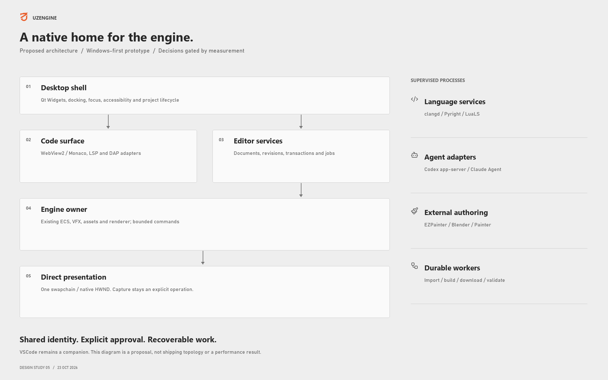
Read the report
Open the offline report and image gallery. Markdown chapters remain
the source of truth; the HTML is a generated convenience copy.
| Chapter |
Question answered |
| 01. Scope and evidence |
What was inspected, what was not run, and how confidence is stated |
| 02. Engine inventory |
Existing implementation and remaining authoring work across 31 capability areas |
| 03. Editor and performance |
Actual VSCode transport, existing safeguards, native UI maturity and measurement needs |
| 04. Native architecture |
Toolkit tradeoffs, HWND/thread/process ownership, deployment and licensing |
| 05. Code workspace |
Monaco alternatives, document authority, C++23/Python/Lua, LSP/DAP and recovery |
| 06. Agents and assets |
Codex/Claude, Meshy/EZPainter/DCC, asset pipeline defects and durable workflows |
| 07. Human workflows and screens |
Screen proposals, user actions, failure states, accessibility and acceptance |
| 08. Gap register |
45 consolidated gaps with priority, dependencies, effort class and acceptance |
| 09. Execution plan |
M0-M8, decision gates, provisional budgets, estimates and forward-only migration |
Findings use unique identifiers F-001 through F-035. Consolidated work items
use G-001 through G-045. They are report identifiers, not newly created
Rulebook tasks. Existing stabilization priorities remain authoritative.
What the project already has
| Area |
Source-backed position |
Main limitation for this product |
| Renderer and GPU infrastructure |
Substantial RHI, render graph, raster/lighting/environment/post-processing and ray-tracing source |
Feature presence, integration, backend availability and validated parity are different |
| ECS, scenes and properties |
Entities, component metadata, scene I/O and scripting hooks |
Durable editing identity, hierarchy round-trip and general transactions remain incomplete |
| VFX authoring |
Native overlay, graphs, curves, stack/browser widgets and undo |
Integrate existing behavior into shared workspace rather than restart it |
| Animation |
Skeletons/clips, controller state transitions, crossfade and GPU skinning |
Production interchange, authoring UI and remaining feature acceptance |
| Assets |
glTF/FBX, textures, compiled formats, sidecars, cook, manifests, pak/VFS and background loading |
Reliable incremental publication, dependencies and artist-level reimport workflow |
| VSCode integration |
Worker/N-API bridge, viewport streaming, panels and recovery safeguards |
Local viewport still crosses capture/video/webview stages; not a full native editor |
| Diagnostics |
CPU/GPU profiling interfaces, captures, pass/pixel diagnostics and extensive test source |
Reproducible current benchmarks and complete matched reference acceptance |
| Lua and core runtime |
Script lifecycle, many engine APIs, jobs, config, paths and build infrastructure |
Code editing/debugging is separate from script execution; Python tool execution is separate from embedding |
| Physics/audio/navigation/gameplay |
Interfaces, plans and some consuming systems |
Not at renderer/VFX maturity; do not market absent foundations as complete |
| Agent/provider product workflows |
Documentation MCP and planned integration surfaces |
Live editor agents, Meshy and EZPainter workflows were not established by inspected product code |
The inventory is broad, not a claim of an exhaustive line-by-line correctness
proof. No single percentage meaningfully represents completion of these systems.
Highest-impact conclusions
- Measure the correct path. The current topology differs from historical
native-HWND/in-process-extension descriptions. Analyze frame age and
input-to-present as well as GPU time and FPS.
- Do not erase completed stabilization. Queue limits, keyframe recovery,
owner-thread handling and fatal scene-input preservation already exist.
Reconcile older audits with current source and later closure records.
- Own editor state before scaling automation. Scene hierarchy is flattened
on serialization; VFX undo is not yet a universal document transaction system.
A native outliner or agent cannot make those contracts reliable by itself.
- Fix asset publication before provider expansion. Static inspection found
cache-hit type handling, sidecar invalidation/atomicity and publication
error-reporting gaps. A generated model must survive staging, import and
restart before a provider button is production-ready.
- Use Monaco for its real scope. It supplies editing, not the VSCode
extension host. Language servers, compilation databases, interpreter
selection, debugging, build tasks and shared unsaved documents need explicit
integration.
- Treat agents as supervised tools. Codex app-server and Claude Agent SDK
require versioned adapters, approvals, context limits, conflict-aware review
and process supervision. A terminal or chat panel is not the full workflow.
- Make paid/external jobs durable. Meshy submissions, expiring downloads,
ambiguous failures and unsupported cancellation require truthful job states.
EZPainter needs an actual API/license audit before embedding is promised.
- Do not promise full Unreal parity. Reuse Unreal-style workspace concepts
selectively: docking, outliner, inspector, content browser and specialized
editors. UzEngine's implementation and product scope remain its own.
Visual proposals
Eleven workspace screens and one architecture diagram are included. Images are
static design studies, not screenshots of an implemented replacement editor.
Navigation is document-driven: tabs show filenames, and file type selects the
editor/layout (.uzscene, C++/Python/Lua, material, rig, animation or VFX).
Scene/Code/Assets/VFX are not global mode tabs. Agents, asset browsing, Meshy jobs
and Paint integrations are contextual docks/panels/actions. Screen names below
describe these contexts. A scene can switch between visual editing and explicitly
linked source code; no automatic scene-to-C++ generation or mandatory scene/C++
association is implied. Each linked document retains its own save/revision state.
Their state is illustrative; no provider jobs were submitted.
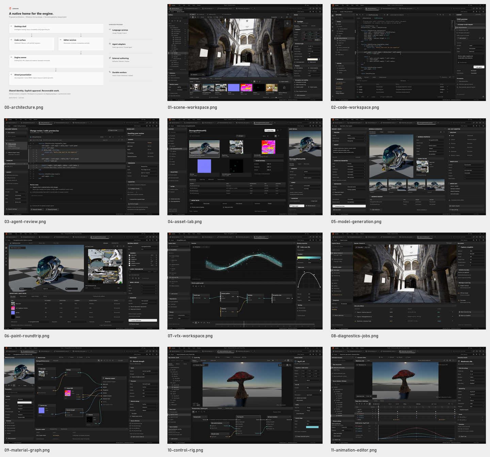
| Screen |
Human purpose |
| Scene |
Compose and inspect scene while viewport remains primary |
| Code |
Edit scripts/tools/native source with contextual engine information |
| Agent review |
Review changes, approvals and validation before applying |
| Asset lab |
Inspect source, provenance, dependencies and import state |
| Model generation |
Review request/cost, candidate and staged publication |
| Painting round-trip |
Preserve asset identity and channel contracts across external painting |
| VFX |
Reuse stack, graph, curve and timeline authoring |
| Diagnostics and jobs |
Inspect captures and recover background operations |
| Material Graph |
Author typed material connections and review compile/apply state |
| Control Rig |
Inspect skeleton/control relationships and proposed rig evaluation |
| Animation Editor |
Author clip timing, keys and curves against a known skeleton |
Revision 5 (2026-10-23) uses real DamagedHelmet sample rendering and actual maps; the material graph remains uncompiled. Control Rig is a MushroomMonster.uzrig draft around a runtime character preview. The real source animations/AS_Mushroom_Idle.uzanim plays through runtime alias Mushroom_Idle on the 22-bone character, with four-second duration at 30 fps. The UI's Mushroom_Idle.uzanim is a draft document referencing that source; timeline keys and curves remain illustrative, not extracted. These screens add no native authoring implementation or measured host-performance evidence.
Visual provenance and reproduction documents fresh runtime
Sponza, Materials, DamagedHelmet and character captures, run outcomes, synthetic VFX
illustration and hashes. The revised workspace proposals use compact 1920 x 1200
layouts with Lucide iconography; they remain static design studies. Revision 5
uses neutral gray/black shell surfaces (R=G=B), retaining color in syntax,
semantic details and source imagery. Navigation is document-driven; the footer
is DESIGN STUDY 05 and manifest revision is 5. Scene selects illustrative Sunlight
properties without adding a fabricated object-transform gizmo to the capture.
Code centers on a standalone OrbitPreview Lua example with disconnected language
services; Agent Review shows a separate proposed diff blocked on review/revision
checks. Assets exposes real local dependencies and a draft import recipe.
Generation shows local reference angles and zero remote candidates. Paint shows
source textures, an explicit draft channel map and an empty disconnected layer
stack. None of these controls establishes implemented integrations or measured
editor performance. Capture warnings and provenance remain documented below.
The same helmet appears across asset/generation/painting views to show continuity;
it is not evidence of Meshy output or an EZPainter integration.
Recommended delivery order
| Stage |
Deliverable |
Decision |
| M0-M1 |
Matched baseline and one native viewport; optional lazy code view |
Continue only after ownership, presentation and responsiveness pass |
| M2-M3 |
Documents, hierarchy, transactions, recovery and reliable assets |
Prove data safety before expanding automation |
| M4-M5 |
Code services, debugger/process supervision, durable jobs and agent review |
Prove language environment and approval/revision semantics |
| M6 |
Meshy and supported DCC round-trips |
Validate provider contracts and actual EZPainter capabilities |
| M7-M8 |
Professional editors, multiple views, accessibility, packaging and hardening |
Release only supported, tested capabilities |
Planning estimates: 3-8 person-weeks for M0+M1, then re-estimate.
The bounded M0-M8 program totals 38-85 person-weeks, not calendar weeks
and not completion of the entire engine. Chapter 09 states assumptions,
dependencies, uncertainty and exclusions. These are not measured productivity
or an approved schedule.
Validation status
No new runtime build, native unit suite, live-editor benchmark, GPU debugger
capture or matched Falcor comparison was run. Seven sample runs supply eight published frames: Sponza, Materials, four DamagedHelmet cameras and two character frames from one run. Six runs exited 0. Character images were produced but shutdown exited 1 with three remaining D3D12MA allocations totaling 6,881,280 bytes. No engine fix was made. These are image-production runs, not benchmark or source-build certification; exact records are in the image inventory.
The stabilization record dated 2026-10-17 reports 7,827 native tests:
7,807 passed, 17 skipped, 3 pre-existing VFX failures; exit code 1.
It is historical evidence, not a current all-green gate. The broader matched
Falcor matrix remains open.
Documentation validation covers report structure, local links, identifier
coverage, image hashes/dimensions and static visual inspection. It does not
validate interactive docking, keyboard input, IME, accessibility, language
services, agent approval behavior or native presentation performance.
Changes cover this report and its reproducible assets, plus the explicitly
authorized replacement of root .screenshots with fresh runtime captures.
Existing runtime/math, dependency and reference changes were preserved.
Source: README.md
01. Scope and evidence
Survey date: 2026-10-22. Scope: current UzEngine capabilities, remaining work,
and a high-performance desktop editor integrating code, agents, model generation,
and painting workflows.
Inspected HEAD: 259ae89623473fd5c1694e2e5a4a77d1c7597182. Existing math changes
and reference-document moves make this a working-tree survey, not a clean
commit-pinned certification. They are outside this documentation change.
Additional Slang third-party and agent-memory changes were visible during final
review. They were not made or audited by this report task. The report is not a
certification of that concurrent dependency update or its resulting builds.
Evidence policy
Implementation, runtime integration, editor usability, persistence, and tests are
separate dimensions. A source file, checked task, and working workflow are not
interchangeable evidence.
| Label |
Meaning |
| Observed |
Source or artifact inspected during this survey. |
| Recorded |
Result from an existing report; not rerun here. |
| Partial |
Some code exists, but complete workflow or acceptance is missing. |
| Planned |
Specification or task describes intended work. |
| Unverified |
Insufficient evidence; does not mean absent. |
| Proposed |
Recommendation, not a shipped capability. |
The actual layout is runtime/engine, runtime/editor, extension, napi,
mcp, scripts, and tools. Historical references to src/engine do not
describe the current tree.
F-001. Task counts are not product-completion metrics
- Evidence:
.rulebook/PRIORITIES.md:9 distinguishes checklist status from
verification; its reconciliation section identifies overlapping scene, fog,
material, animation, and render-bridge tasks. The later stabilization ledger
records fixes that older audit prose still presents as missing.
- Impact: checklist counting can classify existing code as absent or overstate
readiness. Old findings must be reconciled with current source and later gates.
- Confidence: high for metadata drift; individual capabilities still need evidence.
- Action: reconcile residual scope before scheduling duplicate implementations.
This report proposes work but does not reorder the active Rulebook queue.
Verification limits
No new engine build, full suite, live-editor benchmark, GPU debugger capture or
matched Falcor matrix was executed. Visual revision 5 (2026-10-23) uses seven sample runs and eight published frames from the pre-existing binary: Sponza, Materials, four DamagedHelmet cameras and character frames 120/240. Six runs exited 0; character images were produced but shutdown exited 1 with three D3D12MA allocations totaling 6,881,280 bytes. No engine fix was made. See capture provenance. These are image-production runs, not matched acceptance; historical test results retain their original scope.
Sandboxed execution was unavailable; terminal reads outside the sandbox restored
access. An earlier browser-based file-reading attempt was abandoned after
inconsistent TypeScript reads. Those inconsistent results are excluded. Source
conclusions use direct terminal inspection.
Integration research uses official documentation. Assistant-session tools for
Blender, Substance Painter, Claude Code, or Codex do not prove these integrations
ship with UzEngine. Capabilities of external projects remain unverified unless
local code or an explicit contract supplies evidence.
Visual provenance
Screen images depict proposed workflows, not a working native editor. Example
jobs, modifications, assets, and telemetry are illustrative. Actual renderer
captures used as source material are identified in the image inventory.
Documentation is in English under the repository rule. The requested directory
is preserved exactly as docs/analysis/GUI.
The visual inventory is images/README.md; images/manifest.json records local
source/output hashes and dimensions. Eleven document/panel proposals and one architecture diagram are composed offline around real sample runtime imagery. DamagedHelmet appears across related views for continuity, not as generated candidates. Mushroom_Idle runtime preview is real, but rig graphs and timeline keys are draft authoring UI. VFX remains a synthetic illustration; details and failed-run evidence are centralized in the image inventory.
Document checks cover chapter links, finding/gap identifiers and image artifacts.
Static image inspection does not establish interactive desktop accessibility,
docking, focus/IME or performance. The offline HTML report is generated from the
Markdown chapters and does not implement the proposed editor.
Source: 01-scope-and-evidence.md
02. Engine inventory and editor readiness
Audit date: 2026-10-22. Scope: current native runtime, engine services, native editor primitives, UI and validation evidence. This chapter is a source inspection, not a new build, benchmark or exhaustive line-by-line correctness review. Code was read through the native terminal. Visual revision 5 (2026-10-23) publishes eight frames from seven sample runtime runs using a pre-existing binary. Character capture produced images but exited 1 on a shutdown allocation leak; these runs do not certify this working tree. See capture provenance and warnings. Historical acceptance is labelled separately from current source presence.
Reading the maturity labels
- Implemented: concrete source exists for the stated behavior; this does not establish production acceptance.
- Integrated: a caller or frame path connects that behavior to the application.
- Partial: useful implementation exists, but the wider capability or authoring workflow is incomplete.
- Planned / not located: the named capability appears in plans or interfaces, but its runtime implementation was not located in the inspected directories and searches.
- Historical validation: a dated report records executed checks; those checks were not repeated in this audit.
There is no meaningful single percentage of engine completion. A renderer, editor shell, asset pipeline, gameplay runtime and tool integration have different acceptance criteria. A checked task, existing header, registered CVar and live rendered feature are different kinds of evidence.
References use repository-relative paths and 1-based line numbers. Paths are plain code so the report remains portable across clones.
Inventory size
Native file inventory counts .h, .cpp and .mm recursively within each runtime/engine module. They describe source distribution, not feature completeness or tested coverage.
| Module |
Native files |
Module |
Native files |
| renderer |
315 |
vfx |
289 |
| rhi |
90 |
scripting |
65 |
| ecs |
50 |
asset |
45 |
| ui |
31 |
shader |
27 |
| math |
21 |
app |
20 |
| material |
20 |
animation |
17 |
| property |
9 |
job |
8 |
| core |
8 |
containers |
6 |
| ipc |
5 |
config |
4 |
| profiling |
4 |
logging |
3 |
| assertions |
2 |
event |
2 |
| memory |
2 |
paths |
2 |
| physics |
2 |
random |
1 |
runtime/editor contains 32 files. runtime/tests contains 410 files, including fixtures and baselines; this is not a test-case count. The source already represents a substantial renderer and VFX authoring investment. Replacing the surrounding shell should preserve this investment.
Capability matrix
| Area |
What exists now |
Maturity and evidence |
What remains for the proposed editor |
| Application lifecycle |
Application class, engine loop, time manager, module and subsystem registries |
Implemented. runtime/engine/app/application.h:97; engine_loop.cpp:114, :142, :171 |
Editor session lifecycle, document recovery and explicit edit/play ownership on top of the runtime lifecycle |
| Core utilities |
Logging/assertions, paths/configuration, math, containers, ownership helpers, events and profiling interfaces |
Implemented foundation exposed by runtime/engine/uzengine.h:21 and module inventory |
Reuse conventions; do not replace core services merely to adopt a GUI framework |
| Job scheduling |
Worker pool, priorities, work stealing and parallel-for API |
Implemented. runtime/engine/job/job_system.h:52, :112, :201 |
Separate long external jobs from frame work; expose progress/cancellation and workload budgets |
| Native runtime API |
Initialization, viewport creation, resize, frame render, entities, selection, input, logs, capture and encoding exports |
Integrated C API. runtime/engine/app/runtime.h:132, :164, :214, :285 |
Session/context handles, multi-viewport policy, capability discovery and safe asynchronous editor commands |
| RHI |
Device, command list, swapchain, fences, resources and GPU timing abstractions; DX12, DX11, Vulkan and Metal source |
Implemented backends, not equal-platform acceptance. runtime/engine/rhi/rhi_factory.cpp:39, :50, :62, :74 |
Choose Windows reference backend first; validate every other backend separately. Capability-gate UI controls |
| Render graph |
Registered passes, compilation, execution, resource state tracking and dependent UAV ordering |
Integrated. runtime/engine/renderer/scene/scene_render_frame.cpp:183; runtime/engine/renderer/render_graph/render_graph_builder.cpp:496, :537 |
Visual graph inspection and per-view state ownership; preserve ordered-queue constraints |
| Render graph allocation |
Persistent transient-resource pool with between-graph reuse |
Implemented reuse, explicitly no within-graph aliasing or fence retirement. runtime/engine/renderer/render_graph/render_graph_resources.h:8, :33 |
Budget multiple viewports and histories before assuming allocations can be shared freely |
| Raster frame |
Geometry, decals, lighting, translucency, particles, post-process and overlays are registered in frame order |
Integrated. runtime/engine/renderer/scene/scene_render_frame.cpp:183 |
Native shell should host the existing renderer, not rebuild the rendering pipeline |
| Shadows and local lighting |
Shadow renderer, cascades/cache/atlas, local-light atlas, clustered LightCull and distance-field passes |
Integrated source. runtime/engine/renderer/frame/frame_lighting_pass.cpp:112; frame_ao_passes.cpp:175, :323 |
Match authoring controls to actual validated light/shadow capabilities and expose cost/debug views |
| GI, reflections and AO |
GTAO, SSGI, global distance-field composition, radiance-cache tracing, SSR and RT reflection registration |
Integrated conditional paths. runtime/engine/renderer/frame/frame_ao_passes.cpp:67; frame_gi_passes.cpp:124, :306, :568, :891 |
Per-feature hardware/capture acceptance, clear mutually active paths and diagnostic visibility; registration alone does not certify parity |
| Atmosphere, fog and clouds |
ECS components, Lua APIs, renderer resources and frame integration files |
Implemented substantial subsystem. runtime/engine/ecs/environment/sky_atmosphere_component.h; height_fog_component.h; volumetric_clouds_component.h; runtime/engine/renderer/frame/frame_atmosphere_passes.cpp |
Current-source visual acceptance and parameter UX; do not interpret stale froxel task as absence of fog |
| Post-processing |
Temporal producer, SSR composite/history copy, bloom, tonemap and diagnostic region readback |
Integrated restricted chain. runtime/engine/renderer/frame/frame_postprocess.cpp:277, :402, :463, :501, :512, :583 |
Motion blur, DOF, CAS, FXAA, lens flare and LUT workflows must not appear enabled merely because configuration/shader files exist |
| Upscaling |
Common temporal interface, TAA/TSR source and vendor SDK branches; unavailable-backend handling |
Partial and build-dependent. runtime/engine/renderer/scene/scene_upscaler.cpp:62; passes/postprocess/fsr2_upscaler.cpp:555; dlss_upscaler.cpp:697 |
Report requested versus effective backend, SDK availability and hardware support. Validate real frame/camera inputs |
| Path tracing |
Path-tracer passes, ray-tracing managers, BLAS/TLAS, shader table, light-BVH and denoiser source |
Source exists; broad renderer-reference acceptance is not established. runtime/engine/renderer/passes/pathtracing/path_tracer_pass.cpp; pipeline_path_tracer_pass.cpp; closure report cited below |
Present as a capability with documented limits. Do not advertise it as an independent ground-truth oracle |
| Material graph |
Material graph persistence, expression graph and HLSL translation, compiler-extension hooks and material pipeline |
Implemented. runtime/engine/material/material_graph.h:116, :168; compiler/hlsl_material_translator.h:63; runtime/engine/renderer/material/material_pipeline.cpp |
Authoring session, compile diagnostics, transactional edits and validated per-node/per-domain contracts |
| Asset import |
glTF/GLB mesh importer, FBX importer, texture/shader import, sidecars, registry and compiled formats |
Implemented. runtime/engine/asset/importers/mesh_importer.cpp:342; fbx_importer.cpp:1136; asset_registry.h:30 |
Unified asset identity/dependencies, reimport UX, cancellation, source provenance and large-project indexing |
| Virtual file system |
Loose files, pak storage, layered mounts and lazy pak/index behavior |
Implemented thread-safe reads with restricted mount mutation. runtime/engine/asset/vfs.h:27, :139, :222, :385 |
Reuse paths/manifests from the application; preserve path-agnostic runtime and explicit ownership during reload |
| Background assets |
CPU mesh read/parse and texture decode workers; render thread integrates GPU uploads |
Integrated design. runtime/engine/renderer/upload/async_mesh_loader.h:3, :12; async_texture_decoder.h:3; scene/scene_renderer.h:755 |
Measured per-frame integration budgets, import-progress UI and cancellation/lifetime semantics |
| ECS |
EnTT world, generational handles, component types, dirty flags and tick systems |
Implemented. runtime/engine/ecs/core/world.cpp:15, :43, :70; entity.h:38 |
Durable editor identities, selection restoration and explicit document identity beyond ephemeral runtime IDs |
| Scene persistence |
JSON scene load/save, component dispatch, prefab/children traversal and top-level validation before mutation |
Integrated with tested fatal-input preservation. runtime/engine/ecs/loaders/scene_loader.cpp:1119, :1442; runtime/tests/engine/ecs/test_scene_loader.cpp:109 |
Hierarchy round-trip and richer transactional load/recovery. Current save flattens children |
| Reflection/property data |
Class/property metadata, categories/flags and JSON serialization/deserialization |
Implemented. runtime/engine/property/property_info.h:38; property_serializer.cpp:228, :244 |
Property adapters with validation, change notifications, dirty tracking and undo; partial deserialization is not a transaction |
| Lua gameplay scripting |
Lua VM, restricted globals, broad engine APIs and per-entity start/update/stop lifecycle |
Integrated. runtime/engine/scripting/lua_vm.cpp:53, :139, :156; script_system.cpp:274, :295, :332 |
LSP, debugger adapter, source navigation, breakpoints and reliable editor reload/diagnostic workflow; script execution is not IDE integration |
| Skeletal animation |
Skeleton/clip formats, pose sampling, controller parameters/state transitions, crossfade, subsystem and GPU skinning |
Implemented and integrated. runtime/engine/animation/animation_controller.cpp:15, :85; skeletal_mesh_subsystem.cpp:337, :346, :570, :701 |
Authoring/preview tools, round-trip verification and residual animation features. Do not restart animation from stale zero-checked task |
| Physics |
Contact/fracture listener registry and VFX integration interfaces |
Partial interface layer, not Jolt simulation. runtime/engine/physics/physics_listener_registry.h:7, :122 explicitly identifies future PhysicsWorld |
Physics world, bodies/colliders, stepping, queries, character controller and authoring validation |
| Audio |
Asset-type and VFX audio-spectrum/provider concepts |
Runtime audio engine not located in searched native modules. runtime/engine/asset/asset_manifest.h:67; runtime/engine/vfx/modules/audio_spectrum_module.h:38 |
Playback engine, voices, buses, spatialization, import and authoring controls; FFT consumer does not establish audio playback |
| Input/camera |
Platform input, fly camera, editor input and Lua input/camera APIs |
Implemented basic layers. runtime/platform/windows/input.h; runtime/editor/input; runtime/engine/scripting/core/lua_camera_api.cpp |
Action mapping/rebinding, viewport/panel focus ownership and proposed gameplay camera modes remain distinct work |
| Native UI primitives |
Own Slate-style widget, layout, renderer, focus, input, buttons, scrollbox, editable text, tooltip and drag/drop files |
Implemented early framework, not UE Slate equivalence. runtime/engine/ui/slate_widget.h; slate_renderer.h:89; slate_editable_text.h:3 |
Text/IME/accessibility, precise clipping, window/docking integration and performance acceptance for general desktop use |
| VFX native authoring |
Substantial VfxEditorOverlay, tabs/splitter, parameter/curve/tree/graph/browser widgets and concrete undo commands |
Implemented authoring subsystem. runtime/engine/vfx/editor/vfx_editor_overlay.h:67, :430, :452; undo/vfx_undo_stack.h:38 |
Reuse mature overlay behavior; evaluate declarative composition migration separately. Do not equate prototype coverage with absence of native VFX editor |
| General editor primitives |
Grid, gizmos, outlines, screenshot, stats, toolbar and single-entity selection/picking |
Implemented reusable pieces. runtime/editor/selection/selection_manager.h:1, :63; runtime/editor/uzeditor.h |
Multi-selection, general document/transaction model, hierarchy editing and full workspace shell |
| Diagnostics/profiling |
CPU capture export, RHI GPU timings, pass dump, pixel debug and diagnostic command options |
Implemented tools. runtime/engine/profiling/profile_capture.h:5, :95; runtime/engine/app/application.h:252, :256, :260; rhi/rhi_device.h:493 |
Unified profiler/pass inspector and timestamped baseline comparisons; use existing diagnostics before rearchitecting for speed |
| Platform/build/test |
Windows/macOS/Linux platform files, Zig C++23 build and broad unit fixtures |
Source and historical Windows validation. runtime/build.zig:53, :58; runtime/platform/windows/platform_window.h:118 |
Reproducible chosen-platform build and fresh acceptance. Cross-platform files do not imply equivalent editor support |
Findings relevant to the GUI decision
F-002. The current embedded API is one viewport with strict ownership
runtime/engine/app/runtime.cpp:308 rejects viewport creation outside Windows. At :312, a second viewport is rejected until the existing viewport is destroyed. runtime/engine/app/runtime.h:6 documents initialization/destruction restrictions and requires frame rendering on the thread that created the viewport. Returned strings have temporary internal-buffer lifetime (runtime.h:14). These are useful current embedding contracts, not a multi-document/multi-window editor API.
The existing OwnerCommandQueue is a single-slot synchronous rendezvous, not a general asynchronous work queue (runtime/engine/app/owner_command_queue.h:18). Submit returns Busy when occupied (:35) and waits for pickup/completion (:44, :57). Completion timeout does not undo a command already executing. Commands must not throw or recursively submit. A host UI must not call it synchronously for every property-drag event and then assume native UI automatically stays responsive.
Required next contract: explicit EditorSession/Viewport identifiers, immutable UI snapshots, bounded mutation requests with coalescing, completion events and documented world/render/GPU ownership. Begin with one main native viewport; add preview windows only after independent history/resources and lifetimes are proven. This is a recommendation, not implemented functionality.
F-003. Scene I/O is real, but scene hierarchy does not round-trip
Fatal top-level input is checked before live world clearing: malformed JSON, non-object roots and missing/non-array entities return first (runtime/engine/ecs/loaders/scene_loader.cpp:1131, :1148). Regression tests explicitly preserve world/CVars/materials on malformed input (runtime/tests/engine/ecs/test_scene_loader.cpp:109). The earlier blanket claim that all load failures destroy the scene is stale.
However, child recursion calls ProcessEntityJson(world, child, sourceName) without a parent argument (scene_loader.cpp:1106), serialization writes children = [] (:1435), and SaveScene emits every valid entity at root level (:1452). Existing parsing of nested JSON is not persistent parent/child editor behavior. Top-level validation also does not imply rollback of every later per-component warning or mutation.
A human-facing outliner must reuse existing runtime parent relationships and cycle/self-parent rejection, then preserve those relationships through scene loading and saving. The shared hierarchy boundary already rejects cycles (runtime/engine/ecs/scene/scene_component.cpp:98; stabilization checklist item 2.4). Remaining work includes hierarchy-preserving serialization, durable prefab/reference identity and end-to-end reparent/save/reopen tests. It should not present a tree that is discarded when saving.
The implementation is substantial enough to evaluate and reuse, particularly for VFX tools. Nevertheless, runtime/engine/ui/slate_editable_text.h:3 explicitly describes a single-line control and excludes selection, clipboard, IME and multiline behavior. This is unsuitable as the Python/C++/Lua code editor. Monaco or another proven editor should own that responsibility.
runtime/engine/ui/slate_renderer.cpp:83 rejects elements wholly outside a scissor rectangle but permits partial overlaps; the header describes precise GPU scissoring as later work (slate_renderer.h:18). SlateRenderer and TextRenderer batches are single-threaded (slate_renderer.h:21). These limitations matter for nested panels, scrolling and browser/native interoperation. They are not proof of an observed clipping defect: the subsequent screenshot runs did not exercise a targeted nested-widget clipping acceptance case.
Do not confuse three surfaces: engine-native UI primitives, the substantial native VFX overlay, and the proposed full editor shell/game UI stack. Completing one does not automatically complete the others. A custom shell must fund keyboard/IME/accessibility, docking, multi-monitor/DPI, clipboard, drag/drop, modal/focus rules and automation, not only draw attractive widgets.
F-005. Reusable editing mechanisms exist, but universal transactions are not established
Reflection metadata provides field names, types, descriptions, categories and flags (runtime/engine/property/property_info.h:38). JSON deserialization reports partial success and retains successful field writes; the contract explicitly allows partial results (runtime/engine/property/property_serializer.h:68). This cannot by itself provide atomic undoable property changes.
VFX has real command objects and undo/redo history (runtime/engine/vfx/editor/undo/vfx_undo_stack.h:38, vfx_undo_commands.h:58). General scene selection currently holds one entity (runtime/editor/selection/selection_manager.h:1). Native searches for transactions/undo found VFX-specific implementations, not a universal scene/material/asset document transaction service in the inspected runtime/editor scope.
Build the shared edit contract around before/after state, validation, command grouping, undo/redo, dirty/save points, version conflicts and target identity. Human gestures, Lua tools, Claude Code/Codex operations and asset import acceptance should use that same contract. A VFX-specific stack can inform this work without pretending all editors already share it.
F-006. Renderer options must distinguish configuration from live capability
Current source labels MotionBlur, DOF, CAS and FXAA settings inert (runtime/engine/renderer/frame/frame_postprocess.cpp:32, :48). The registered chain at :277, :402, :463, :501, :512 matches temporal processing, SSR history/composite, Bloom and Tonemap. docs/analysis/post-process/postprocess-chain-status.md:5 documents the additional inactive effects and corrects earlier misleading pass-count claims.
SDK-less FSR2 and DLSS explicitly return unavailable (runtime/engine/renderer/passes/postprocess/fsr2_upscaler.cpp:568; dlss_upscaler.cpp:700). Availability fallback exists in runtime/engine/renderer/scene/scene_upscaler.cpp:62; it must not be presented as the requested vendor algorithm running. The FSR2 SDK branch still sets fixed frame time/near-plane/FOV (fsr2_upscaler.cpp:519, :530, :532), which warrants real camera/timing integration and hardware validation before broad acceptance.
The GUI should expose actual capability state and effective selection. New controls for inert effects create false functionality. No new shader or visual-parity claim is made by this inventory.
F-007. Rendering and VFX maturity exceeds several gameplay foundations
There are concrete Lua scripting and skeletal animation implementations, including GPU skinning dispatch (runtime/engine/animation/skeletal_mesh_subsystem.cpp:570, :701). Treating animation as wholly absent would waste existing work.
By contrast, runtime/engine/physics/physics_listener_registry.h:7 explicitly describes a future PhysicsWorld. Audio-spectrum VFX consumes a provider interface (runtime/engine/vfx/modules/audio_spectrum_module.h:38), not an implemented engine mixer. Searches of native engine/editor/platform sources did not locate a Python embedding runtime, Jolt world implementation, XAudio2 engine, Recast/Detour navigation runtime or general gameplay save-slot service. Their pending Rulebook scopes corroborate expansion work, but absence here is scoped to the inspected code, not a claim about every external repository.
Python editing and Python tool execution should be specified separately from Python gameplay embedding. C++ language tooling/build/debug is separate from safe live coding of loaded game code. Lua execution is separate from LSP/DAP support. The proposed editor can deliver useful renderer/asset/material/VFX authoring before all gameplay systems exist, provided it describes those boundaries honestly.
F-008. Historical validation is strong evidence, but not an all-green current gate
docs/analysis/project-stabilization/16-audit-closure-2026-10-17.md:54 records a successful reviewed-source ReleaseFast build, GPU validation with specified barrier IDs absent, reference-image identity, native tests and extension/MCP gates. Its native result is 7,827 tests / 781 suites: 7,807 passed, 17 skipped and 3 pre-existing VFX failures, with exit 1. It explicitly does not claim every native test passes.
The same report keeps Falcor matrix item 4.1 open. Static calibrated proxy results do not establish matched camera-cut, deformation, temporal-toggle, resize and live-editor acceptance. Old priorities also warn that checklist status is not fresh test evidence (.rulebook/PRIORITIES.md:10) and that scene-loader, animation, material-graph and froxel tasks need reconciliation.
This audit did not run the full native suite or build. Before committing to a replacement shell, capture fresh standalone/current-host/candidate measurements under the same revision, release build, scene, renderer backend, render/output resolution and feature settings. Do not claim a measured speedup from the architecture proposal alone.
- Keep rendering independent of interactive panel stalls. The standalone application waits for the reused frame allocator's fence at
runtime/engine/app/application.cpp:285, renders at :319 and presents at :326. If a GUI thread drives that whole sequence, it inherits those waits. Decide ownership explicitly and communicate through bounded snapshots/commands.
- Keep GPU transfers intentional. CPU asset workers do not own the RHI (
runtime/engine/renderer/upload/async_mesh_loader.h:14). Preserve that separation; importing/generated assets should not mutate GPU state from a tool callback.
- Treat resize as a synchronization event.
runtime/engine/rhi/rhi_swapchain.h:71 requires GPU idle before resize. Coalesce interactive resizing and measure stalls. Do not repeatedly recreate a swapchain on every transient panel-layout sample without measurement.
- Respect graph resource ownership. The pool is not thread-safe, has no within-graph aliasing and requires ordered reuse/caller-owned GPU completion for destruction (
runtime/engine/renderer/render_graph/render_graph_resources.h:33). Multiple independent preview viewports need their own resource/history ownership strategy.
- Keep diagnostic stalls out of normal frame accounting. Some explicit captures call WaitIdle, for example application screenshot/preload paths (
runtime/engine/app/application.cpp:338). Record diagnostic modes in benchmarks rather than comparing a capture-heavy run with a clean viewport run.
- Separate UI rendering cadence from viewport cadence. Static panels can invalidate on change; active viewport, animated previews and code editing have different schedules. Existing Slate code is not evidence that the full proposed application already has this policy.
- Keep external tools out of render-critical work. Builds, Python tasks, Claude/Codex sessions and Meshy/EZPainter jobs need bounded queues, cancellation, logs, output provenance and result acceptance on the owner thread. Remote latency should never be a frame dependency.
Recommended remaining work, by user-visible result
| Desired result |
Existing base to reuse |
Missing acceptance or implementation contract |
| Responsive scene workspace |
Application, RHI, SceneRenderer, grid/gizmo/picking, native platform window |
Shell/docking, viewport ownership, snapshot updates, layout persistence, DPI/focus testing and measured p95/p99 response |
| Reliable Outliner and Inspector |
ECS, metadata, scene I/O and selection |
Persistent hierarchy, multi-selection, transactional edits, stable editor IDs and hierarchy-preserving round trips |
| Safe asset authoring |
Importers, sidecars, manifests, VFS and background loading |
Search/index/dependency model, reimport/cancel/retry UX, source/output ownership and provenance |
| Material workspace |
Graph persistence/HLSL translation/material pipeline |
Full graph document workflow, diagnostics, validated controls, preview lifetime and shared undo contract |
| VFX workspace |
Existing overlay/composition/widgets/undo |
Preserve proven workflows, reconcile declarative migration tests, integrate into shared shell without losing behavior |
| Animation workspace |
Clips/skeletons/controller/skinning |
Asset preview, timeline/state-machine editing and feature-specific validation; no assumption of full animation-suite parity |
| Python/C++/Lua code workspace |
Lua runtime and existing engine APIs/build system |
Monaco or equivalent, language servers, debugger adapters, process/task management, project config and file-change reconciliation |
| AI-assisted editing |
Existing runtime entry points plus proposed command contract |
Structured actions, contextual snapshots, diff/review, provenance, cancellation and undoable application of changes |
| Diagnostics workspace |
Pass inspector infrastructure, CPU/GPU profiling, dump/pixel/validation tools |
Unified timeline, frame/capture identity, capability display and reproducible baseline comparison |
| Production gameplay features |
ECS/tick/scripting/math/jobs/asset base |
Physics/audio/navigation/save/input/game ABI scopes tracked in Rulebook; implement as separate deliverables after current priorities |
The practical migration unit is therefore an editor host and shared editing services around the existing renderer, with a measured native viewport path and a proven embedded code editor. The inventory does not justify replacing the renderer, discarding native VFX authoring, or claiming that the current Slate layer already solves a polished desktop editor.
Source: 02-engine-inventory.md
Audit date: 2026-10-22. Scope: source inspection of the extension, N-API bindings, runtime viewport/encoding path and native UI. No application, benchmark, build or test suite was executed for this chapter. Line references identify the inspected working tree and can move after subsequent edits.
The current VSCode viewport is a streamed 3D image, not a visible native child window embedded in the editor. The extension forks a worker, the worker loads the N-API addon, the runtime renders to a hidden HWND, and the resulting image travels through GPU readback, CPU staging, H.264 encoding, base64, extension IPC, webview messaging, WebCodecs and a canvas. This is a source-confirmed transport cost, not a measured explanation of every reported slowdown.
The project also has a substantial native VFX editor and a separate, less complete Slate-style widget framework. These must not be collapsed into one maturity claim. A desktop migration can reuse engine/editor behavior while replacing image transport and choosing a shell on evidence.
| ID |
Finding |
Evidence |
Impact |
Confidence |
| F-009 |
Current process and viewport topology differs from historical in-process-extension/native-HWND guidance |
extension/src/runtime-client.ts:445; extension/src/panels/viewport-panel.ts:192; runtime/engine/app/runtime.cpp:354 |
Architecture decisions based on the old description would optimize the wrong path |
High: executable calls inspected |
| F-010 |
The interactive viewport incurs GPU readback, CPU copying/conversion and encoded web transport |
runtime/engine/app/runtime.cpp:741; runtime/engine/app/runtime.cpp:1413; runtime/engine/ipc/h264_encoder.cpp:450; runtime/engine/ipc/h264_encoder.cpp:659; extension/src/runtime-worker.ts:408 |
Adds bandwidth, latency stages and failure modes that direct native presentation can avoid |
High for existence; unmeasured for cost share |
| F-011 |
Queue bounds and recovery exist, but do not establish end-to-end responsiveness |
extension/src/runtime-worker.ts:375; extension/src/runtime-worker.ts:396; extension/src/panels/viewport-panel.ts:230; extension/src/panels/viewport-panel.ts:735; napi/src/render_thread.cpp:238 |
Prevents repeating already-fixed unbounded-queue claims; requires frame-age/input instrumentation to judge UX |
High for mechanisms; performance unmeasured |
| F-012 |
Native VFX editing is materially more complete than the declarative Slate editor prototype |
runtime/engine/vfx/editor/vfx_editor_overlay.h:326; runtime/engine/vfx/editor/vfx_editor_overlay.h:430; runtime/engine/vfx/editor/vfx_editor_slate.cpp:133 |
Existing domain/UI investment can be reused; neither wholesale rewrite nor a claim of a finished desktop shell is justified |
High for inspected composition and prototype |
| F-013 |
Current Slate text and clipping primitives are insufficient as a general desktop authoring foundation without more work |
runtime/engine/ui/slate_editable_text.cpp:112; runtime/engine/ui/slate_editable_text.cpp:146; runtime/engine/ui/slate_renderer.cpp:68; runtime/engine/ui/slate_renderer.cpp:83 |
Unicode editing, IME, selection and precise nested clipping need acceptance before broad human-facing use |
High for inspected primitives; not a claim about every UI path |
| F-014 |
Existing automated contracts and manual streaming harness do not prove full editor performance |
extension/src/tests/panels.test.ts:294; extension/src/tests/runtime-client.test.ts:386; extension/src/tests/viewport-streaming-test.ts:9 |
Toolkit selection still needs matched-scene measurement and human workflow acceptance |
High: test bodies and boundaries inspected |
| Stage |
Current implementation |
Source |
| Extension lifecycle |
Lazy cp.fork, message correlation, crash reporting and restart |
extension/src/runtime-client.ts:445 |
| Native entry |
Worker calls addon createViewport |
extension/src/runtime-worker.ts:345 |
| Viewport request |
Generic panel requests parent 0, initially 1280 by 720 |
extension/src/panels/viewport-panel.ts:192 |
| Scene document viewport |
Custom scene editor also requests parent 0 with pending dimensions |
extension/src/panels/scene-editor-provider.ts:264 |
| Window ownership |
Runtime creates HWND; parent branch reparents and shows it; null-parent branch stays hidden |
runtime/engine/app/runtime.cpp:340 |
| Render cadence |
Panel requests 60 FPS; dedicated native loop renders, collects encoded output and sleeps remaining budget |
extension/src/panels/viewport-panel.ts:206; napi/src/render_thread.cpp:191; napi/src/render_thread.cpp:238 |
| Capture |
Backbuffer including editor overlays transitions to CopySrc, is captured, then returns to Present |
runtime/engine/app/runtime.cpp:724 |
| CPU handoff |
Ready readback is mapped, submitted to asynchronous encoder, unmapped and advanced |
runtime/engine/app/runtime.cpp:1410 |
| Encoder |
FFmpeg codec selection, CPU RGBA-to-NV12 conversion and background encoding |
runtime/engine/ipc/h264_encoder.cpp:114; runtime/engine/ipc/h264_encoder.cpp:450 |
| N-API delivery |
Encoded bytes copied into a vector and delivered by nonblocking thread-safe callback |
napi/src/render_thread.cpp:219 |
| Worker transport |
H.264 bytes become base64 and are sent to extension host |
extension/src/runtime-worker.ts:408 |
| Webview transport |
Extension posts frame messages |
extension/src/panels/viewport-panel.ts:237 |
| Display |
VideoDecoder output is drawn into a 2D canvas and frame is closed |
extension/src/panels/viewport-panel.ts:612 |
The addon remains native code inside the worker process; it is not currently inside the extension-host process. This describes existing code, not a recommendation to preserve that topology in the future desktop editor. The proposed native desktop host should own its in-process runtime and direct viewport presentation.
Historical comments need careful interpretation. The null-parent comment still says PNG streaming, but the inspected active panel uses H.264/WebCodecs. The encoder implementation lists NVENC, AMF, QSV and Media Foundation candidates; the old Media Foundation-only PoC is not the current complete implementation. docs/architecture.md:82 records the 854 by 480 encoding comparison and docs/specs/2.0-napi-foundation.md:120 records 120 FPS with 50K spinning cubes. These are historical reported results, not independently reproduced here, and do not establish current full-editor performance at 1080p/4K.
Current source includes bounded queues, deadlines and recovery. They are assets to preserve, not missing features:
- Native callbacks are nonblocking and bounded (
napi/src/render_thread.cpp:83). Queue-full encoded delivery arms a gate and requests a keyframe (napi/src/render_thread.cpp:224).
- Worker stats have a four-message bound; encoded frames have a two-message bound and channel-backlog tracking (
extension/src/runtime-worker.ts:375, extension/src/runtime-worker.ts:396).
- Panel delivery has a two-frame bound. Decoder submissions stop at queue size four and request recovery (
extension/src/panels/viewport-panel.ts:230, extension/src/panels/viewport-panel.ts:735).
- Client permits at most 64 pending requests and applies per-command deadlines (
extension/src/runtime-client.ts:58, extension/src/runtime-client.ts:573).
- Replaced-worker messages and exit events are ignored; pending operations settle on worker failure (
extension/src/runtime-client.ts:455).
- Input is routed through a native owner queue, with a 256-entry ring and dropped-input counter (
napi/src/render_thread.h:95). Owner commands are drained in the native render loop (napi/src/render_thread.cpp:182).
- Native bindings move command arguments/results into owned storage, rather than retaining the caller's stack across timeouts (
napi/src/napi_common.h:134).
- Resize is applied on the render thread; stream gates reset around resize (
napi/src/render_thread.cpp:172). Hidden panels stop their render loops.
- GPU readback is recorded in the render submission. The old post-Present path and double-WaitIdle stall are explicitly described as removed (
runtime/engine/app/runtime.cpp:717).
These mechanisms do not guarantee responsiveness. A transport queue bound limits backlog, but message-send completion does not mean a frame reached the monitor. Decoder queue length does not include every compositor/display delay. The current sleep_for cadence is not a measured frame-latency-waitable presentation policy. CPU/GPU work and long owner commands can still dominate a frame.
One input risk deserves a targeted acceptance test: RuntimeClient.fireAndForget drops all input while backlogged (extension/src/runtime-client.ts:600), including the categories used for key/button release. The native ring can also reject input. Establish explicit state reconciliation on focus loss and overflow before claiming stuck-key immunity; this inspection did not reproduce a stuck key.
The following are calculations, not workstation measurements. Assume tightly packed RGBA8, one full frame per tick and decimal MB. Real row pitch/alignment, dropped frames, compression and allocator behavior change traffic.
RGBA bytes/frame = width * height * 4
RGBA payload bytes/second = width * height * 4 * frames/second
| Resolution and cadence |
RGBA payload/frame |
One full-frame payload stream |
| 854 x 480 at 120 FPS |
1,639,680 bytes |
196.76 MB/s |
| 1280 x 720 at 60 FPS |
3,686,400 bytes |
221.18 MB/s |
| 1920 x 1080 at 60 FPS |
8,294,400 bytes |
497.66 MB/s |
| 3840 x 2160 at 60 FPS |
33,177,600 bytes |
1,990.66 MB/s |
A CPU memcpy of that payload reads and writes memory, so its nominal memory traffic is twice the payload, before color conversion or other accesses. Do not add these figures blindly to PCIe throughput: readback placement, GPU architecture and caching matter. A three-slot packed RGBA ring alone would contain approximately 11.06 MB at 720p, 24.88 MB at 1080p or 99.53 MB at 4K; actual allocations include alignment and other buffers.
Packed NV12 is nominally 1.5 * width * height bytes, subject to even dimensions and stride. Converting to it still reads source pixels and writes another representation. Hardware H.264 encoding does not make the current CPU readback/conversion stages disappear.
For encoded payload of N bytes, base64 is 4 * ceil(N / 3) characters, plus message framing. If a hypothetical stream were 20 Mbit/s, binary payload would be 2.5 MB/s and base64 about 3.33 million ASCII characters/s. This is an illustration, not a measured active bitrate or a claim that JS always stores each character in two bytes.
Frame budgets are 16.67 ms at 60 Hz, 8.33 ms at 120 Hz and 6.94 ms at 144 Hz. Input-to-display latency includes input delivery, owner scheduling, simulation/render, GPU completion/readback, encoding, transport, decoding, composition and display scanout. Some stages overlap, so adding independent average timings is not a valid measurement of total latency. Timestamp the same frame and input sequence across stages.
At 60 FPS a hypothetical queue containing two full frame intervals corresponds to 33.33 ms of age. That is a warning about accumulated buffering, not a measured delay of the current two-message gate. Bounds at several different stages cannot be interpreted as one fixed latency number.
Activation registers the hierarchy and custom scene editor (extension/src/extension.ts:101, extension/src/extension.ts:111), provides viewport/open-scene commands, routes runtime logs and handles engine mode. The hierarchy provider is explicitly read-only (extension/src/panels/scene-tree-panel.ts:39). Scene setup sets content root before initialization and viewport creation (extension/src/panels/scene-editor-provider.ts:193).
The runtime client exposes scene loading/saving, entity creation/destruction, component properties, selection, play/stop, screenshot and input operations. These are useful behavioral contracts for a desktop adapter. A method existing does not prove a polished human-facing inspector, document transaction, multi-selection or undo workflow.
Preserve serializable commands and explicit errors across adapters. Separate engine-state ownership from VSCode panel lifecycle. Use engine identifiers with lifetime validation, revisioned snapshots/deltas, transactional mutations and a shared undo model. Do not transplant webview event handlers as the native editor's domain model.
VfxEditorOverlay has a composition, emitter tab strip, splitter and specialized widgets (runtime/engine/vfx/editor/vfx_editor_overlay.h:326, runtime/engine/vfx/editor/vfx_editor_overlay.h:430, runtime/engine/vfx/editor/vfx_editor_overlay.h:452). The source tree contains curve, node-graph, parameter-inspector, stack, content-browser, menu, keybinding, save-pipeline and undo components. The VFX application uses the overlay (runtime/demos/vfx_viewport_app/vfx_viewport_app.cpp:421).
Composition supports Niagara and horizontal-split layouts (runtime/engine/vfx/editor/vfx_editor_composition.h:70). Timeline widget presence must not be presented as an enabled workflow: the default timeline height is zero (runtime/engine/vfx/editor/vfx_editor_composition.h:88). This is an existing native editing base, not proof of a general-purpose multi-document desktop shell.
runtime/engine/ui/ implements Widget/Attribute, horizontal/vertical boxes, overlay, button, combo, scroll, editable text, style, focus, tooltip, drag/drop, input routing and draw-element submission. It has focused test files under runtime/tests/engine/ui/. Invalidation flags and parent propagation exist (runtime/engine/ui/slate_widget.h:169).
The separate VfxEditorSlate root is not equivalent to the mature overlay: its viewport and graph are labels, details contain fixed values, curve is a label, and toolbar callbacks select an integer tool index (runtime/engine/vfx/editor/vfx_editor_slate.cpp:124, runtime/engine/vfx/editor/vfx_editor_slate.cpp:133, runtime/engine/vfx/editor/vfx_editor_slate.cpp:149, runtime/engine/vfx/editor/vfx_editor_slate.cpp:175).
EditableText currently manipulates bytes and casts input characters to char; it is single-line and its header explicitly excludes selection, clipboard, IME and multiline (runtime/engine/ui/slate_editable_text.h:4). General code editing belongs in a complete editor such as Monaco, with separate language services, rather than extending this input field into an IDE.
SlateRenderer maintains a CPU scissor stack, rejects fully outside rectangles, but forwards partially overlapping geometry without transmitting the active clip rectangle to TextRenderer (runtime/engine/ui/slate_renderer.cpp:68, runtime/engine/ui/slate_renderer.cpp:83). Nested pushes also do not visibly intersect parent clips in this function. This is a concrete primitive limitation; it is not evidence that every legacy VFX widget clips incorrectly. Test exact scroll boundaries before selecting it for arbitrary panels.
The framework decision must compare the cost of completing docking, multi-window lifecycle, accessibility, text input, clipboard, IME, precise clipping and browser integration against adopting a desktop toolkit. Preserve specialized native rendering and editing models regardless of the shell choice. The detailed toolkit decision belongs in chapter 04.
A native viewport should have one explicit swapchain/Present owner. Keep render cadence independent from Monaco/DOM painting, AI response rendering and asset indexing. A host-provided viewport target must not automatically activate the readback/encoder path: the current C API initializes capture resources and attaches capture when initialized, so merely passing a parent HWND is not enough to prove capture has been removed.
Use the precise target phrase: no viewport CPU readback or video encode/decode in the ordinary local editing path. Do not promise universal zero-copy. Desktop composition and GPU presentation can still involve copies depending on hardware and window configuration. Microsoft documents these distinctions in the DXGI flip-model guidance.
Keep capture/export/remote preview as explicit capabilities, activated when needed. Validate parent HWND lifetime, DPI mode, resize, minimize, monitor transitions, capture/focus loss and device removal. The current parent branch shows that an embedding route exists; it does not prove a modern docking shell has already passed those tests.
Test evidence and remaining acceptance
| Existing test source |
What it covers |
What it does not prove |
extension/src/tests/panels.test.ts:225 |
Panel startup, input forwarding, hide/resume and cleanup with test doubles |
Live VSCode compositor behavior or GPU timing |
extension/src/tests/panels.test.ts:294 |
Two-frame delivery bound and recovery |
Input-to-photon latency |
extension/src/tests/panels.test.ts:317 |
Resize/extradata protocol |
DPI correctness during real monitor transitions |
extension/src/tests/panels.test.ts:403 |
Exact base64 decoding bytes and decoder contracts |
Hardware decoder throughput or rendered image fidelity |
extension/src/tests/runtime-client.test.ts:287 |
Replaced worker lifecycle isolation |
Recovery from every native driver failure |
extension/src/tests/runtime-client.test.ts:386 |
Request bound/backpressure |
Human responsiveness under a complex scene |
extension/src/tests/runtime-worker.test.ts:381 |
Shutdown operation order |
GPU resource lifetime under real docking stress |
runtime/tests/engine/ui/test_slate_*.cpp |
Widget/layout/input/style/invalidation contracts |
Full desktop accessibility and production authoring UX |
extension/src/tests/viewport-streaming-test.ts:9 |
Manual addon NAL delivery and aggregate stats |
End-to-end displayed FPS, percentiles and input-to-photon |
The manual streaming harness sums render stats but divides by encoded-frame count when calculating average frame time; those callback counts can differ. Its memory helper samples process memory, not a complete sum of extension host, worker, Chromium, GPU allocations and VRAM. Treat these as diagnostic helpers, not an acceptance dashboard. The harness is explicitly manual; file presence is not execution evidence.
The underlying runtime statistic also needs care: runtime/engine/app/runtime.cpp:693 computes inter-frame dt, replaces values above 0.1 seconds with 0.016 seconds at :696, then derives stats.frame_ms and FPS from that value at :812. This is neither an isolated GPU duration nor an unmodified hitch distribution. Using it for p99 or stall acceptance would hide long intervals. Capture uncapped monotonic timestamps and separate CPU/GPU/presentation measurements; preserve the simulation clamp independently.
No performance acceptance is marked complete by this document. Existing tests were inspected, not rerun. Historical closure reports may describe earlier builds and fixed defects; correlate their commit/build and configuration before carrying numbers forward.
Run matched scenes on the same workstation, driver, build configuration, camera path, cvars, physical viewport dimensions and presentation settings. Record both warm and cold behavior. Build a direct-presentation baseline before investing in full UI migration.
| Scenario |
Required observations |
Acceptance purpose |
| Standalone runtime versus current VSCode stream |
CPU/GPU frame time, render FPS, delivered/decoded/displayed frames, process memory, VRAM |
Attribute shell/transport overhead without changing scene quality |
| Minimal native viewport host |
Same scene and resolution, PresentMon/ETW, GPU timestamps, frame age |
Establish whether removing transport addresses reported latency |
| Native host with Monaco idle and active |
Typing latency, large-file open, semantic diagnostics, render p95/p99 |
Verify code services cannot stall render/input |
| Continuous AI output |
UI queue age, text layout cost, cancellation, CPU use, render pacing |
Keep chat/agent progress out of critical frame work |
| Asset import and thumbnail generation |
Job concurrency, GPU contention, memory peaks, editor event latency |
Bound background work and preserve interaction |
| Hierarchy/property stress |
Large scene, search/filter, multi-selection, transaction duration |
Validate model scaling and meaningful feedback |
| Rapid resize/dock/undock |
Device/resource lifetime, resize frequency, hitch distribution, image correctness |
Prevent expensive recreate storms and stale surfaces |
| Two monitors with different DPI/refresh |
Physical pixel size, cursor/picking alignment, focus, swapchain transitions |
Validate actual human desktop use |
| Hidden/minimized editor |
CPU/GPU idle use, restart latency, input-state reset |
Avoid unnecessary rendering without broken resume |
| Input congestion/focus loss |
Press/release ordering, stuck-key checks, overflow counters |
Verify resilient navigation under load |
| Worker/browser/native failure |
Document preservation, pending-request settlement, restart behavior |
Make failure recoverable and visible |
| Long editing session |
Memory slope, handle counts, VRAM, model/listener disposal, file handles |
Detect accumulation beyond a short smoke test |
Record p50, p95 and p99, not only average FPS. Add correlated timestamps for input receipt, owner execution, frame submission, GPU completion, capture, encode, transport, decode and presentation where applicable. A screen recording can expose glitches; it is not a substitute for timestamped latency or a photodiode/high-speed-camera input-to-photon experiment when that precision is needed.
Suggested decision gates are proposals, not measured results: no ordinary local viewport encode/readback; bounded queues with visible counters; no lost input state after congestion/focus transitions; stable memory after repeated document open/close; and a measured p95/p99 overhead budget relative to the standalone baseline that the team agrees before choosing the shell. Report absolute frame times alongside relative overhead, since a percentage can hide an already slow renderer.
The strongest current evidence favors testing direct native presentation before blaming or replacing every editor layer. The project already owns enough native rendering and specialized VFX editing to make that test meaningful. The missing evidence is not another mockup: it is a matched workload demonstrating responsive input, predictable presentation and reliable document workflows with Monaco, AI output and asset jobs active. The final shell choice should follow that result and the cost of completing human-facing desktop capabilities.
Source: 03-editor-and-performance.md
04. Proposed native desktop architecture
Status: proposed, not implemented or benchmarked. Date: 2026-10-22.
Read current transport evidence before treating this recommendation as an explanation of measured performance.
Recommendation and decision boundary
Navigation is document-driven. There are no global Scene/Code/Assets/VFX mode tabs. Opening a .uzscene, C++/Python/Lua source file, material, rig or animation document selects its registered editor and contextual layout. Main tabs show file/document names, with identity and dirty state; editor type is context, not a separate global mode. Agent review, jobs, Meshy generation, asset browsing and Paint integration live in docks or contextual actions. Existing references to workspaces describe layouts and project scope, not global navigation categories.
A scene may expose Visual and Linked code views when an explicit source association exists. Linked code opens the associated source document with its own revision and save lifecycle. It does not generate C++ from a scene, imply every scene has C++, or treat scene serialization as executable source. Missing/ambiguous associations need explicit selection, not an invented target.
Build a Windows-first editor application using C++ and Qt 6 Widgets: QMainWindow for application layout, QDockWidget for tool panels, and a dedicated native child HWND for the existing DX12 renderer. Host Monaco in WebView2 only when a code workspace is opened. Keep the primary scene image out of browser transport. This is a proposed starting architecture, conditional on the prototype gates below, not an approved dependency or a claim that Qt is intrinsically faster than every alternative.
The editor should resemble Unreal in coherent workspaces, direct manipulation, dockable tools, contextual inspectors and diagnostic depth. It should achieve elegance through consistent density, restrained chrome, typography, predictable focus and progressive disclosure. Copying Unreal's internal Slate implementation is not necessary to deliver those qualities.
The first prototype must contain exactly one runtime viewport, a native hierarchy/inspector and one lazy code pane. It must measure the same scene used in the current VSCode baseline. A full visual redesign before that gate would leave the central performance assumption unresolved.
F-015. Adopt mature desktop infrastructure while retaining existing engine investment
Observed: The native VFX overlay has composition, graphs, parameter widgets and undo behavior; the separate Slate framework has basic widgets and significant text/clipping limitations. See runtime/engine/vfx/editor/vfx_editor_overlay.h:430, runtime/engine/vfx/editor/vfx_editor_composition.h:70, runtime/engine/ui/slate_editable_text.h:4 and runtime/engine/ui/slate_renderer.cpp:68.
Implication: Rebuilding every domain tool discards useful work. Expanding current Slate into a full desktop platform adds docking, Unicode editing, accessibility, clipboard, IME, multiple windows and browser integration to the critical path.
Proposal: Adopt Qt Widgets for shell infrastructure, retain renderer/editor domain models and specialized native overlays, and adapt commands and selection incrementally. Keep legacy VFX widgets usable during migration. A reusable curve or graph model does not automatically make its current drawing/input backend embeddable in a Qt widget; budget that adapter explicitly.
Confidence: High for the source distinction; medium for toolkit suitability until integration acceptance. This recommendation evaluates delivery risk, not benchmark rank.
F-016. Direct presentation requires explicit ownership and capture policy
Observed: A parent-HWND route exists at runtime/engine/app/runtime.cpp:340; capture is attached to the frame path at :724, with readback/encoding at :1410. Passing a parent does not itself prove these stages are disabled.
Implication: A native shell can still retain unnecessary capture cost if it reuses current initialization without separating local display from streaming. Competing Present, resize or teardown owners can also introduce stalls and lifetime errors.
Proposal: One render owner controls one swapchain for the first viewport. Make capture/export/remote streaming explicit opt-in capabilities. Require no viewport CPU readback or video encode/decode during ordinary local editing. Do not describe this as universal zero-copy; desktop composition and GPU copies remain configuration-dependent.
Confidence: High for the existing path and ownership requirement; actual benefit remains unmeasured.
F-017. New host must preserve asynchronous ownership and acknowledge lost crash isolation
Observed: The extension forks a runtime worker at extension/src/runtime-client.ts:445. Native owner commands, bounded input and asynchronous delivery already exist in napi/src/render_thread.cpp:182, napi/src/render_thread.h:95 and napi/src/napi_common.h:134.
Implication: Loading the engine into the desktop process removes the current worker's native-crash boundary. A dedicated render thread does not isolate access violations or process termination. Direct calls from widgets into mutable runtime state would also regress existing ownership safeguards.
Proposal: Retain typed asynchronous commands and bounded snapshots in a host-neutral service. Use in-process rendering for the first direct-presentation proof, with document recovery outside volatile runtime state. Keep provider processes and language servers isolated. Treat a separate renderer process with GPU sharing as a later, separately designed option requiring its own synchronization, adapter, device-loss, security and recovery contracts.
Confidence: High for process topology and tradeoff. No cross-process GPU-sharing implementation is claimed.
Process isolation limits ordinary process-crash propagation; it does not guarantee isolation from GPU device removal, driver resets or exhaustion of shared machine resources. Recovery must distinguish renderer-process failure from a device failure affecting more than one process.
Observed: Existing UI source and tests do not establish mature desktop text entry, accessibility or mixed-DPI behavior; chapter 03 identifies these limits. No proposed Qt/WebView2 editor build was executed for this report.
Implication: Native presentation alone cannot establish a usable workstation application. Browser hosting, docking, packaging, license compliance and updates can become product blockers even when a scene renders smoothly.
Proposal: Gate adoption on real HWND docking, screen-reader navigation, IME, mixed-DPI monitors, runtime deployment and browser-failure recovery. Select exact Qt modules/license terms and a supported compiler/runtime combination before implementation scope is approved.
Confidence: High that acceptance is missing; no claim that a particular toolkit fails these tests.
Qualitative decision matrix
The weights express proposed product priorities, not measured timings. No synthetic total is presented: these alternatives have not been built against the same workload. Revisit weights with the owner before committing to a framework.
| Criterion |
Suggested weight |
Meaning |
| Direct renderer integration and ownership |
30% |
Own HWND, swapchain policy, predictable frame and input boundaries |
| Desktop authoring completeness |
25% |
Docking, text, model/view controls, multiple windows, accessibility |
| Delivery and maintenance risk |
20% |
Existing expertise, build integration, long-term surface area |
| Code and external-tool integration |
15% |
Browser editor, process supervision, typed adapters |
| Distribution and future portability |
10% |
Runtime dependencies, licenses, updates, platform strategy |
| Candidate |
Best fit |
Main cost or uncertainty |
Recommendation |
| Qt 6 Widgets + native viewport + WebView2 |
Mature desktop shell with direct Windows rendering and optional browser tools |
HWND airspace, Qt toolchain/deployment, WebView2 lifecycle, licenses |
Preferred prototype |
| Extend own Slate framework |
Full visual and render-loop ownership; shared engine primitives |
Large desktop-platform backlog beyond existing VFX tools |
Retain domain primitives; do not make full shell completion first dependency |
| Dear ImGui |
Diagnostics, internal tools and GPU-oriented inspectors |
Product docking branch choice, text/IME and accessibility validation, document conventions |
Strong diagnostic layer; compare for focused specialist tools |
| Qt Quick / QQuickRenderControl |
Highly customized animated UI with application-managed scene-graph rendering |
Graphics-device/resource synchronization, render-loop ownership and composition complexity |
Separate experiment if QWidget product limits become concrete |
| Qt Widgets + QQuickWidget |
Select QML islands in a Widgets shell |
Extra render pass and disabled threaded Qt Quick render loop are documented tradeoffs |
Avoid making this default for the primary viewport |
| WinUI 3 |
Windows UI conventions and accessibility integration |
Docking system, C++/WinRT interop, XAML/native composition and packaging design |
Credible Windows alternative; prototype if team expertise favors it |
| Avalonia |
Cross-platform managed desktop productivity |
Managed/native boundary, renderer hosting and platform-specific behavior |
Consider only with an explicit managed-shell ownership decision |
| Electron |
Existing TypeScript/UI ecosystem and process tooling |
Chromium/Node lifecycle and custom native surface composition; streamed viewport risk remains if repeated |
Useful companion/remote UI; not first local-render prototype |
| Tauri |
Web UI with smaller bundled browser responsibility on supported platforms |
System webview differences and custom native-child integration still need design |
Not a performance proof merely because shell is smaller |
| CEF custom shell |
Extensive browser embedding control |
Chromium distribution/update responsibility; docking and desktop UX still application work |
Higher infrastructure cost than needed for initial Windows scope |
QQuickRenderControl is not equivalent to QQuickWidget: it gives an application control over Qt Quick rendering and requires deliberate integration. Its existence does not mean UzEngine can reuse a DX12 device or composition path without work. Likewise, a native host can coexist with Electron/Tauri; the critical question is where the viewport is presented and who owns its lifecycle.
Application and runtime boundaries
| Layer |
Owns |
Must not own |
| Desktop shell |
Windows, docking, focus, menus, shortcuts, accessibility, workspace layout |
Scene mutation through arbitrary widget callbacks |
| Editor application services |
Documents, project/session identity, command transactions, undo, asset catalog, selection, jobs |
GPU resource access from provider or UI callbacks |
| Runtime adapter |
Versioned commands, snapshots, capability discovery, viewport lifecycle handoff |
Qt widgets, browser DOM objects or vendor authentication |
| Runtime/render owner |
Engine state, render scheduling, resource lifetime, presentation |
Monaco, Claude/Codex SDKs, cloud credentials or project-specific paths |
| Tool processes |
LSP, debugger adapters, agents, DCC automation, optional import workers |
Unvalidated direct mutation of the live world |
Keep Qt and WebView2 dependencies in the editor application target, not the runtime library. All filesystem locations must arrive through CLI/project configuration, asset manifests or explicit application APIs. Executable-relative discovery uses the existing uz::GetExeDir() convention. No fixed project content paths, provider configuration or development-machine paths belong in runtime/.
The current C API is a migration starting point, not a complete multi-session editor contract. Do not advertise multiple independent views merely because the shell can create multiple dock panels. Per-view cameras, temporal history, picking, size, render targets and lifecycle must be explicit before adding a second live viewport.
HWND, composition and rendering contract
Create and destroy the host window on the GUI thread; assign renderer operations to the documented render owner. Native embedding requires a reviewed ownership agreement: which side creates the child HWND, who reparents it, who destroys it, and when GPU work is retired. A wrapper such as QWindow::fromWinId does not grant permission for two systems to destroy the same window.
Qt's createWindowContainer documents native child-window stacking and focus limitations. A native viewport behaves as a distinct window surface; ordinary QWidget/browser content cannot be assumed to blend above it. Place application toolbars and inspectors beside its bounds. Render gizmos and in-scene overlays inside the engine pass. Validate native popup/menu behavior explicitly rather than depending on browser CSS z-index across HWND boundaries.
Dock/undock changes parentage and sometimes top-level ownership. Suspend presentation as needed, coalesce resize requests, apply the newest physical-pixel extent on the render owner, and resume only after the surface is valid. Zero-area/minimized windows must not allocate zero-sized targets or spin at full frame rate. Avoid recreating GPU resources for every intermediate resize event.
Use per-monitor DPI awareness consistently. Qt logical coordinates, Win32 physical pixels, WebView2 bounds and scene picking must agree through explicit conversions. Moving between monitors must update scale, framebuffer extent, pointer mapping and text metrics without accumulating rounding errors. Test negative desktop coordinates and monitor removal.
Choose flip-model presentation where the renderer/backend supports it and validate synchronization, tearing, refresh rate and frame latency against the baseline. DXGI policy belongs with the swapchain owner; the GUI timer must not issue a competing Present. UI responsiveness and rendering are separate metrics, both required.
Threading, commands and state publication
WebView2 requires its owning STA thread and message pump; use the GUI thread for its controller and callbacks. Do not access WebView2 COM objects from the render thread or block its message pump awaiting a render result. Return results asynchronously to the owning thread. Avoid nested modal loops inside WebView2 callbacks.
Proposed commands carry request ID, project/session ID, target identity, expected revision and typed payload. Validate at the application boundary and apply at the runtime owner's safe mutation point. Return a result with new revision or a specific conflict/error. Preserve existing bounded-command concepts; do not serialize entire scene JSON every render tick.
Publish immutable snapshots or revisioned deltas for hierarchy, selection, properties and diagnostics. Slow panels consume the latest valid state, not an unbounded history. Coalesce superseded pointer-move/resize/preview events; preserve transactional edits and key/button release semantics. Queue overflow must be observable and recover input state on focus loss.
Undo belongs to document/application transactions, not to whichever panel initiated a change. A drag may update preview repeatedly but commit one undoable edit. Agent edits, property inspectors and keyboard commands must use the same validation and transaction service. Existing VFX undo can remain scoped to its document until a deliberate cross-document transaction contract exists.
Shutdown stops new work, settles pending commands, detaches observers, stops tool processes as appropriate, retires GPU work, destroys renderer resources and finally releases host surfaces. Browser crash, runtime failure and external-agent failure need different recovery paths. Autosaved documents must not depend on a successful GPU teardown.
Native, web and GPU surface allocation
| Human surface |
Preferred implementation |
Reason |
| Main menu, file/document tabs, docking and command palette |
Native shell |
Consistent focus, window behavior, keyboard navigation |
| Hierarchy, inspector, job queue, asset metadata |
Native model/view controls |
Virtualized large lists, shared selection, accessibility |
| Scene, mesh/material preview and picking |
Engine GPU surface |
Direct presentation and engine-consistent appearance |
| Gizmos, selection outline, camera guides, render diagnostics |
Engine overlay |
Correct depth and viewport-coordinate ownership |
| Code and text diff |
Monaco/WebView2 |
Mature editor features with separate language services |
| Agent transcript and formatted tool results |
Native rich text or bounded web panel |
Choose from actual formatting needs; never drive render cadence |
| VFX graph/curves |
Retained domain models with existing native rendering or reviewed adapter |
Preserve working authoring behavior and undo |
| Paint and UV tools |
Existing tool integration or dedicated GPU tool after audit |
Do not invent EZPainter capabilities from mockups |
Lazy browser creation saves startup work only if measured. Reusing a controlled browser environment can reduce duplicate state, but every controller/model still needs disposal. Hiding a panel must pause unnecessary work without losing unsaved documents. Do not create one heavyweight process per tiny tool by default.
Packaging, licensing and operational risks
Qt integration requires a pinned module/version set, supported compiler ABI, deployment plugins and a repeatable editor build. Current Zig C++23 runtime builds do not automatically establish Qt binary compatibility. Validate runtime-library, exception/RTTI, allocator and DLL-boundary assumptions; prefer explicit ownership at ABI boundaries.
If the Qt host and runtime use different compiler/runtime configurations, prefer a versioned C ABI with fixed-layout values, opaque handles and explicit release functions. Do not pass Qt types, standard-library containers, exceptions or cross-module allocation ownership through that boundary. A C ABI still requires matching architecture, calling convention, layout and lifetime rules; it is not automatic binary compatibility. Building a Qt host with its supported toolchain while preserving the Zig runtime build is an option to validate, not an already working configuration.
Review commercial versus open-source Qt terms for the selected modules and distribution model. LGPL/GPL obligations differ by module and linkage; do not assume all Qt add-ons share one permissive license. Track notices and corresponding-source/relink obligations where applicable. This report does not select a legal distribution model.
Choose WebView2 Evergreen or Fixed Version intentionally. Evergreen shifts browser patch delivery to the runtime update channel; Fixed Version needs application-owned servicing and increases package responsibility. Test clean-machine installation, offline startup, proxy behavior, runtime absence and rollback. Pin Monaco assets separately from browser runtime.
Accessibility acceptance includes UI Automation exposure, keyboard-only docking, screen-reader labels, high contrast, scalable text, visible focus and reduced motion. Custom graph/canvas tools need a semantic alternate representation for essential selection and property operations. Platform widgets help but do not certify the finished application.
Prototype acceptance and stop conditions
- Load the same project and camera path as standalone/current extension; record build, GPU, driver, physical resolution and presentation policy.
- Verify direct local display has capture/readback/encode disabled; collect PresentMon/ETW and GPU timing evidence without changing render quality.
- Open Monaco and exercise typing, diagnostics and continuous agent output while recording UI latency and render p50/p95/p99.
- Dock, undock, resize, minimize and cross mixed-DPI monitors; verify picking, focus, input release and memory/resource stability.
- Inject browser/tool failure and recover documents; explicitly record that an in-process native crash terminates the host.
- Exercise a large hierarchy and import load with bounded jobs; verify no synchronous external work blocks frame or UI ownership.
- Validate keyboard/IME/accessibility and clean-machine deployment before expanding the shell into all workspaces.
Choose quantitative overhead and interaction budgets before measurements, using the baseline and target workstation class. A failed prototype calls for root-cause evidence and an alternative host/composition experiment; it does not justify claiming the whole engine must be rewritten. No gate above was executed in this documentation task.
Primary references
Related chapters: code workspace, agent and asset workflows.
Source: 04-native-architecture.md
Status: proposed, with current-source boundaries identified below. Date: 2026-10-22.
This chapter specifies the human coding workflow for the native editor proposal. It does not claim a Monaco host, language-server supervisor or debugger adapter already ships with UzEngine.
Recommendation
Code opens by document type, not by a global Code tab. Opening a C++, Python or Lua file selects the code editor; its main tab shows the filename. Opening scene/material/rig/animation documents selects their respective editors with contextual layouts. Project/worktree scope remains shared, while each document retains its own revision, dirty state and view state. Agent review, terminal, diagnostics and jobs are docks attached to this document-oriented shell.
A scene's optional Visual/Linked code control follows an explicit source reference. The linked source remains an independent document; it is not automatically generated C++, and a scene need not have any linked C++ file. Show missing or multiple associations explicitly. Scene text serialization, when exposed, is a separate representation requiring validated roundtrip semantics.
Host Monaco in an optional WebView2 code workspace while keeping project/document ownership in native application services. Start language support with C++ through clangd, Python through Pyright and a selected interpreter, and Lua through Lua Language Server configured for the project's LuaJIT runtime. Add debugging through separate DAP adapters with verified launch/attach capabilities.
Keep VSCode available as an external companion until the embedded workspace passes real authoring and debugging gates. The existing extension can remain useful for navigation and optional preview while direct native presentation becomes the proposed primary local scene experience. Supporting an external editor is a product capability, not evidence that the new shell has failed.
Monaco is a browser-based editor library, not a native widget and not the VSCode extension host. Native hosting means a desktop application embeds its web surface. It does not make TypeScript/DOM execution native C++, eliminate browser overhead or make arbitrary VSCode extensions compatible.
F-019. Embedding Monaco supplies an editor component, not a complete IDE
Observed: Current code editing is supplied by VSCode. The inspected extension integrates panels and scene documents through extension/src/extension.ts:101 and :111; engine mode at extension/src/engine-mode.ts:50 does not establish an independent IDE. Monaco's official project describes the standalone browser editor separately from VSCode.
Implication: A replacement shell needs document management, language-server transport, debugger adapters, terminal/build integration, workspace trust, settings, shortcuts and recovery. Syntax coloring alone cannot satisfy Python/C++/Lua authoring.
Proposal: Budget and validate these as application services. Integrate a small supported language/toolchain matrix before attempting extension compatibility. Do not market arbitrary VSCode extensions as supported without a separate host design and license/API review.
Confidence: High for the distinction and current extension dependency; implementation effort remains a proposal.
F-020. Unsaved documents and concurrent edits require a shared authority
Observed: Current scene/editor commands and VFX undo provide useful scoped behavior, but the inspected inventory does not establish a cross-language native DocumentService with recovery, worktree identity and agent conflict handling. This is a missing acceptance contract, not a claim that every existing save path is absent.
Implication: Monaco models, filesystem watchers, agents and external editors can each hold a different version of the same file. Blind reload or agent patch application can discard human work even when the UI appears responsive.
Proposal: Introduce one document authority with canonical URI, workspace/worktree identity, revision, dirty state, disk baseline and recovery records. Apply edits against explicit versions, and surface conflicts before replacement. Keep document lifetime independent of pane/browser lifetime.
Confidence: High for the concurrency requirement; current full implementation was not located in the inspected scope.
F-021. Language intelligence depends on actual build and execution environments
Observed: runtime/build.zig:53 selects -std=c++23; the build also sets platform macros and includes. runtime/engine/scripting/lua_vm.cpp:53, :139 and :156 implement Lua VM behavior, and script_system.cpp:274 integrates script lifecycle. Python tooling is not equivalent to an embedded Python gameplay runtime.
Implication: A generic C++ parser, arbitrary Python installation or default Lua version can produce misleading diagnostics and invalid completions. UI language support cannot be inferred from syntax highlighting or the presence of scripting APIs.
Proposal: Generate clangd's compilation database from the real configured build, bind Python to an explicit environment, and configure LuaLS for LuaJIT plus generated engine API declarations. Treat embedded Python execution as separate product scope unless explicitly designed and implemented.
Confidence: High for current C++23/Lua evidence; proposed language-server integration is not validated here.
F-022. Debugging and hot reload are independent capabilities
Observed: Existing runtime script execution and editor play/stop commands do not prove a DAP debugger, native breakpoint workflow or C++ code replacement. The inventory contains Lua lifecycle/hot-reload work, not evidence of universal native live coding.
Implication: An editor can offer completion without debugging, and debugging without safe hot reload. Treating these as one checkbox would overstate product readiness and obscure compiler/debug-symbol compatibility.
Proposal: Introduce debug configurations and independently verified adapters. Support build/relaunch for C++ initially; only advertise hot reload for explicitly implemented paths with state/lifetime tests. Python debugpy and a selected Lua adapter need their own environment, attach and lifecycle acceptance.
Confidence: High for capability separation; no new debugging session was executed in this report.
DocumentService contract
The proposed service owns content and lifecycle; Monaco is one view and edit producer. Multiple panes may show the same document model without creating independent copies. Scene/asset documents may have specialized representations, but share identity, dirty/conflict and recovery conventions where appropriate.
| Field or operation |
Required meaning |
| Document ID and URI |
Stable application identity plus normalized file/custom URI; preserve display path separately |
| Workspace/worktree identity |
Disambiguates identical relative paths in different checkouts and agent worktrees |
| Content revision |
Monotonic per-document version used by bridge, language service and edits |
| Disk baseline |
Last known disk content/hash and relevant metadata; mtime alone is insufficient for conflict detection |
| Dirty state |
Current buffer differs from saved baseline; not equivalent to Git modified status |
| Encoding and newlines |
Preserve intended encoding, BOM and line ending policy; show conversion explicitly |
| Edit transaction |
Expected revision, edit ranges, origin, undo group and resulting revision |
| Save |
Check disk baseline, write through application service, update baseline only after success |
| Autosave |
Configured policy with clear distinction between file save and recovery checkpoint |
| Recovery |
Persist recoverable buffer and identity independently of browser state; restore after process restart |
| External modification |
Reload clean buffers safely; offer comparison/merge when dirty; never silently overwrite |
| Rename/delete |
Track pending operations and watchers; preserve recoverable unsaved buffers |
| Close/dispose |
Ask for unresolved human document decisions when needed; detach models/listeners without losing recovery |
Canonicalization must respect Windows case behavior, symlinks/junctions, UNC paths, Unicode and project roots. Do not conflate different worktrees by normalizing only a relative filename. Authorization resolves the actual target and allowed workspace, not just a string prefix. Virtual/generated/read-only documents need explicit schemes and write policy.
For agent modifications, retain the base document/disk revision used to propose the change. A clean current target can accept a validated patch. A dirty or changed target requires a three-way comparison or explicit conflict resolution. Showing a Git diff after overwriting unsaved text is not recovery. Agents in isolated worktrees must propose promotion to the active workspace as a separate operation.
Save failure leaves the buffer dirty and shows the error. Permission loss, disk full, unavailable network paths and interrupted writes require distinct handling. Prefer temporary write plus reviewed platform replacement semantics; do not promise durability from rename alone. Recovery snapshots and explicit save operations have separate retention and cleanup policies.
Monaco may render an edit before the native service acknowledges it. Sequence edits, acknowledge the accepted document revision, and distinguish browser-local changes, native-accepted changes and durably checkpointed changes. A browser crash can lose edits not yet accepted; a host crash can lose changes not yet checkpointed. Specify and test that recovery window rather than promising lossless recovery from every keystroke. Echoed native updates must not create duplicate edits or undo entries.
Language-service matrix
| Language |
Proposed intelligence |
Configuration authority |
Missing acceptance |
| C++23 |
clangd LSP: diagnostics, completion, symbols, navigation and rename |
Active configured build and generated compile_commands.json |
Correct platform macros, includes, generated headers, target selection and index load |
| Python |
Pyright LSP: types, completion, imports and navigation |
Workspace interpreter/venv, Python version and project settings |
Environment switching, editable packages, generated sources and diagnostics parity |
| Lua |
Lua Language Server: diagnostics, symbols, completion and annotations |
LuaJIT version/compatibility and generated UzEngine declarations |
Bound API parity, project module paths, sandbox exclusions and reload diagnostics |
| HLSL |
Separate evaluated shader service or supported tooling |
Shader includes, defines, entry points and target profiles |
Future scoped integration; do not imply C++ tooling covers shader compilation |
C++23 and build truth
Generate each compilation command from the selected build target, source, working directory, defines, include directories and language standard. Current Zig flags at runtime/build.zig:53 explicitly request C++23. Do not use a generic C++20 fallback and then treat false diagnostics as engine errors. Generated headers must exist or produce a clear configuration/build prerequisite.
clangd consumes compilation commands; it does not replace Zig as build authority. Investigate a reproducible database-export step appropriate to the pinned Zig version and current build scripts. This report does not claim an existing exporter or prescribe an unverified flag. Distinct debug/release, DLL/static and target configurations need distinguishable databases and index invalidation.
Pin a clangd version compatible with the toolchain's language/library features. If compiler-driver querying is needed, allowlist only intended trusted toolchain executables and paths. Do not let a project-supplied command become an unrestricted process-launch mechanism. Run indexing with resource limits so opening the engine source does not monopolize CPU and disk while editing a scene.
Show active target and build configuration beside build/debug actions. Problems should retain source URI, version, severity, tool and target identity. A diagnostic against an old revision is stale, not proof that the current text fails. Compiler output and language-server diagnostics can differ and should be labeled by source.
Offer an explicit interpreter/venv selector per workspace or tool configuration. Pyright settings must describe the same import roots and Python version used for the selected scripts. Environment discovery may suggest candidates but must not silently install packages or switch the interpreter for existing jobs.
Use a supervised Python process for project automation and external-tool scripts. Working directory, environment variables, arguments, stdout/stderr and cancellation belong to a run configuration. A shell terminal remains optional; structured process launch avoids requiring every task to be encoded as shell text.
Debugpy supports Python debug sessions through a debugger adapter. Bind it to the selected environment and test launching and attaching independently. Debug access must remain scoped to the intended local process; do not expose a debugger listener on arbitrary interfaces by default.
This workflow does not add Python to the game runtime. The inspected runtime embeds Lua/LuaJIT. Adding Python-driven ECS callbacks, interpreter lifecycle or GPU access would be a separate engine architecture decision with explicit threading and performance requirements.
LuaJIT and generated engine APIs
Configure LuaLS using the actual LuaJIT language/runtime expectations, require paths and project roots. Expose only APIs available to the selected runtime mode. Lua's general standard library and a sandboxed UzEngine script environment are not interchangeable.
Generate versioned declaration stubs from an authoritative binding schema or validated extraction pipeline. The stubs need function signatures, overloads, parameters, return types, enum values, ownership/lifetime notes and availability. Validate representative declarations against real bindings; a hand-maintained file that drifts would create misleading completion.
Generated declarations are editor metadata, not executable replacements for missing engine functions. Link documentation and errors to real binding/source locations. Surface Lua VM errors with script URI, line/column where available, entity context and play-session ID; distinguish compile, runtime and reload errors.
Choose a Lua debugger adapter only after verifying LuaJIT and sandbox compatibility. Breakpoint resolution, coroutine behavior, pause semantics and engine frame interaction require a prototype. Do not imply that adding LuaLS provides breakpoints or that arbitrary debugger hooks are permitted in every sandbox.
DAP and process control
LSP handles language intelligence; Debug Adapter Protocol handles debug sessions. They use distinct servers, lifecycle and capabilities. Maintain separate session IDs and state machines, and report unsupported operations rather than rendering inert controls.
| Operation |
Required contract |
| Build before launch |
Selected target, cancellation, exit status, output paths and structured diagnostics |
| Native launch/attach |
Tested adapter, matching executable/symbols, compiler/runtime compatibility and process identity |
| Breakpoints |
Source identity, pending/verified/rejected status, relocation and condition support |
| Pause/step |
Thread/frame selection, actual adapter capabilities, clear engine paused state |
| Variables/watch |
Scoped evaluation, unavailable/optimized-out values, bounded expansion |
| Stop/disconnect |
Distinguish terminate-owned-process from detach-from-external-process |
| Session failure |
Preserve documents and last diagnostics; settle pending requests and allow restart |
Select a Windows C++ adapter through a toolchain spike. Validate PDB/debug information and license/distribution terms; neither clangd nor Monaco supplies this automatically. Build/relaunch is the honest initial C++ workflow. DLL reload requires explicit object ownership, active-call, allocator and state-migration contracts; no generic live-coding guarantee follows from having a DLL build option.
Separate debugging a launched game/tool process from debugging the native editor itself. A debugger that stops the host process also stops its UI threads, so an in-process code pane cannot reliably operate that paused session. Use an external debugger for editor/runtime code executing inside the host, or launch a separate debug target controlled by the editor. The latter is a debug execution mode, not proof that the primary viewport already supports out-of-process rendering. Language-specific pause behavior must also be tested against the engine frame owner.
Audit redistribution and permitted-host terms for the exact debugger binaries. Open protocol support does not grant rights to bundle an arbitrary VSCode extension, proprietary debugger or marketplace package in another editor. Likewise, select Pyright explicitly; do not assume Microsoft's Pylance extension can be embedded as an equivalent unrestricted component.
Browser host and message bridge
Bundle Monaco, its workers and language assets for offline operation. Serve them through a reviewed local virtual-host/resource mapping with a stable origin; do not rely on CDN availability or permissive file:// behavior. Test worker loading and source maps against the shipped configuration, not only a development server.
Apply a restrictive Content Security Policy compatible with the exact bundled worker strategy. Limit navigation and new-window behavior; open approved external links through an explicit host action. Treat project files, diagnostics, markdown and agent output as untrusted display content. Do not interpolate them as executable HTML or JavaScript.
Expose a small typed bridge: open/bind model, apply versioned edits, request save, select location, publish diagnostics and invoke allowlisted commands. Validate message schema, size, origin/session identity and document revision. Browser code must not receive a generic filesystem, shell or engine-call escape hatch. Large content needs bounded/chunked transport and cancellation rather than unbounded JSON messages.
On browser restart, restore models from DocumentService, reconnect diagnostics by version and recover focus without duplicating language servers. Dispose Monaco models and subscriptions when the last view closes, subject to recovery policy. Keep renderer state and GPU presentation independent of browser frames, crashes or garbage collection.
Use a single application command registry with contextual routing. Text-edit shortcuts go to Monaco when its editor owns focus; scene navigation shortcuts go to the viewport when it owns focus. Global save/build/search commands have an explicit precedence policy. Never forward viewport movement keys while a user types into code, a search field or an IME composition.
Test key-up delivery across focus changes, modifier release, dead keys, AltGr, non-US layouts, clipboard, multi-cursor and IME composition. Text input and physical-key navigation are different event streams. Native shortcuts must not commit or cancel composition unexpectedly. WebView2 ownership follows its GUI/STA thread requirements described in chapter 04.
The code document editor should contain a compact file/symbol sidebar, filename tabs and splits, Problems/Output/Terminal/Debug docks, target/environment selector and optional agent review pane. Keep build state and unsaved/conflict indicators visible. A scene preview can remain beside code through explicit document association, but opening a source file must not instantiate a second independent runtime viewport in the first milestone.
Example complete workflow: select an entity's Lua component, open its script at the correct URI, edit with API completion, save through DocumentService, validate/reload through an explicit runtime action, observe errors tied to the current play session, and return to the same selection. If reload is unsupported or fails, preserve the previous usable session and show the actual failure rather than claiming success from file save alone.
For C++, choose target, navigate with clangd, edit, build, inspect real compiler errors, launch with matching symbols and stop/relaunch after changes. For Python, select environment, run a tool against explicit project inputs, inspect generated artifacts and promote them through the asset/document workflow. These workflows require separate acceptance even when they share one editor surface.
Alternatives and migration strategy
| Editor component |
Advantage |
Cost and decision |
| Monaco/WebView2 |
Familiar code and diff editing; strong browser editor API |
Browser host, LSP/DAP adapters and document services remain application work; preferred initial code pane |
| Scintilla/Lexilla |
Native editing component with mature lexical infrastructure |
Build completion, semantic tooling, diff, accessibility and UX integration; evaluate if browser cost fails measured budgets |
| CodeMirror |
Modular browser editor with flexible extension composition |
Still web-hosted; requires language/debug/workspace integration; compare on concrete desired features |
| External VSCode |
Existing full workbench, extensions and established user configuration |
Separate application/focus boundary; retain while native workspace reaches parity |
Use common document URIs, diagnostics and open-at-location commands across embedded and external editing. Do not copy user VSCode settings indiscriminately into Monaco; only import explicitly supported settings with clear mapping. Keep the application language-provider API independent of the selected editor component so a later component change does not replace build/document services.
Acceptance cases
- Open the same file in two panes; edits, undo and save remain consistent, and closing either pane preserves the other.
- Edit unsaved text while an agent or external editor changes disk content; show a recoverable conflict without overwriting either version.
- Open identical relative paths in two worktrees; diagnostics, patches, build targets and saves remain scoped to the correct checkout.
- Crash/restart the web surface and then the application; recover dirty buffers according to documented policy without relying on renderer survival.
- Open C++23 runtime sources with the configured database; verify representative templates/includes and target-specific diagnostics against actual builds.
- Switch Python environments; imports, launch and debug use the selected interpreter and do not leak another project's environment.
- Validate Lua completion against real APIs and sandbox restrictions; reproduce script errors and supported reload behavior through the running engine.
- Execute native, Python and supported Lua debug workflows separately; verify breakpoint state, symbols, stop/detach and unavailable capabilities.
- Test Unicode paths, mixed line endings, read-only files, external rename/delete, disk-full saves, large files and remote-path interruption.
- Test keyboard-only operation, screen-reader use, IME, focus transfer and shortcuts across code, viewport, dialogs and agent review.
- Load all bundled editor assets/workers offline; reject untrusted bridge commands and navigation; restore after browser failure.
- Measure typing latency, completion latency, large-file open, index CPU/RAM and render p95/p99 with code, agents and background jobs active.
- Stop a separate native debug target at a breakpoint and verify the editor remains usable; debug the editor process with an external tool and document its expected UI pause.
- Interrupt the browser/host at edit submission, native acknowledgment and checkpoint boundaries; verify the declared recovery window and absence of duplicated edits.
These are proposed acceptance requirements, not executed tests. Choose supported file-size and workspace-size targets before measuring; communicate degraded large-file features explicitly. Do not claim complete IDE parity from a successful syntax-highlighting demonstration.
Primary references
Continue with agent and asset workflows for provider sessions, work review, generated models and DCC roundtrip.
Source: 05-code-workspace.md
06 - Agents, asset creation and production workflows
Date: 2026-10-22. Scope: source inspection of mcp/, runtime/engine/asset/, runtime/tools/uzcook.cpp, selected extension code, build scripts and existing task checklists. No engine build, import, provider request or DCC session was executed for this chapter. External documentation was consulted for proposed integration contracts. Source locations refer to this working tree, not an immutable release.
Executive conclusion
UzEngine already has substantial asset-processing code and an implemented documentation MCP server with protocol tests. It does not yet demonstrate an integrated human-facing asset-production system with provider jobs, provenance, review, credential management and transactional publication. A native editor should reuse the importers, file formats, VFS and documentation search while adding explicit application services around them.
The distinction matters: an MCP tool available to the developer's assistant is not automatically a capability shipped to users. Similarly, a document describing a Meshy workflow is not a Meshy client, and a VSCode layout preserving a chat panel is not an agent-session integration.
Evidence-based inventory
| Capability |
Observed implementation |
Present limitation or qualification |
| Documentation MCP |
mcp/src/server.ts:44 registers search_docs; :76, :98, :134, :154, :167 register entity, relationship, data-flow, subsystem and reference queries |
These six tools operate on documentation. No scene mutation or provider-generation tool is registered in this server |
| MCP transport and tests |
mcp/src/server.ts:220 starts a server with injected transport; :236 uses stdio; mcp/tests/server.test.ts:79 checks six tools over real in-memory protocol transport |
Existing protocol tests are not evidence of a native editor agent client |
| AI project tooling |
Repository has .claude/ and .codex/ rules/hooks; .codex/hooks/validate-commit.sh:4 and .claude/statusline.sh:2 identify developer tooling |
Development environment configuration must not be counted as product integration |
| Meshy |
docs/specs/3.0-mcp-integration.md:86 describes provider selection; :104 describes generated mesh flow |
No matching provider implementation found in inspected product source; spec is marked Planned at docs/specs/README.md:37 |
| EZPainter |
No matching implementation or contract located in the scoped repository searches |
Treat as an external project named by the owner, with its implementation and interoperability still to audit; absence here says nothing about another repository |
| Claude Code / Codex |
AI-oriented documentation and development hooks exist |
No provider-specific client, durable session broker or approval/diff UI located in inspected extension, tools or MCP source |
| Blender / Substance |
Importers consume interchange assets; tangent documentation mentions DCC compatibility at runtime/engine/asset/mesh/mikktspace_tangents.h:21 |
Import compatibility is not a live DCC bridge; no product-side DCC adapter found in inspected source |
| glTF / GLB |
fastgltf parser, material extraction, primitive/submesh handling, mesh optimization, LOD work and SDF sidecars in runtime/engine/asset/importers/mesh_importer.cpp:367, :390, :431, :683, :752 |
Importer selects gltf.meshes[0] at :383; this is not arbitrary scene/hierarchy import |
| FBX |
ufbx import with skeleton, skinning data and animations in runtime/engine/asset/importers/fbx_importer.cpp:1247, :1922, :1933; animation-only output at :1298 |
Selects first mesh at :1242; full project-wide DCC roundtrip is not established |
| Texture import |
PNG/JPG/JPEG/TGA extensions at runtime/engine/asset/importers/texture_importer.cpp:215; compression includes BC1/3/4/5/7 at :166 |
Uses etcpak and .uztexture; do not describe the implemented path as ispc_texcomp to DDS |
| Asset cook |
runtime/tools/uzcook.cpp:359 registers shader, mesh, FBX and texture importers; source hash and sidecar checks at :429; thread-pool processing at :514 |
CLI orchestration has correctness gaps described below; not yet a durable application job system |
| Sidecars and cache |
.uzimport stores importer, version, source hash, options, outputs and dependencies; runtime/engine/asset/import_sidecar.h:56 |
This differs from older .import.json descriptions; settings invalidation and atomic publication need work |
| Packs and manifests |
runtime/tools/uzcook.cpp:677 emits .uzpak and .uzmanifest; asset code contains split/streaming archive facilities |
PakCompressBlob uses LZ4 at runtime/engine/asset/formats/pak_format.cpp:259; do not equate every writer with this compression path |
| VFS |
Loose files, pak loading, lazy reads and layered mounts in runtime/engine/asset/vfs.h:139, :222, :385 |
Streaming infrastructure is reusable; current throughput and contention require measurement |
| Python |
Large collection of provisioning, diagnostics and reference-test scripts under scripts/ |
No embedded Python runtime found in scoped engine/extension code search; external automation, code editing and runtime scripting are separate features |
| Native dependencies |
Zig build consumes fastgltf, meshoptimizer, ufbx, LZ4 and etcpak; runtime/build.zig:445, :608, :690, :697, :734; lock file at scripts/native-dependencies.lock.json |
Dependency sourcing is mixed. Do not replace actual build facts with older vcpkg-only architectural assumptions |
Searches excluded credentials, generated dependency trees and personal directories. No neighboring EZPainter or Meshy project was inspected because no concrete source-project location was established in the reviewed material.
Findings
F-023 - Documentation MCP is not the proposed engine-control MCP
Evidence: The complete tool-registration block at mcp/src/server.ts:44 through the registration beginning at :167 exposes six documentation tools. mcp/tests/server.test.ts:79 explicitly verifies that count. docs/specs/3.0-mcp-integration.md:53 describes broader server work and :124 lists future deliverables.
Impact: A native editor cannot obtain scene editing, capture, build, import or asset generation merely by connecting to the current MCP server. The report must not present those capabilities as already shipped.
Recommendation: Retain documentation search as its own capability. Expose validated editor commands through a separate, versioned automation surface that shares transaction and validation code with human actions.
Confidence: High for registered tools; no claim about external MCP servers outside this repository.
F-024 - Provider and agent integration is documented or environmental, not demonstrated as a product workflow
Evidence: Meshy appears in docs/specs/3.0-mcp-integration.md:86 and :104; that spec is Planned at docs/specs/README.md:37. Searches of product source found no Meshy/EZPainter client or Claude/Codex session adapter. extension/src/engine-mode.ts:50 implements a mode toggle, and :60 opens/focuses editor panels; it does not implement the AI extension detector described by docs/engine/32-engine-mode/01-overview.md:37.
Impact: Agent sessions, auth, provider jobs, usage, artifacts and approvals are application work still to implement. A redesigned shell alone does not deliver the requested integrated workflow.
Recommendation: Build provider adapters and human review around durable application services. Audit the external EZPainter and model-generation repositories before selecting their integration mechanisms.
Confidence: High within inspected source scope; external-project maturity remains unknown.
Evidence: On a cache hit, runtime/tools/uzcook.cpp:469 iterates cached outputs and :472 constructs a shader suffix; :475 assigns AssetType::Shader irrespective of the actual importer. Registration includes meshes, FBX and textures at :364. Pack/manifest write failures are logged at :683 and :690, while the final exit code at :694 only reflects import failure count.
Impact: A warm cook can describe cached non-shader assets differently from a clean cook. A failed packaging step can leave automation observing a successful process exit. These defects would become misleading green jobs in a new editor.
Recommendation: Preserve typed output descriptors across clean and cached imports, include companion outputs, propagate publication failures to the job result, and compare clean versus incremental package manifests and runtime resolution.
Confidence: High from control-flow inspection; not reproduced by executing the cooker during this analysis.
F-026 - Sidecar persistence and invalidation need stronger guarantees
Evidence: runtime/engine/asset/import_sidecar.cpp:142 checks source hash, importer version and output presence, but not changed import options or dependency contents. The cooker creates fresh default options at runtime/tools/uzcook.cpp:482 and records selected values at :592. WriteSidecarFile calls FileWriteAllText at runtime/engine/asset/import_sidecar.cpp:113; the Windows implementation writes with CREATE_ALWAYS at runtime/platform/windows/file_system.cpp:407, despite the sidecar header's atomic-write description at runtime/engine/asset/import_sidecar.h:104.
Impact: Artist setting changes need a defined invalidation path. Interrupted writes can leave invalid metadata. UI import settings cannot safely be treated as persistent source-of-truth merely because an options object exists in a sidecar.
Recommendation: Version the import recipe, include settings and dependencies in staleness decisions, write temporary files then atomically replace, and publish source/compiled outputs/metadata as an explicit transaction.
Confidence: High for the inspected Windows path and current skip predicate.
F-027 - Interchange import is valuable but narrower than an artist asset-production system
Evidence: glTF selects the first mesh at runtime/engine/asset/importers/mesh_importer.cpp:383; FBX does the same at runtime/engine/asset/importers/fbx_importer.cpp:1242. Skeleton and clip output exist at :1922 and :1933. .uzimport fields at runtime/engine/asset/import_sidecar.h:56 cover import metadata but do not establish provider job, prompt, source-image rights, approval or source-version lineage. The importer registry at runtime/engine/asset/importers/asset_registry.h:29 is a registry of importer implementations, not a complete asset catalog.
Impact: Multi-object generated scenes, stable identities through DCC roundtrip, model provenance, variant review and safe replacement remain distinct requirements. Existing resource formats should not be discarded, but neither should they be mistaken for a complete asset database.
Recommendation: Add an application asset catalog with stable identity, typed outputs, dependency edges, source provenance and version history. Explicitly reject or explain unsupported multi-object features during import.
Confidence: High for inspected importer/sidecar contracts; full runtime asset ownership is covered in the engine inventory.
Evidence: runtime/tests/engine/asset/test_cook_pipeline.cpp:3 defines its end-to-end path around shaders; tests skip without DXC at :97 and on non-Windows at :373. glTF tests use a small valid GLB at runtime/tests/engine/asset/test_mesh_importer.cpp:159; texture tests cover small PNGs and determinism at runtime/tests/engine/asset/test_texture_importer.cpp:145 and :332. Multi-material task item at .rulebook/tasks/phase5-5.1.0-multi-material-multi-uv/tasks.md:40 remains unchecked despite primitive-boundary code at runtime/engine/asset/importers/mesh_importer.cpp:431.
Impact: Test-file presence is not fresh passing evidence. Stale unchecked tasks can also exaggerate missing work. Neither counts nor status labels establish artist workflows, provider failures or recovery behavior.
Recommendation: Reconcile source and checklists, then add acceptance fixtures that exercise actual cooker CLI, mixed assets, cache hits, missing companions, changed settings, failure exit codes, restart recovery and DCC roundtrip.
Confidence: High for test scope and metadata mismatch. No fresh pass/fail or coverage percentage is claimed here.
Proposed application service contracts
These services are recommendations, not assertions about existing modules. Keep them above the path-agnostic runtime. Project locations enter through the application/project configuration and explicit APIs.
| Service |
Minimum contract |
Why the human editor needs it |
| Job service |
Durable local ID, provider ID, operation type, parent dependencies, stage, progress, timestamps, errors, retry policy, resource budget and cancel capability |
Closing a panel must not lose work or start another paid generation |
| Provider adapter |
Versioned capability discovery, parameter schema, submission, status, artifact enumeration and supported cancellation semantics |
Different providers and model versions do not support identical controls |
| Artifact staging |
Download state, checksums, byte limits, format validation and durable temporary ownership before promotion |
Generation success is distinct from successful local import |
| Asset catalog |
Stable asset ID, source/output mapping, dependencies, variants, import recipe and version history |
Renames and reimports must not silently break references |
| Provenance |
Provider, job ID, model/version, prompt, reference hashes, parameters, creation time, rights/attribution and approval |
Teams need traceability when an asset is reused or published |
| Credential store |
OS-managed secret reference; renderer/UI receive connection status, not secret values |
Project files, logs and screenshots should not contain API keys |
| Agent session service |
Provider session ID, project scope, capabilities, streamed events, permissions, cost, artifacts, cancellation and reconnect state |
Chat is only one view of an execution session |
| Command service |
Typed request, preconditions, dry-run/preview when meaningful, transaction, result and audit event |
Human and agent edits must obey the same world/document ownership rules |
| DCC adapter |
Tool/version handshake, readiness, document identity, supported export preset, file result and failure status |
A process that exists is not necessarily ready to accept work |
Recommended local job stages: queued, submitted, running, downloading, validating, awaiting-review, importing, publishing, completed, failed and abandoned. Provider status remains separate. A cancel request is an event whose outcome depends on capabilities; it is not an unconditional promise of remote cancellation. Persist requests before dispatch, reconcile ambiguous submissions, and do not retry a paid POST blindly after a network timeout. A local deduplication key does not imply that a provider supports server-side idempotency.
Keep provider networking, import and indexing outside the render thread. Limit concurrent CPU/GPU jobs. Expose queue/resource use so an artist can retain interactive viewport performance during compression, baking and model downloads. Do not apply imported content to the active scene from a worker callback; hand over a validated command at the application's mutation boundary.
Meshy integration design
Provider behavior, retention and distribution policies below reflect documentation reviewed on 2026-10-22. Revalidate these contracts against the selected provider and client versions before shipping; they are not permanent guarantees.
The documented Text-to-3D workflow separates geometry preview from refinement. Use that distinction in the UI: approve shape before starting a texture-producing stage. Persist both task IDs, their relationship and the local artifacts. The API exposes SSE status streams as well as GET status queries. Meshy Text-to-3D documentation.
Cancellation must remain truthful. Deleting an IN_PROGRESS Text-to-3D task returns 409 and processing continues; stopping local observation does not stop the cloud task. Label local actions accordingly and offer remote deletion only when supported by the provider state. Text-to-3D deletion contract, task lifecycle.
Download completed artifacts promptly. Current documentation states retention of at most three days for API-generated files, with an Enterprise exception. Signed URLs expire at the task expiry and GET does not refresh them. Store the source artifact locally, not merely its URL. Asset retention.
For a standalone desktop application, prefer SSE plus GET reconciliation initially. Webhooks require a publicly reachable HTTPS endpoint and need duplicate/out-of-order handling; use them when a team backend actually exists. Webhooks.
Model options must come from a versioned catalog rather than permanent UI constants. Provider model retirement and parameter changes affect reproducibility. Store the resolved model version in provenance. Display usage and cost as provider-reported or estimated, explicitly distinguished.
Record license conditions and reference-image rights separately. Meshy documentation distinguishes free-plan CC BY 4.0 output and paid private ownership; source images still require appropriate rights. This is provenance evidence, not a guarantee of every downstream marketplace's acceptance. Ownership, marketplace and reference rights.
EZPainter, Blender and Substance workflow
EZPainter requires a dedicated source audit before committing to embedding its UI, sharing a renderer or operating it as a sidecar. Establish ownership, license, executable/API, project format, layers, masks, baking, texture export, automation, crash recovery and tested platform support. Do not infer any of these from the product name.
The first integration should be a traceable send/edit/receive workflow. Send an asset ID plus a specific source version; receive exported artifacts and an explicit version association; compare material/mesh output before replacing the approved asset. Preserve the original editable DCC project alongside compiled outputs.
Substance Painter provides Python scripting and remote control when started with --enable-remote-scripting; readiness must be checked before sending work. Its export API exposes explicit success, cancellation, warning and error results. Use supported APIs and capture export status rather than assuming that a newly created file means the entire export succeeded. Remote control, export API.
Define an UzEngine interchange preset: coordinate system and scale, tangent basis, normal-map convention, sRGB versus linear channels, ORM packing, material-slot IDs, UV channels, UDIM policy, texture limits, skeleton identity and supported animation data. Blender glTF supports a defined material model and extensions; arbitrary DCC shader graphs do not automatically transfer. Blender glTF manual.
Agent interaction and human review
Run agents as supervised processes/services separated from renderer lifetime. The Claude Agent SDK exposes Claude Code capabilities through Python/TypeScript, with sessions, hooks, MCP and permission controls; CLI subprocess integration is another documented option. Use API authentication for a third-party product unless the vendor has explicitly approved another route; do not assume an embedded product can offer ordinary claude.ai subscription login. Claude Agent SDK overview.
Store explicit session IDs per workspace/task. A resumed conversation restores conversational history, not a filesystem snapshot. Maintain code/asset changes, source versions and review state in the editor's own version-control and document services. Session semantics.
The UI should distinguish text, tool execution, permission requests, generated artifacts, diagnostics and final result. Tool policies and interactive permission callbacks belong in the adapter; renderer commands remain validated in the application. SDK permissions.
For Codex, use an app-server process adapter for an interactive custom editor. The documented interface supports JSON-RPC over stdio JSONL, initialization, thread start/resume, turn start/interrupt, streamed item events and server-initiated approval requests scoped to thread/turn identity. Pin the CLI and generate matching schemas. The SDK serves programmatic automation; it is a distinct integration choice. The current SDK documentation states that codex mcp-server was removed. Codex app-server, Codex SDK.
The generic agent service should normalize only common concepts while preserving provider-specific capabilities. Do not parse terminal decoration or assume all providers have identical approval, resume or cancellation behavior. Product branding is also a distribution consideration: the Claude SDK documentation permits names such as Claude or Claude Agent, rather than using Claude Code as the name of a third-party SDK integration. Use Claude in proposed product mockups. Claude Agent SDK overview.
Suggested review surface: task and provider identity; selected scene/entities/files; current operation; pending permission; changed files and asset variants; tests/build results; usage; accept/discard actions with exact scope. Avoid sending the entire project or screenshots automatically when the user chose a smaller context. Preserve unsaved human edits and detect conflicting changes before application.
Human-facing workflow screens
| Workspace |
Primary human task |
Required surfaces |
| Asset Lab |
Inspect and select an asset |
Searchable catalog, native mesh/material preview, metadata, dependencies, versions and import recipe |
| Generation |
Produce and compare candidate assets |
References, prompt, model/options, usage estimate, persistent jobs, variant comparison, shape approval and import approval |
| Paint |
Refine material appearance |
3D/UV view, layers/masks where supported, PBR channels, bake/export status and source DCC link |
| Code |
Edit scripts and engine/game code |
Monaco or equivalent, language services, diagnostics, project targets, environment selection and separate debug/terminal surfaces |
| Agent Review |
Inspect and approve automation output |
Session timeline, context scope, permissions, diff, generated assets and test evidence |
| Jobs |
Monitor long-running work |
Queue, dependency stages, provider/local status, resource budget, retries and truthful cancellation |
| Publish |
Produce a validated package |
Dependency closure, license/provenance gaps, import errors, content validation, package result and logs |
Scene selection, document identity and asset ID should persist across these workspaces. A mode switch should change task-oriented presentation, not create another independent copy of the project state. Proposed screenshots elsewhere in this report illustrate these workflows; they are concepts, not existing product captures.
Existing task mapping and new scope
| Work |
Existing owner or planning status |
| Multi-material and multi-UV import correctness |
.rulebook/tasks/phase5-5.1.0-multi-material-multi-uv/tasks.md:39; reconcile implemented primitive handling before treating every unchecked entry as missing |
| FBX skeleton/animation pipeline and validation |
.rulebook/tasks/phase3-3.0.0-fbx-skeletal-animation-pipeline/tasks.md:46; real-asset test item remains at :105 |
| Audio importer |
.rulebook/tasks/phase4-4.4.0-audio-core/tasks.md:11 proposes registration; no audio importer is registered by the inspected cooker |
| Current lifecycle/ownership and measured VFS improvements |
.rulebook/PRIORITIES.md and scoped milestones in phase0_project-stabilization-audit; a GUI plan must not erase these dependencies |
| Runtime-control MCP and AI content pipeline |
docs/specs/3.0-mcp-integration.md; reconcile scope against the documentation-only server |
| Provider job persistence, provenance, credentials, DCC adapters and agent review |
Proposed application scope from this analysis; no implementation task was created by this chapter |
| Cook issues F-025/F-026 |
Concrete candidates for scoped stabilization tasks; audit existing owners before creating overlapping work |
Acceptance evidence required before calling the workflow production-ready
- A clean and cached mixed-asset cook produce equivalent logical outputs, types, dependency closure and runtime resolution.
- Changing import settings or a dependency invalidates the correct outputs; interrupted publication preserves the last usable asset.
- Pack or manifest write failure produces a failed CLI and failed UI job, with the actual error visible.
- Restarting the editor recovers provider tasks without duplicate paid submissions; a completed cloud result is downloaded and verified once.
- Expired URLs, quota/rate limits, malformed assets, provider errors and unsupported remote cancellation produce distinct actionable states.
- A real DCC edit returns to the same asset identity, with material channels, normal convention, transforms and dependencies verified in-engine.
- Agent permission, cancellation, session recovery and conflicting human edits are exercised through the actual UI adapter.
- Import/bake/indexing load is measured alongside viewport input latency and frame time; jobs respect resource budgets.
These are acceptance requirements, not tests executed during this report. Existing source and historical test records remain useful evidence, but should not be relabeled as fresh validation.
Source: 06-agents-and-asset-workflows.md
07. Human workflows and proposed screens
Source audit: 2026-10-22. Visual revision: 2026-10-23. Status: proposed interaction design, not a running editor.
The eleven screens below describe the human experience supported by the native architecture, code services and agent/asset contracts. They are intended for scope review and subsequent prototypes; no interactive usability study or performance validation was performed.
Visual evidence and interpretation
The revised workspace screens are compact 1920 x 1200 static desktop compositions using Lucide 0.468.0 iconography. Labels, script fragments, settings, layers, selections, job states and change descriptions are illustrative unless explicitly tied to the capture records. A visible control does not establish an implementation, supported API or successful operation. The code sample is not an authoritative UzEngine binding declaration.
Visual revision 5 uses document-driven navigation and neutral gray/black shell surfaces with equal red, green and blue components (R=G=B). The footer reads DESIGN STUDY 05; manifest revision is 5. Limited semantic colors remain in syntax, axes, warnings, swatches and source imagery; this is not a claim that every pixel is grayscale. Dense controls expose task-specific detail instead of repeating one generic panel layout.
Revision 5 uses runtime captures of Sponza, Materials, DamagedHelmet and character samples: seven runs, eight frames. Character images were produced but shutdown exited 1 with a D3D12MA leak. See capture provenance for exact settings and results. No new build, engine correction or matched benchmark was performed.
The same helmet appears in Assets, Generation and Paint intentionally to show continuity of one asset through workspaces. These are not three generated candidates or before/after proof of a paint operation. The VFX particle image is synthetic illustration, not a simulation capture. Diagnostic fields marked Not measured are deliberately unavailable; no live FPS, CPU/GPU timing, PSNR or provider cost can be inferred from these compositions.
Source hashes, image dimensions and provenance are recorded in the image manifest. The contact sheet provides an overview. Image rendering establishes layout intent only; interaction, accessibility, DPI scaling, native child-window behavior and text fit in actual widgets still need acceptance.
F-029. Existing tools need shared context across human workflows
Evidence: The extension registers hierarchy and scene panels at extension/src/extension.ts:101 and :111; its hierarchy is read-only at extension/src/panels/scene-tree-panel.ts:39. Native VFX editing has its own composition and undo at runtime/engine/vfx/editor/vfx_editor_composition.h:70 and runtime/engine/vfx/editor/undo/vfx_undo_stack.h:38. These useful implementations do not establish one cross-workspace document/selection/asset transaction model.
Impact: A user can lose selection, operate on a stale asset version or misunderstand which scene receives a change when workflows become independent panels. Reproducing every existing surface inside a new shell would not resolve this ownership problem.
Recommendation: Share project/worktree identity, document ID and revision, asset ID/version, runtime entity identity and job/session identity across workspaces. Workspace changes alter presentation; they do not silently replace the active project, duplicate mutable state or apply pending edits.
Confidence: High for existing scoped tools; medium for the precise future interaction model until tested with artists and developers.
F-030. Human approval must reflect actual operation and recovery boundaries
Evidence: The inspected MCP server exposes documentation tools rather than scene/provider control (mcp/src/server.ts:44, :167). Chapter 06 identifies missing product-side agent/provider adapters and cooker result/publication gaps at runtime/tools/uzcook.cpp:683, :690 and :694. Its Meshy references distinguish local observation from remote cancellation.
Impact: A green chat reply, file download or provider completion can be mistaken for a verified, published asset. Ambiguous accept/cancel controls can overwrite human edits, duplicate paid requests or imply a remote operation stopped when it continues.
Recommendation: Separate request approval, execution, artifact validation, human review, import and publication. Show affected files/assets and source revisions. Report local cancellation and provider cancellation separately. Every screen must expose recovery from its own failed stage without restarting completed costly work unnecessarily.
Confidence: High for the state distinctions and inspected gaps. No provider, DCC or agent workflow was executed for these screens.
Evidence: Current Slate text input explicitly excludes selection, clipboard, IME and multiline at runtime/engine/ui/slate_editable_text.h:4; chapter 03 documents clipping and transport limits. These PNGs are static proposals with no input or timing instrumentation.
Impact: A polished layout may still fail keyboard operation, screen-reader navigation, mixed-DPI picking or sustained responsiveness. Replacing the viewport transport cannot by itself validate all human interactions.
Recommendation: Treat density, focus, keyboard routing, IME, accessible alternatives, docking and physical-pixel coordinates as product requirements. Test representative work at target display scales and under background load before accepting the design.
Confidence: High for the evidence limitation and primitive gaps; usability outcomes remain unverified.
Shared interaction contract
| Context |
Shared authority and expected behavior |
| Project and worktree |
Always identifiable; changing workspace preserves them; external/agent worktrees remain explicit |
| Document and revision |
Dirty, saved, conflict and recovery state survive panel changes; mutations check expected revision |
| Scene selection |
Entity identity includes runtime/session validity; selection can open its script or referenced asset without losing scene context |
| Asset and version |
Asset Lab, Generate and Paint resolve the same stable identity and approved version; candidate artifacts remain distinct |
| Job and provider task |
Local durable job ID survives panels/restart; remote ID and current provider state remain inspectable |
| Agent session and turn |
Review shows exact provider, scope, base revisions, permission request and output artifacts |
| Undo transaction |
Preview gestures commit meaningful edits; code, scene and VFX histories remain clearly scoped |
| Diagnostics |
Identify source tool, target/session, document revision and capture/run provenance |
Do not force one global undo stack across unrelated code, scene and external-provider operations. Show which document receives Undo. Paid submissions and published external effects are not made reversible by putting an undo icon beside them. Preserve a local history and explicit compensating operations where supported.
Use filename/document tabs, a project-aware command/search entry, contextual main area and predictable bottom status. There is no global Scene/Code/VFX/Assets mode bar. The names of screens in this chapter describe editor and panel contexts, not navigation tabs. Keep hierarchy/list tools to the left, selected-object properties to the right, and logs/jobs in an optional bottom dock where this matches the task. The active document, dirty/conflict state and effective runtime capability should remain visible.
Opening .uzscene selects its Scene editor; opening C++/Python/Lua source selects Code; material, rig, animation and VFX documents select their corresponding registered editors. Tabs show actual filenames or explicit document titles. Layout and context derive from document type and saved view state. Asset browsing, agent review, Meshy requests/jobs and Paint integration are docks, panels or contextual actions rather than global modes. Opening a panel must not replace the active document or discard its selection/undo state.
A Scene editor may offer Visual and Linked code views only through an explicit source association. The source has its own identity/revision and opens in the code editor. This does not promise scene-to-C++ generation, imply every scene has C++, or equate scene serialization with executable code. Missing/ambiguous links need clear selection/setup behavior. Acceptance must cover file-type dispatch, tab restoration, independent dirty documents and return from linked code to the same scene selection.
Dock panels with sensible minimum widths, restore layouts by version, and offer a reset layout command. If a saved floating panel belongs to a removed monitor, move it to a visible display. At small window sizes collapse optional panels into tabs; do not reduce labels until unreadable. The initial prototype still has one live runtime viewport, even if later concepts include previews in several workspaces.
Text, icons, row heights and column widths need tested scaling rather than raster enlargement. Provide visible focus, semantic labels, keyboard context menus, editable numeric values alongside sliders, discoverable tooltips and non-color-only error states. Dense lists should virtualize and preserve selection while filtering. Support screen-reader access to essential graph/viewport selection through native hierarchy/property alternatives.
Keyboard routing follows focus: typing and IME composition belong to the code/input widget; viewport movement belongs to the focused viewport. Global commands need explicit precedence. Clear pressed input on focus loss and recover after queue overflow. Docking, popups and WebView2/native HWND boundaries require mixed-DPI and multi-monitor tests, including negative desktop coordinates.
Screen 01: Scene workspace
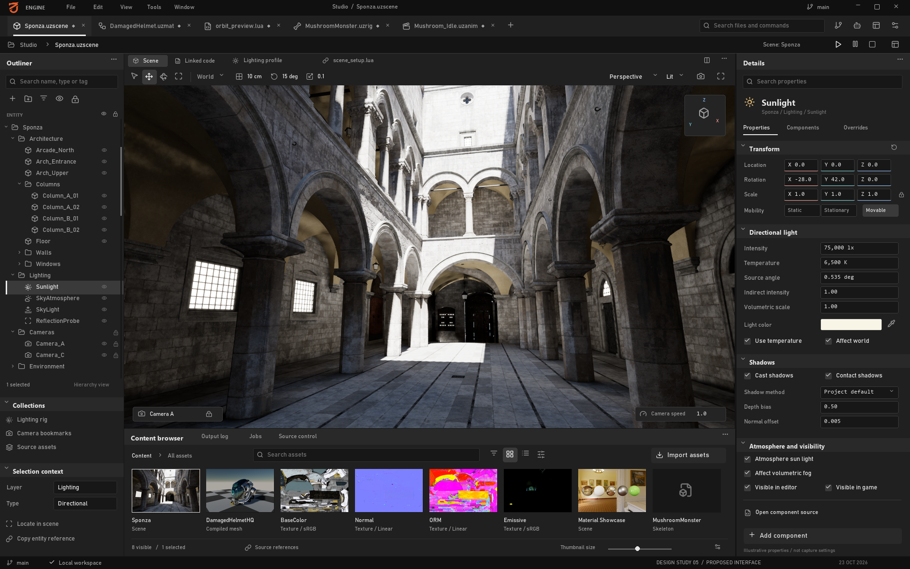
Human objective: Select scene objects, understand their properties and see the consequence of a deliberate edit without leaving spatial context.
Layout: Expanded outliner selects Sunlight; Details exposes Transform, Directional light, Shadows and Atmosphere/visibility sections beside the captured scene. Property values are illustrative, not capture settings. No fabricated object-transform gizmo is composited onto the scene; camera/orientation controls are proposed chrome. The bottom content browser shows scene, mesh, texture and buffer sources with search and view controls.
Happy path: Open a scene, select an object in hierarchy or viewport, inspect the same selection, change a numeric property or manipulate its gizmo, commit one undoable edit, then save. Open the selected object's script or material through a typed reference, preserving scene selection for return. Play mode must visibly distinguish runtime changes from authoring changes.
Errors and recovery: Missing assets produce identifiable unresolved references, not silent replacement. A stale/deleted entity invalidates selection cleanly. Failed scene save preserves dirty state. Failed load must preserve the last usable document where the loader contract supports it; unsupported hierarchy roundtrip must be disclosed before claiming safe save. Device failure offers diagnostics and document recovery separately from scene success.
Reuse and missing work: Reuse runtime rendering, selection/input, component properties, current scene loading and native editor primitives. Add editable hierarchy workflows, coherent inspector adapters, document revisions, transaction/undo integration and tested hierarchy persistence. Current save flattening identified in chapter 02 must not be hidden by an expandable tree UI.
Acceptance: Select the same entity through both surfaces; undo a drag as one operation; save/reopen a representative hierarchy without unintended loss; switch to Code and back with selection intact; verify physical-pixel picking after monitor/DPI changes. Measure frame and input latency under inspector edits rather than infer responsiveness from the image.
Screen 02: Code workspace
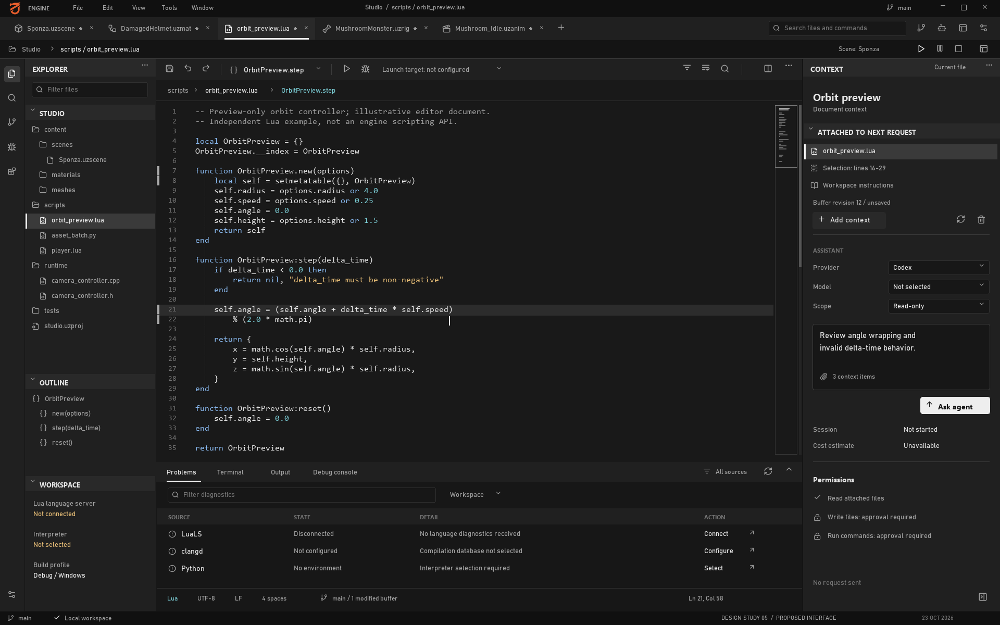
Human objective: Edit the code relevant to an object or task while retaining project, build and runtime context.
Layout: A dominant code editor with compact file/symbol navigation, document tabs, contextual information and Problems/Output/Terminal tools. Agent context remains subordinate to reading and editing code. Lua, Python and C++ communicate intended language coverage; the image does not demonstrate language servers or a native IDE. The code remains a web library embedded in the native shell.
The document is orbit_preview.lua: a standalone OrbitPreview Lua example with constructor, step and reset methods, not an engine API demonstration. Explorer, outline, line numbers, minimap and buffer revision are proposed editor surfaces. LuaLS is disconnected, clangd is unconfigured, Python lacks an environment, and the agent request has not started; these states avoid implying working language services or a provider session.
Happy path: Open a script from scene selection, edit, receive version-matched diagnostics, save through DocumentService and invoke a supported run/reload action. For C++, choose the actual build target, build and launch with matching symbols. For Python, choose interpreter/venv, run a tool and review outputs. For Lua, use LuaJIT-compatible completion and explicit runtime diagnostics/reload semantics.
Errors and recovery: Conflicting external/agent edits open comparison rather than overwrite an unsaved buffer. Missing compiler database, interpreter or language server is an actionable environment state. Build failure does not mark a target runnable as if rebuilt. Unsupported Lua debugger/reload operations remain unavailable. Browser restart restores accepted/checkpointed edits within the documented recovery window.
Reuse and missing work: Retain the existing VSCode companion and runtime Lua APIs. Add the embedded host, document authority, clangd/Pyright/LuaLS supervisors, generated Lua API metadata and independent DAP integrations. Debugging the editor process itself uses an external debugger when stopping its threads would freeze the embedded UI. C++ hot reload is not implied by a DLL target.
Acceptance: Verify completion against real environments, build/debug each supported target type, preserve dirty documents across workspace changes, test IME and shortcuts without moving the scene camera, and resolve a real concurrent-edit conflict. A separate debug target must pause while the editor remains responsive. Chapter 05 defines detailed recovery and language-service gates.
Screen 03: Agent review
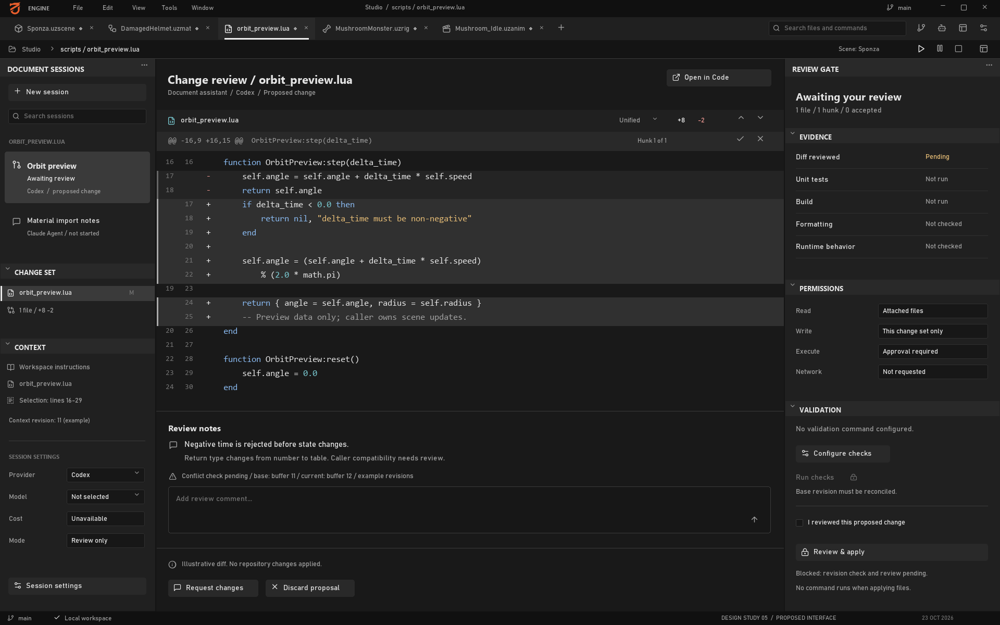
Human objective: Understand what an agent proposes, which resources it may touch and what evidence supports applying its output.
Layout: Sessions on the left, file/asset changes and validation in the center, permissions/scope on the right. Keep conversation available but do not make prose the only representation of actions. The illustrated diff and session names are fictional; no Claude or Codex task was run to produce them. Not run and Not checked remain distinct from failed and passed validation.
Revision 5 reviews an illustrative OrbitPreview:step change. Its return-type change requires caller compatibility review; example base/current buffer revisions differ. Apply remains blocked on revision reconciliation and human review, checks are unconfigured, and applying files does not authorize running commands. The example is a proposed diff, not a patch executed against the Code screen or repository.
Happy path: Start a scoped task with selected files/entities/assets, inspect provider-specific permissions, observe structured progress, review changed artifacts against their base revisions, run relevant checks and apply the chosen change transaction. Keep approved scope and actual effects visible. Use Codex/Claude adapters with explicit session IDs and supported protocols, as proposed in chapter 06.
Errors and recovery: A pending approval pauses the dependent action without losing unrelated progress. Provider disconnect retains the durable session record. Cancel/interrupt requests report their actual outcome. A changed target revision triggers conflict review. Failed tests stay attached to the proposed patch. Rejecting a proposal preserves human edits; it is not an instruction to reset the entire worktree.
Reuse and missing work: Reuse documentation MCP retrieval and existing project engineering rules as inputs. Add actual product-side session adapters, permission handling, scope tracking, artifact/diff viewers, version checks and durable recovery. Developer-assistant tools installed on this machine are not evidence that users receive these capabilities in UzEngine.
Acceptance: Inspect and apply a narrowly scoped change; reject another without touching unrelated edits; recover a disconnected session; resolve a worktree conflict; verify that displayed test outcomes refer to the reviewed revision. Audit events must distinguish permission approval, patch application and remote publication.
Screen 04: Asset Lab
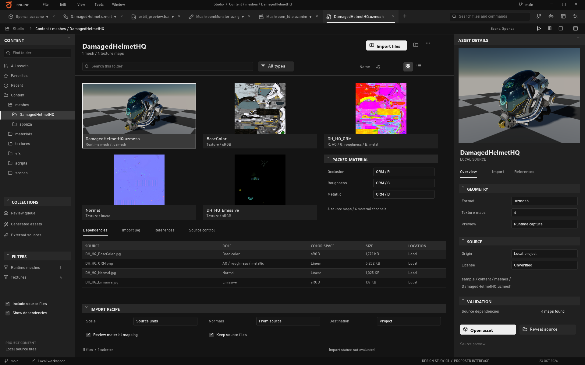
Human objective: Decide whether an asset is suitable, trace its source and dependencies, and import or update it without breaking existing references.
Layout: Library grid, selected DamagedHelmet runtime preview and actual source-map dependencies beside proposed import controls. This is a static UI around real sample imagery, not a completed import workflow.
Dependencies identify DamagedHelmetHQ.uzmesh and actual BaseColor, Normal, ORM and Emissive maps. Import recipes and validation controls remain proposed; source presence does not establish import acceptance.
Happy path: Select an asset, inspect geometry/material metadata, review source rights and dependencies, choose an import recipe, validate/stage outputs, compare against the approved version and publish when checks succeed. Scene insertion uses a stable asset reference, not the currently selected temporary file path.
Errors and recovery: Missing textures, unsupported multi-object content, import failure or unresolved rights remain visible. A failed candidate preserves the approved asset. Changed recipe/dependencies invalidate the correct outputs. Disk or manifest publication errors fail the job instead of showing successful import merely because one mesh exists.
Reuse and missing work: Reuse glTF/FBX/texture importers, sidecars, compiled formats and VFS. Add asset catalog/version identity, provenance, dependency inspection, transactional publication and scalable native browsing. Chapter 06 records first-mesh importer limitations and cook/cache errors that need resolution before broad production claims.
Acceptance: Import mixed assets, compare clean/cached results, change settings and verify invalidation, interrupt publication and recover the prior version, then locate the same asset from a scene reference. Test large libraries and thumbnail jobs without starving the viewport.
Screen 05: Model generation
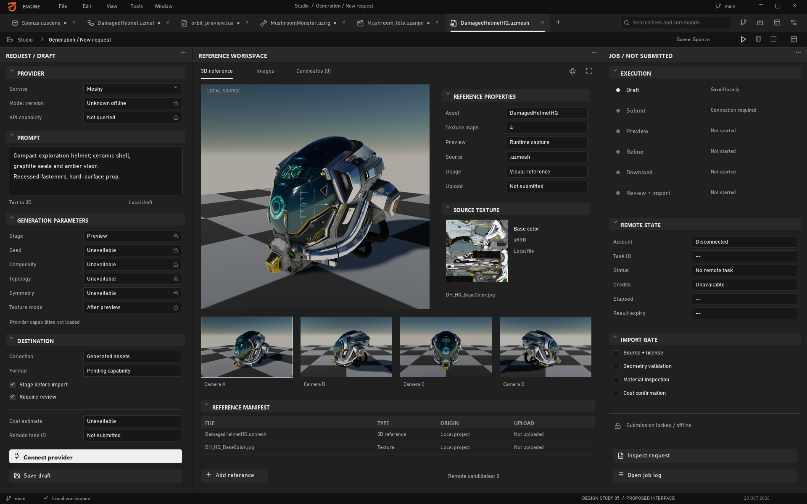
Human objective: Turn a request into reviewable candidates while controlling cost, source rights and publication.
Layout: Offline request, four runtime camera views of the same DamagedHelmet reference, and an unsubmitted job. Zero remote candidates, unavailable capabilities/cost and no upload distinguish reference inspection from generation.
Happy path: Choose an available provider/model, supply permitted references, review supported options and cost information, approve submission, persist the remote task, download completed artifacts, approve shape before refinement where supported, validate locally and stage into Asset Lab. Publication is a separate decision from generation completion.
Errors and recovery: Preserve the durable task after timeout or editor restart; reconcile uncertain submission before retrying paid work. Handle quota, authentication, provider failure and expired URLs distinctly. Download results within provider retention limits. Stopping local observation does not cancel remote generation; expose remote cancellation/deletion only when the provider state and API support it. Meshy's in-progress deletion limitation is documented in chapter 06.
Reuse and missing work: Reuse downstream import formats and validation primitives. Add provider adapters, capability catalogs, credential storage, durable submission/reconciliation, download validation, provenance and review UI. External model-generation tools mentioned by the owner need their own source/API audit before claiming integration.
Acceptance: Recover a submitted task after restart without duplicate billing, distinguish local/remote cancellation, detect malformed downloads, show supported parameters per model and move one approved artifact into Asset Lab with intact provenance. Unavailable cost must remain unknown, not display a fabricated zero.
Screen 06: Paint roundtrip
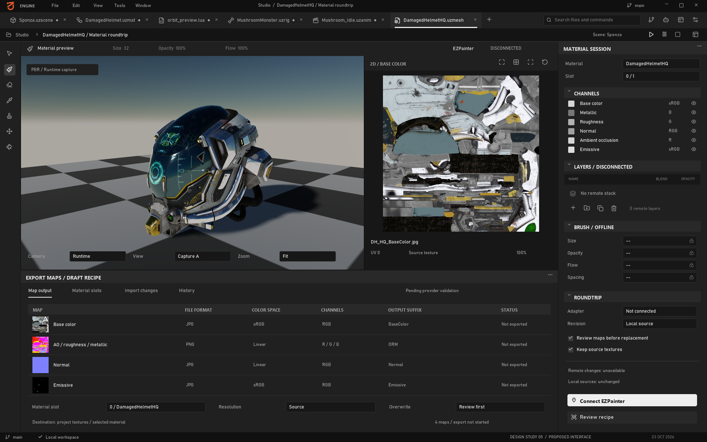
Human objective: Refine an asset's materials in the appropriate painting tool and bring back a verified version with correct channel interpretation.
Layout: DamagedHelmet runtime image and actual source textures beside a draft export recipe. Remote layers and brush settings remain disconnected; no painting, UV editing or export was performed.
The map recipe uses BaseColor, Normal, ORM (R=occlusion, G=roughness, B=metallic) and Emissive. Sample emissive setting is 5. Existing runtime imagery was not produced by this draft recipe or an external painting session.
Happy path: Select a specific approved asset/version, send a roundtrip package to an audited EZPainter/Blender/Substance adapter, edit in the supported external tool, export using the agreed PBR preset, validate returned textures and preview the candidate before publication. Preserve the editable DCC source with the returned version.
Errors and recovery: Tool absence or adapter mismatch offers an explicit manual export/import path where supported. Partial export remains incomplete. Wrong normal convention, color space, channel packing, material-slot identity or source version blocks automatic replacement. A concurrent asset change requests comparison. Cancelling local import does not imply the external painting document was closed or discarded.
Reuse and missing work: Reuse texture import, material/resource handling and mesh interchange. Audit EZPainter's actual layers, APIs and export support; add versioned DCC adapters, readiness detection, explicit completion status and artifact validation. The proposed native shell does not require embedding another application's entire window as its first integration.
Acceptance: Complete one real edit/export/return with matching asset ID and source version, verify normal/channel/color-space correctness in-engine, preserve prior approved content after a failed export, and reopen the editable source. Do not count a changed preview image as proof that the full roundtrip succeeded.
Screen 07: VFX workspace
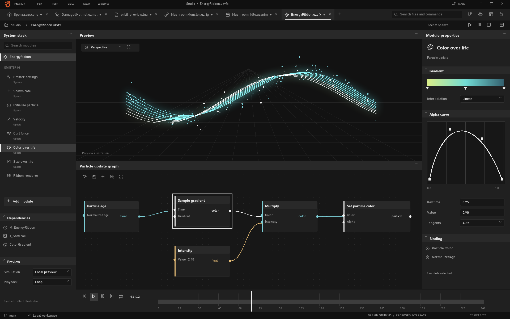
Human objective: Understand an effect's behavior, edit a parameter or curve, preview its consequence and save reproducible authoring data.
Layout: Emitter/module stack on the left, effect preview in the center, selected curve on the right and graph/timeline region below. The synthetic particle illustration and graph values communicate composition only. A visible timeline does not establish an enabled existing timeline workflow; current composition defaults are documented in chapter 03.
Happy path: Open an effect, select an emitter/module, change a parameter or curve with one meaningful undo transaction, preview the supported simulation, inspect diagnostics and save/reopen the effect. Selection must remain synchronized between stack, graph and inspector without creating multiple conflicting documents.
Errors and recovery: Unsupported nodes/modules expose capability limits. Invalid graph/compile state preserves the last valid asset while showing actionable errors. Missing assets remain traceable. Undo/redo must not leave graph selection referencing destroyed objects. Preview reset and simulation pause must be explicit; deterministic replay is a capability to verify, not assume.
Reuse and missing work: Retain the substantial VfxEditorOverlay, curve/graph/parameter widgets, save pipeline and scoped undo. Integrate those models into shared documents/selection and a reviewed shell adapter. Do not replace them with the less complete declarative Slate prototype merely because it has a similar layout.
Acceptance: Roundtrip an actual effect, edit/undo/redo graph and curve operations, switch workspaces and restore selection, report a real compile failure and recover the prior valid state. Measure preview under normal authoring load. Every advertised module needs its own functional evidence beyond this illustration.
Screen 08: Diagnostics and jobs
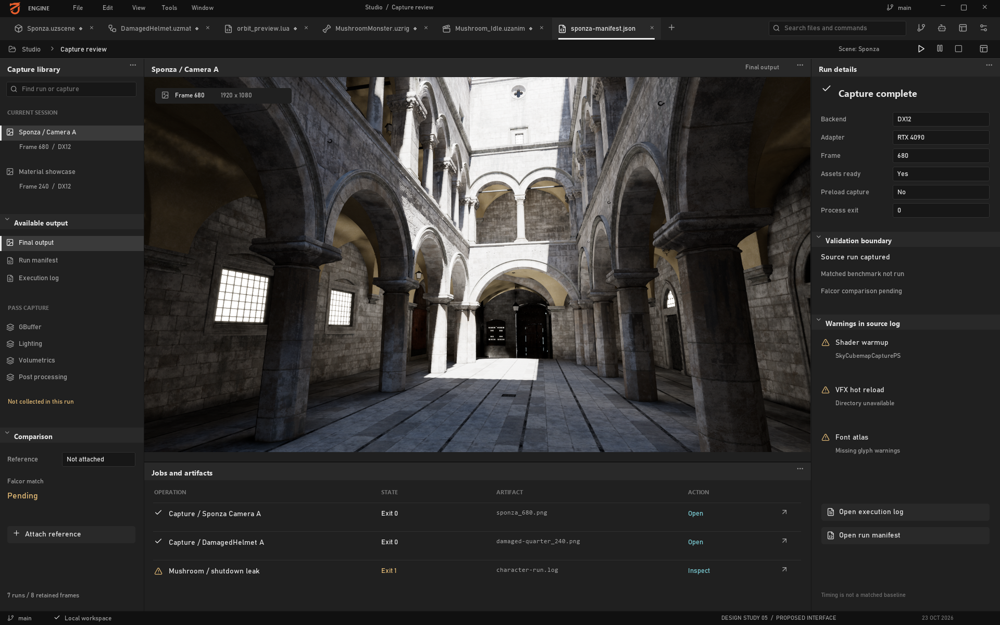
Human objective: Diagnose rendering or pipeline failures, understand long-running work and act on evidence without losing authoring context.
Layout: Capture navigation, sample runtime images, run evidence and proposed jobs. Character shutdown failed with three D3D12MA allocations totaling 6,881,280 bytes; no engine fix was made. Manifest timing samples are not matched editor benchmarks. See image provenance for individual run outcomes.
Happy path: Record a diagnostic run with exact build/scene/settings, inspect available pass outputs, correlate timestamps and errors, then open the associated entity/asset/job. Schedule long imports or reference checks within resource budgets. Resume or retry only a failed stage whose contract supports it.
Errors and recovery: Missing capture data does not become zero timing. Unsupported counters remain unavailable. Device loss preserves diagnostic metadata and documents where possible. A failed package write fails the job even if preceding imports completed. Cancelling a job reports whether subprocess/provider work actually stopped and which outputs remain staged.
Reuse and missing work: Reuse runtime diagnostic/capture facilities, logging, profiling and import tools. Add durable run/job records, truthful aggregation, provenance links, resource budgets and UI adapters. A successful screenshot run alone does not demonstrate an integrated pass browser or complete performance dashboard.
Acceptance: Navigate a real pass dump with correct labels, correlate a failed import to its source and error, restart with durable jobs intact, and measure concurrent work without unbounded UI queues. Compare matched renderer output to Falcor using the project's PSNR acceptance policy; never label an unmatched screenshot as a passing reference comparison.
Screen 09: Material Graph
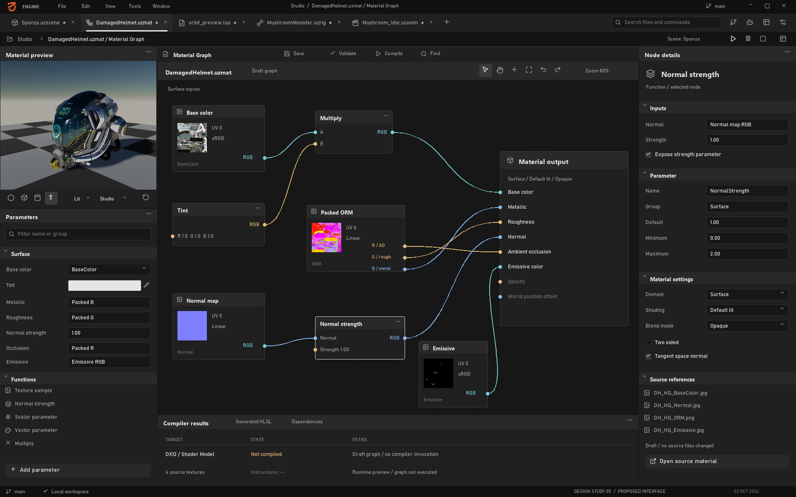
Human objective: Understand how material inputs produce a surface, edit a connection or parameter and inspect a validated result before applying it to an asset.
Layout: A graph-centered document editor combines a searchable node/parameter surface, selected-node properties, mesh/material preview and compilation diagnostics. The preview uses the same local helmet and source textures as Assets/Paint. Graph connections and exposed values are illustrative; the graph was not compiled and the preview does not show its evaluated output. The neutral gray/black shell follows revision 5.
Happy path: Open a specific material asset/version from a scene or Asset Lab, inspect its dependencies, edit a typed input or parameter, validate the graph, compile for a selected supported domain/target, inspect diagnostics and compare the compiled preview before saving/applying. Group a drag or parameter gesture into one undo transaction. Preserve the selected asset and slot when returning to the scene.
Errors and recovery: Reject invalid pin types and unsupported connections without damaging the graph. Cycles, missing textures, unavailable nodes and compiler errors must identify the offending node/input. Cancel or supersede stale compile requests; an older result must not replace a newer document. Keep the last successful compiled material available, clearly labeled as stale when edits have not compiled. Failed publication leaves the approved material intact and the document dirty.
Contract: Persist graph/node/pin identities, material asset and slot IDs, document revision, dependency versions, domain and compile target. A compile result carries the exact input revision and diagnostics; renderer installation occurs on its owner thread at a valid resource boundary. Distinguish graph save, successful shader compilation and runtime application. Texture roles/color spaces must agree with the import recipe; the screenshot is not a supported-node catalog.
Reuse and missing work: Reuse material graph persistence, expression translation and compilation/pipeline infrastructure listed in chapter 02. Add a supported node/domain matrix, human graph interactions, accessible list/property alternatives, document transactions and a revision-safe compile/preview adapter. This request adds a static design, not that implementation.
Acceptance: Save/reopen an actual graph with stable links, reject an invalid connection, locate a real compiler error, recover the last valid preview, and prevent out-of-order compile results from applying. Verify material slots, texture channels and scene references after publication. Measure compile responsiveness and preview cost independently; no measured result is supplied here.
Screen 10: Control Rig
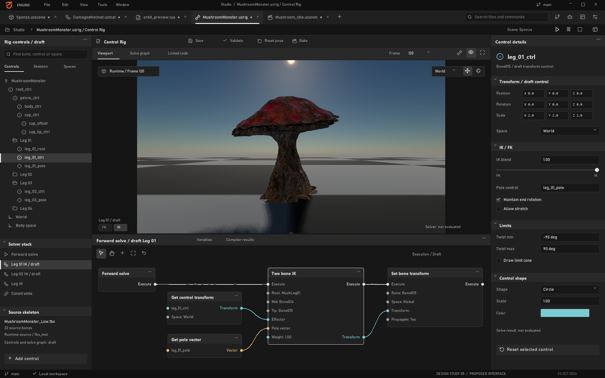
Human objective: Define and inspect a character's controllable structure, relationships and constraints before using the rig to author motion.
Layout: Character runtime preview and skeleton/control tools for the draft MushroomMonster.uzrig document. The sample has 22 bones. Rig graph, IK/FK controls and solver settings are proposals, not evaluated rig output; the runtime capture does not certify them.
Happy path: Bind a rig document to a specific skeleton/version, inspect bone hierarchy and rest transforms, create a control with an explicit space, assign limits/constraints and validate dependencies. Evaluate only supported solvers in a separate preview state, compare against rest pose, then save the rig and hand it to Animation Editor through stable identities. Pose edits must not silently modify the skeleton's bind/rest data.
Errors and recovery: Detect missing or renamed bones, incompatible skeleton versions, dependency cycles, invalid transforms and unsupported solver types. An unreachable target or singular configuration requires a defined result and diagnostic instead of corrupted transforms. Failed evaluation preserves the last valid preview; reset restores the documented rest/reference pose. Reimport that changes hierarchy must request remapping rather than bind controls by stale array indices.
Contract: Separate skeleton/bind data, rig definition, control values and evaluated pose. Record bone/control IDs, parent relationships, local/world/control spaces, unit and axis conventions, evaluation order and solver capabilities. IK/FK switching needs an explicit pose-matching policy; constraints need limits and failure semantics. Rig undo changes authoring data, while preview evaluation must remain reproducible and isolated from the live scene until applied.
Reuse and missing work: Reuse skeleton formats, pose data, animation evaluation and skinning foundations described in chapter 02. A general Control Rig graph, control authoring, IK/FK solvers, constraints, retargeting and baking are separate capabilities requiring source reconciliation and implementation/acceptance; the presence of a sample skeleton does not establish any of them. No such native feature was added for this image.
Acceptance: Roundtrip a rig against a real skeleton, preserve rest/bind transforms, verify coordinate conversion and identity after reimport, and test each implemented solver with reachable, unreachable and singular targets. Validate IK/FK matching and undo only when those capabilities exist. Test picking and hierarchy access at multiple DPI scales, and profile the actual mesh/rig workload before choosing preview LOD policy.
Screen 11: Animation Editor
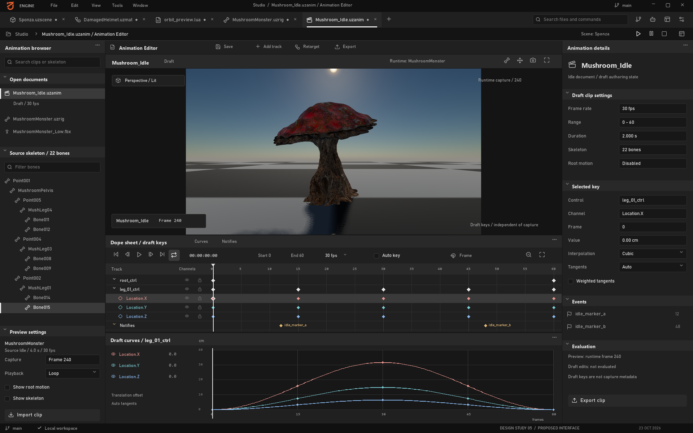
Human objective: Inspect timing, pose changes and interpolation, author a clip against a known skeleton, and verify the saved result before runtime use.
Layout: The draft UI document Mushroom_Idle.uzanim references the real four-second, 30-fps source animations/AS_Mushroom_Idle.uzanim, played through runtime controller alias Mushroom_Idle. Its runtime preview appears beside proposed tracks and curves. Displayed keys/markers are not extracted from the clip. Runtime capture frames 120/240 are not asserted to be clip key indices. No authoring or baking acceptance is claimed.
Happy path: Create/open a clip with an explicit skeleton/version and time basis, select a bone or supported rig control, author keys, inspect interpolation and scrub the evaluated pose. Compare edited and saved versions, validate duration/channel compatibility, then save/publish the clip. Baking a rig into skeletal tracks is a separate supported operation with explicit sampling and error tolerance, not an implied side effect of Save.
Errors and recovery: Skeleton mismatch, unsupported channels, missing source clips or invalid time ranges block the affected operation. Preserve dirty keys and recoverable history after failure. Do not report playing when evaluation is unavailable. Handle out-of-range times, duplicate-time keys, zero-duration clips and changed sampling rates explicitly. Source reimport must not overwrite authored tracks without a revision-aware review.
Contract: Persist clip ID/revision, skeleton identity, channel targets, time units/frame-rate convention, duration, interpolation and key values. Define quaternion rotation continuity and normalization, looping boundaries and whether root motion is retained in the root track or extracted. Preview pose, runtime controller state and source bind pose remain separate. Event markers, additive layers, retargeting and rig baking appear as capabilities only after their own contracts and tests exist.
Reuse and missing work: Reuse skeleton/clip formats, sampling, controller/crossfade and GPU skinning foundations from chapter 02. Add the document/timeline/curve authoring model, key transactions, versioned preview evaluation, validation and publication adapters. Control Rig integration depends on actual rig evaluation; a static timeline cannot certify that dependency or complete animation-tool parity.
Acceptance: Save/reopen a real clip, evaluate known keys and interpolated times, test rotation/loop boundaries and verify skeleton identity. Undo grouped key moves, recover unsaved edits, detect incompatible reimport and confirm runtime playback of the published artifact. Separately test baking, root motion and events when implemented. Runtime preview does not establish authoring, baking or motion acceptance.
Secondary screens without additional mockups
| Surface |
Human purpose |
Required design boundary |
| Project/setup |
Open/create project, resolve engine/toolchain versions and missing dependencies |
Explicit project root, build profile, interpreter and recoverable validation errors |
| Build/publish |
Choose target, validate content, inspect packaging/provenance failures and produce artifacts |
Real exit codes, reproducible inputs and dependency closure; publish distinct from build |
| Settings/connections |
Configure shortcuts, themes, accessibility, providers and DCC adapters |
Secret references rather than plaintext credentials; capability/readiness checks |
| Recovery/conflicts |
Restore documents, resolve disk/agent changes and inspect interrupted publication |
Show base/current/proposed revisions and preserve unselected human work |
These are secondary requirements, not additional delivered screenshots. Prioritize the first coherent Scene-to-Code-to-Review workflow, then Asset-to-Generation/Paint-to-Publish, while retaining VFX authoring investment. The execution plan must reconcile this sequence with current stabilization priorities rather than treating every mockup as an immediately implementable feature.
Human acceptance study
Recruit representative engine programmers, technical artists and content artists for task-based sessions. Ask them to perform concrete work without narrator guidance: locate and edit a selected object's script, diagnose a failed import, review an agent patch, recover a dirty document and roundtrip a material. Record success, errors, time, recovery steps and misunderstood states; avoid relying only on aesthetic preference ratings.
Run keyboard-only and assistive-technology sessions, mixed-DPI monitors, narrow windows, large scene/asset lists and concurrent background work. Test actual native/web/GPU boundaries after implementation. No measured task completion, usability score, accessibility certification or performance result is claimed by this report.
Source: 07-human-workflows-and-screens.md
08. Consolidated gap register
Date: 2026-10-22. This register translates the inspected engine/editor/integration evidence into actionable delivery scopes. It does not create tasks, change native task status, alter the priority queue or authorize feature implementation. The requested deliverable is analysis.
Read with engine inventory, editor/performance and agents/assets. Those chapters contain the detailed source evidence and limitations behind each area.
Scope and prioritization
The current objective remains stabilize the Windows renderer and editor before expanding engine features, as stated in .rulebook/PRIORITIES.md:5 and .rulebook/task-priorities.json:4. Priorities below are recommendations for this proposed editor program; they do not supersede the generated execution queue. Existing owner IDs refer to current task directories. A shared owner means residual scope must be reconciled, not that the whole original task should be rerun.
| Label |
Meaning in this register |
| P0 |
Establish reliable state, outputs or evidence before dependent editor work |
| P1 |
Required for a trustworthy, responsive Windows native editor workflow |
| P2 |
Complete and improve reusable authoring paths after the core workflow is accepted |
| P3 |
Broader engine/product expansion; not a prerequisite for a useful native editor |
| Absent |
Product implementation not located in the audited source scope |
| Partial |
Concrete implementation exists; the stated residual contract remains incomplete |
| Reconcile |
Current source overlaps older tasks; first establish what remains |
| Validation |
Required current hardware, workflow or regression evidence is missing or not rerun |
| Defect candidate |
Concrete source discrepancy identified; reproduce before fixing |
| External unknown |
Named external project was not audited; maturity cannot be inferred |
Effort is relative to one bounded work package: S localized change/evidence, M one service or focused workflow, L multiple contracts/workflows, XL substantial subsystem/program requiring decomposition. These are uncertainty-aware sizing labels, not calendar or staffing estimates. A large item must be split into concrete acceptance units before implementation.
New in the owner column means exactly new proposed scope, not created. Dependencies reference gap IDs, not a claim that the corresponding implementation is missing. Existing implementations can satisfy a dependency once their relevant acceptance is verified.
Closed work must not be reopened from stale priorities
The stabilization checklist and 2026-10-17 closure are newer and more precise than several queue labels. Preserve these accepted corrections:
- Entity generations are keyed by slot, with recycled-handle regressions:
.rulebook/tasks/phase0_project-stabilization-audit/tasks.md:9.
- Owner-routed mutations, bounded command lifetimes, safe shutdown sequencing, input/stream backpressure and recovery already exist: checklist items 2.2 and 2.5; chapter 03 details the current mechanisms.
- Malformed/top-level-invalid scene input preserves the previous world and CVars: checklist item 2.3;
runtime/tests/engine/ecs/test_scene_loader.cpp:109.
- Self-parenting/ancestor-cycle rejection is already at the shared hierarchy boundary:
runtime/engine/ecs/scene/scene_component.cpp:98; checklist item 2.4. Hierarchy persistence is a separate residual gap.
- Temporal state tracking, unavailable-upscaler handling, stage-1 motion data and real material context were implemented with scoped acceptance: checklist items 3.2-3.5. Their remaining GPU/WPO/SDK evidence is not evidence that the corrections are absent.
- Render-graph UAV ordering/transient reuse and layout gates have fresh historical closure evidence:
docs/analysis/project-stabilization/16-audit-closure-2026-10-17.md:23.
- Documentation of inactive post effects is complete; implementing those effects is different work. Instancing item 5.1 closes only dead-work gating/characterization; enabling/correctness and timing remain separate stages.
No row below asks to recreate these fixes. A checked box can still contain an explicit scope boundary; an unchecked older task can contain implementation already delivered elsewhere.
A. Reliable execution, presentation and data foundations
| Gap |
Priority / state / size |
Owner and dependencies |
Concrete acceptance |
Evidence |
| G-001 Current acceptance and residual ownership |
P0 / Reconcile / M |
phase0_project-stabilization-audit, items 4.1, 5.1, 5.3, 6.3; no prerequisite |
Produce current revision/build manifest, identify every remaining scoped acceptance, retain actual failed/skipped cases and map each residual to one owner. Do not claim native suite all-green from historical no-regression acceptance |
Closure 2026-10-17; current checklist items above |
| G-002 Matched host-performance baseline |
P0 / Validation / M |
New; G-001 |
Same release build/scene/camera/CVars/resolution/driver across standalone, VSCode stream and direct-native prototype; capture frame/input IDs, CPU/GPU p50/p95/p99, input-to-present, memory and idle behavior. Publish raw traces and configuration |
Chapter 03 performance matrix; extension/src/tests/viewport-streaming-test.ts:9 is only a manual helper |
| G-003 Typed clean/incremental cook equivalence |
P0 / Defect candidate / M |
New; G-001 |
Reproduce cached non-shader misclassification, preserve importer output types and companions, then compare clean versus warm mixed-asset manifests and runtime resolution with negative controls |
runtime/tools/uzcook.cpp:469, :475; chapter 06 |
| G-004 Packaging failure propagation |
P0 / Defect candidate / S |
New; G-003 |
Inject pack and manifest write failures; CLI returns failure, UI job stays failed, prior usable output remains identifiable and error identifies failed publication step |
runtime/tools/uzcook.cpp:683, :690, :694 |
| G-005 Import recipe invalidation and atomic metadata |
P1 / Partial / M |
New; G-003, G-004 |
Changing options/dependency content invalidates correct outputs; interrupted sidecar write preserves last valid metadata; recipe/version/dependency hashes participate in staleness tests |
runtime/engine/asset/import_sidecar.cpp:113, :142; runtime/platform/windows/file_system.cpp:407 |
| G-006 Editor session and asynchronous command contract |
P0 / Partial / L |
New, reusing stabilized owner queue; G-001 |
UI reads revisioned snapshots and submits bounded/coalesced commands; timeout, cancellation, Busy and shutdown behavior are explicit; no caller-stack lifetime escapes or UI waits on long owner operations |
runtime/engine/app/owner_command_queue.h:18, :35, :44; runtime/engine/app/runtime.h:6 |
| G-007 Direct local viewport presentation |
P1 / Partial / L |
New; G-002, G-006 |
Normal local editing renders to a host-owned target without viewport CPU readback or H.264 encode/decode; capture remains explicit; same scene passes resize/minimize/device-lost/input tests and measured budget |
runtime/engine/app/runtime.cpp:340, :724, :1410; chapter 03 |
G-002's measurement protocol and standalone/current-host baseline precede choosing a toolkit on performance grounds. Candidate-host measurements complete alongside the G-007 prototype; that prototype is not blocked on its own final benchmark result. Direct presentation removes known transport stages, but this report does not claim a measured speedup or universal zero-copy. G-006 extends a working ownership mechanism; it does not assert the old race remains unfixed.
B. Native editor shell and human editing contracts
| Gap |
Priority / state / size |
Owner and dependencies |
Concrete acceptance |
Evidence |
| G-008 Desktop shell, documents and docking |
P1 / Absent / L |
New; G-006, G-007 |
Open/save/close multiple documents, dirty prompts, persisted layouts, keyboard navigation, DPI/monitor transitions and one explicit viewport/Present owner work together. Additional viewports have independent resource/history policy |
Existing C API rejects a second viewport at runtime/engine/app/runtime.cpp:312; chapter 02 |
| G-009 General UI text, clipping and accessibility |
P1 / Partial / L |
New; G-008 |
Adopt toolkit guarantees or complete native primitives: Unicode selection, clipboard/IME, screen-reader semantics, contrast/focus, exact nested clipping and virtualized large lists pass human and automated acceptance |
runtime/engine/ui/slate_editable_text.h:3; slate_renderer.cpp:83; chapter 03 |
| G-010 Focus and input recovery under overload |
P1 / Validation / M |
New, preserving current bounded input paths; G-006, G-007 |
Key/button release, pointer capture, focus loss, modal dialogs and queue overflow cannot leave stuck input; add state reconciliation and stress actual panel/viewport routing |
extension/src/runtime-client.ts:600; napi/src/render_thread.h:95; chapter 03 |
| G-011 Scene hierarchy and identity round-trip |
P1 / Partial / L |
phase3b-3.4b-scene-loader after scope reconciliation; G-006 |
Reparent/save/reopen preserves hierarchy, local/world transforms and references; reuse existing cycle rejection; prefab instances retain explicit identity and unsupported relationships fail visibly |
runtime/engine/ecs/loaders/scene_loader.cpp:1106, :1435, :1452; scene_component.cpp:98 |
| G-012 Shared editing transactions and save points |
P1 / Partial / L |
New; G-006, G-011 |
Human edits and agent actions use validation, atomic application, grouped undo/redo, dirty/save points and conflict detection; multi-selection edits restore exact prior values |
VFX-specific stack at runtime/engine/vfx/editor/undo/vfx_undo_stack.h:38; partial property deserialization contract at property_serializer.h:68 |
| G-013 Edit/play isolation and crash recovery |
P1 / Partial / L |
New, reconciled with phase6-6.0.0-game-dll-abi; G-008, G-012 |
Enter/stop play cannot silently overwrite authoring state; unsaved documents recover after forced shutdown; runtime restart preserves editor documents, selection identity and actionable diagnostics |
Editor script gate at runtime/engine/scripting/script_system.cpp:295; current lifecycle in chapters 02/03 |
| G-014 Asset catalog, dependencies and stable IDs |
P1 / Partial / L |
New; G-005, G-012 |
Search/filter large catalog; rename/move/reimport preserve references; show dependency graph and typed outputs; variants/source versions have durable identities and missing dependencies remain visible |
runtime/engine/asset/importers/asset_registry.h:29 is importer registry; .uzimport fields at import_sidecar.h:56 |
| G-015 Multi-object/material/UV import scope |
P2 / Partial / L |
phase5-5.1.0-multi-material-multi-uv; G-005, G-014 |
Reconcile existing submesh support; validate representative multi-primitive/material/UV assets; explicitly support or reject extra meshes/hierarchy instead of silently presenting first mesh as complete scene |
runtime/engine/asset/importers/mesh_importer.cpp:383, :431; fbx_importer.cpp:1242 |
| G-016 Shared background work budgets |
P1 / Partial / M |
New; G-002, G-006, G-014 |
Import/index/bake/thumbnail/build jobs expose progress and cancellation; worker and GPU-upload budgets preserve selected viewport/input targets under representative concurrent load |
runtime/engine/renderer/upload/async_mesh_loader.h:3; scene/scene_renderer.h:755; existing job pool |
The shell can begin with one primary viewport and existing VFX tools. Arbitrary floating preview windows are a later acceptance unit inside G-008, not permission to share temporal/GPU state unsafely. Scene relationships already exist at runtime; G-011 concerns durable authoring and serialization.
| Gap |
Priority / state / size |
Owner and dependencies |
Concrete acceptance |
Evidence |
| G-017 Embedded code editor host |
P1 / Absent / M |
New; G-008, G-009 |
Monaco or equivalent opens real project files, preserves unsaved buffers, supports navigation/find/diff, respects theme/DPI/focus and survives webview recreation without blocking render |
Chapter 02 distinguishes Slate input from IDE; chapter 06 product integration search |
| G-018 Python/C++/Lua language services |
P1 / Absent / L |
New; G-017 |
Real language-server lifecycle/configuration provides diagnostics, completion, symbol navigation and rename for all three languages; C++ uses actual compilation commands and Python selected environment |
Lua execution exists at runtime/engine/scripting/lua_vm.cpp:139; language tooling is separate |
| G-019 Build, terminal and debugger workflows |
P2 / Partial / L |
New; G-016, G-018 |
Choose targets/environment; run/cancel builds and Python tasks; navigate compiler errors; real debugger adapters support breakpoints/variables/stack; preserve process ownership on close/restart. Do not promise C++ hot reload without ABI/state acceptance |
runtime/build.zig:58; scripts directory and Lua runtime; chapter 06 |
| G-020 Claude/Codex session adapters |
P1 / Absent / L |
New; G-016, G-017 |
Actual provider/CLI-supported adapter supports session creation, streaming structured events, resume, cancellation, usage and errors; terminal decoration is not the protocol; credentials never enter project files/logs |
Product adapter not located in inspected source; chapter 06 provider documentation |
| G-021 Agent context, diff and action review |
P1 / Absent / L |
New; G-012, G-014, G-020 |
User selects files/entities/assets/context; pending permissions and exact mutations are reviewable; unsaved human edits/conflicts are protected; accepted changes record provenance and use shared transactions |
Chapter 06 proposed review service; developer hooks are not product UX |
| G-022 Durable provider job orchestration |
P1 / Absent / L |
New; G-004, G-016 |
Persist local/provider IDs and stage history; restart without duplicate paid submission; retry/backoff and supported cancellation are truthful; download/validate/import/publication are distinct states |
Chapter 06 Job/Provider/Artifact staging contracts |
| G-023 Meshy generation and variant acceptance |
P2 / Absent / M |
New; G-014, G-021, G-022 |
Versioned capability schema drives controls; show usage/limits; submit/status/download/expired-URL paths work; user compares shape variants before optional texture and accepts validated import |
docs/specs/3.0-mcp-integration.md:86, :104 is planned workflow, not client |
| G-024 EZPainter contract and product adapter |
P2 / External unknown / M |
New; audit external source before implementation, then G-014, G-022 |
Inventory actual EZPainter APIs/formats and license/deployment constraints; define supported launch/connect, asset IDs, channels, save/export and error semantics; prove one real round trip |
Chapter 06: no matching implementation found within this repository; external project uninspected |
| G-025 Blender/Substance and DCC round-trip |
P2 / Absent / L |
New; G-005, G-014, G-015, G-022 |
Edit/export/reimport returns to same asset ID; units/transforms/material channels/normal convention and dependencies are verified; unsupported edits report limits |
Importer compatibility at runtime/engine/asset/mesh/mikktspace_tangents.h:21 is not a live bridge |
| G-026 Credentials, artifacts and provenance |
P1 / Absent / M |
New; G-014, G-020, G-022 |
OS-backed secret storage, redacted logs, scoped context, artifact checksums/limits, prompt/model/source lineage and license/rights records; publication reveals unresolved provenance |
runtime/engine/asset/import_sidecar.h:56 covers import metadata, not complete generation lineage |
| G-027 Versioned editor automation surface |
P2 / Planned / L |
New, reconcile docs/specs/3.0-mcp-integration.md; G-006, G-012, G-021 |
Expose discoverable typed commands and read-only snapshots with version/error/cancellation semantics; scene mutation shares validation/undo; tool permissions match operation scope |
mcp/src/server.ts:44 through :167 registers documentation tools only |
Monaco, language servers, debug adapters and process execution are four distinct contracts. The Absent labels for G-017/G-018 concern integration into the proposed standalone host: existing VSCode installations can already supply code editing and language extensions, but those services are not automatically embedded in another application. Python automation does not require embedding Python into gameplay. A tool connected to a developer assistant is not automatically shipped to editor users. EZPainter remains external unknown until its real project is audited.
D. Existing authoring and renderer residuals
| Gap |
Priority / state / size |
Owner and dependencies |
Concrete acceptance |
Evidence |
| G-028 Preserve native VFX authoring; reconcile migration |
P1 / Reconcile / M |
New shell integration; phase16_vfx-sort-pipeline-hardware-validation retains hardware-sort owner; G-008, G-012 |
Existing overlay tabs/graphs/curves/undo/save remain functional in host; declarative prototype failures reconciled against intended design; sorting accepted only with its hardware evidence |
runtime/engine/vfx/editor/vfx_editor_overlay.h:430, :452; chapter 03 prototype distinction |
| G-029 Material authoring completion |
P2 / Reconcile / L |
phase2_material-graph-pipeline, phase3a-3.34.1-advanced-material-system; G-012, G-014 |
Preserve implemented real graph context; validate supported nodes/domains/blends; compile errors point to nodes; save/reopen/preview/undo are coherent; importer vertex-color residual has explicit fixture |
runtime/engine/material/compiler/hlsl_material_translator.h:63; stabilization item 3.5 separates importer COLOR_0 follow-up |
| G-030 Profiler and pass-inspector workspace |
P2 / Reconcile / M |
phase5-5.2.0-vscode-pass-inspector-ui, phase4_4.12.0_profiling-ipc-bridge after review; G-002, G-008 |
Frame IDs align CPU/GPU/pass views and captures; show active backend/features; captures export with provenance; collection overhead measured and disabled when not requested |
runtime/engine/profiling/profile_capture.h:95; runtime/engine/rhi/rhi_device.h:493 |
| G-031 Temporal/WPO/vendor upscaler acceptance |
P2 / Partial + Validation / L |
phase0_project-stabilization-audit items 3.2-3.4; phase1_falcor-dlss-integration; phase2_fsr2-full-integration; G-001, G-042 |
Camera cuts/toggles/resize and moving/skinned/WPO sequences prove valid history/velocity; SDK-enabled runs use actual frame/camera data; unavailable backends visibly report effective fallback |
Fixed FSR2 frame/camera values at runtime/engine/renderer/passes/postprocess/fsr2_upscaler.cpp:519, :530; current guards already implemented |
| G-032 Remaining post effects, probes and tracer limits |
P2 / Partial + Reconcile / XL |
phase3a-3.37.0-reflection-probes, phase3a-3.24.0-lens-flare, phase1_falcor-path-tracer; other inactive effects New; G-001, G-042 |
Decompose by effect; keep unsupported controls disabled/labeled; implement and validate each complete path with real fixtures; preserve current reference transforms/defaults; tracer remains diagnostic until independent acceptance |
runtime/engine/renderer/frame/frame_postprocess.cpp:32, :48; chapter 02; queue treats tracer as review |
| G-033 Instancing, culling and measured geometry scaling |
P2 / Partial / L |
phase0_project-stabilization-audit item 5.1 residual stages; phase3a-3.38.0-lod-system; G-002, G-042 |
Complete instance-ID/transform/material/shadow/velocity and overflow contracts together; compare mixed fixtures and large-draw workloads before enabling; verify LOD transitions and cost |
Checklist 5.1 explicitly accepts only disabled-path gating/characterization; no speedup accepted |
| G-034 Skeletal/animation pipeline and editor |
P2 / Reconcile / L |
phase3-3.0.0-fbx-skeletal-animation-pipeline; reconcile phase4-4.3.0-skeletal-mesh-gpu-skinning and phase4-4.3.1-animation-runtime; G-014, G-015, G-031 |
Reuse clips/state machine/crossfade/skinning; real assets round-trip; preview/timeline author supported controls; previous-pose ownership and residual animation features each receive explicit tests |
runtime/engine/animation/skeletal_mesh_subsystem.cpp:337, :570; old zero-checked tasks are not absence evidence |
The XL row is a catalog of independently selectable renderer work, not an instruction to finish every effect before shipping the shell. Existing task priorities remain authoritative: for example lens-flare expansion is P3 in the current queue even though honest capability presentation is needed earlier. A subset can be omitted from the initial product if the UI and documentation state that accurately. For G-031, the G-042 dependency means agreed fixtures/protocol and the applicable already-supported baseline; new WPO/SDK matrix cells are accepted together with their implementation, not required to pass before that implementation exists.
E. Broader gameplay and engine completion
| Gap |
Priority / state / size |
Existing owners and dependencies |
Concrete acceptance |
Evidence |
| G-035 Physics world, queries and character |
P3 / Partial interface / XL |
phase4-4.2.0-physics-jolt-core, then phase4-4.2.1-physics-queries-character; lifecycle/visual gates |
Real backend bodies/colliders/fixed-step synchronization, queries/triggers/character behavior and scene lifecycle pass; listener fan-out receives actual backend events |
runtime/engine/physics/physics_listener_registry.h:7 names future PhysicsWorld |
| G-036 Audio core and spatial authoring |
P3 / Absent engine / XL |
phase4-4.4.0-audio-core, then phase4-4.4.1-audio-3d-advanced; advanced occlusion depends on G-035 |
Import/playback/voices/buses/listener/spatial attenuation and unload behavior verified; audio-reactive VFX obtains real provider data; editor preview does not leak voices |
runtime/engine/vfx/modules/audio_spectrum_module.h:38 is provider interface; queue audio scopes |
| G-037 Enhanced gameplay input and camera modes |
P3 / Partial / L |
phase4-4.0.0-enhanced-input-system, phase4-4.1.0-camera-system; camera collision depends on G-035 |
Actions/rebinding/devices persist and resolve focus; camera modes/spring-arm collision function in play mode; editor navigation remains independently testable |
Basic platform/Lua input exists; queue separates enhanced input and camera proposals |
| G-038 Navigation and behavior authoring |
P3 / Absent / XL |
phase6-6.3.0-navigation-recast-detour, then phase6-6.4.0-behavior-trees; lifecycle/visual gates |
Bake/query/rebuild navigation; agents follow paths; behavior execution/abort/debug state and persistence are validated in representative scenes |
Current priority manifest defines these as gameplay expansion |
| G-039 Game ABI and gameplay save state |
P3 / Planned / XL |
phase6-6.0.0-game-dll-abi, phase6-6.2.0-save-system; G-006, G-011, G-013 |
Versioned ABI/lifetime/state-transfer rules and save-slot schema/load-failure behavior work across restart; do not confuse editor scene JSON with gameplay save system |
Current priority manifest; runtime/engine/ecs/loaders/scene_loader.cpp:1442 is scene serializer |
| G-040 Runtime game UI and bindings |
P3 / Partial primitives / XL |
phase6-6.1.0-ui-runtime-core, then phase6-6.1.1-ui-data-binding-events; G-037 for input |
Game UI rendering, data bindings, events, modal/passthrough input and hot reload work in packaged runtime; define relationship to existing Slate primitives instead of assuming equivalence |
runtime/engine/ui exists; queued game UI proposals describe broader contract |
| G-041 Renderer expansion and scalability policy |
P3 / Partial + Reconcile / XL |
phase3a-quality-scalability-system; individual lighting/material/volume/hair/GI owners in priority manifest; G-002, G-042 |
Presets describe validated capabilities and measured costs; select one explicit expansion at a time with source/paper and matched acceptance; no global parity percentage or blanket completion claim |
.rulebook/task-priorities.json P3 tasks; existing fog/clustered/material paths require reconciliation |
These gameplay rows are not prerequisites for editing meshes, materials, scenes and VFX in a useful native host. They are necessary only when the product promises those gameplay capabilities. Each XL area needs its own design, dependency closure and acceptance plan rather than one monolithic GUI milestone. G-041 groups a broad expansion program; its existing quality-scalability task retains P2 in the project queue, while new rendering-feature expansion retains its individual P3 priorities.
| Gap |
Priority / state / size |
Owner and dependencies |
Concrete acceptance |
Evidence |
| G-042 Matched visual and temporal reference matrix |
P1 / Validation / L |
phase0_project-stabilization-audit item 4.1; applicable implemented corrections from G-001 |
Paired Falcor/engine geometry, materials, cameras, lights, frame schedules and poses; raw metrics meet required threshold for supported matrix cells; known gaps/unavailable SDK/WPO/live-editor cases remain explicit |
Closure 2026-10-17 says item 4.1 not passed; static fitted sphere proxies insufficient |
| G-043 End-to-end human workflow and failure tests |
P1 / Validation / L |
New; minimum selected G-007..G-030 workflows |
Real user flows open/edit/save/reopen/play/import/review; test keyboard/IME/accessibility/DPI, large projects, loss of focus, crashes and interrupted jobs; retain observed latency and task completion evidence |
Chapters 02/03/06 separate unit tests from unexecuted product workflows |
| G-044 Reproducible editor packaging and release |
P1 / Absent product acceptance / L |
New, reuse existing native dependency/bootstrap work; G-001, G-004, G-026, G-043 |
Clean-machine install launches editor without development paths, required runtimes/assets bundled, licenses reviewed, errors/crashes discoverable, signed/versioned artifacts and update/recovery policy tested |
scripts/native-dependencies.lock.json; runtime/build.zig:53; historical native build is not editor distribution acceptance |
| G-045 Additional platforms and backend acceptance |
P3 / Partial + Validation / XL |
phase1_port-metal-shader-pipeline; Linux/editor backend scope New; G-043, G-044 |
Each platform runs its own native window/input/IME/docking/code host/render/test/package matrix; record feature differences and hardware acceptance; do not infer parity from source directories |
runtime/engine/rhi/rhi_factory.cpp:62, :74; current embedded C API Windows restriction at runtime/engine/app/runtime.cpp:308 |
G-042 is a renderer quality gate, not a toolkit benchmark. G-043 measures human workflows, not just function-call success. G-044 is a product-delivery gate, not a reason to redo already verified build-bootstrap corrections. G-045 follows the current Windows objective.
Minimum native editor versus complete engine
The minimum useful native editor is a bounded product: reliable project/documents, one responsive direct viewport, scene hierarchy/inspector with save and undo, asset import/catalog, reusable native VFX/material tools, embedded code editing, visible background jobs and reviewable automation. This primarily selects G-001..G-022, G-026, G-028 and the relevant validation/release rows. Specialized provider/DCC integrations can then be enabled as their actual contracts pass acceptance; they must not be simulated by static panels.
Not every row in that range must be implemented from scratch: existing services are reused, validation rows prove what already works, and reconciliation rows remove duplicate work. The first prototype should test G-002/G-006/G-007 with a small real scene before completing the surrounding shell.
A complete engine product is broader: general physics, audio, navigation, behavior authoring, game ABI/save state, runtime UI, additional rendering models and platform distribution. Those P3 programs should not block a useful native editor, and changing the GUI does not complete them automatically.
The decision criterion is therefore not whether a new interface looks like Unreal. It is whether the proposed host removes the current viewport transport cost while preserving engine investment, protects human work, makes supported capabilities explicit and passes reproducible performance/workflow acceptance.
Source: 08-gap-register.md
09. Proposed execution plan and decision gates
Date: 2026-10-22. Proposed program, not approved schedule or new Rulebook queue. Evidence follows chapters 01, 02, 03 and 06. No benchmark was executed for this plan.
Objective and boundary
Deliver a responsive Windows authoring application with existing renderer, native presentation, reliable documents, code editing and supervised agent/asset workflows. Keep VSCode usable during migration. Runtime remains in-process in the native host; language servers, agents and DCC tools have independently supervised lifetimes.
First candidate: C++/Qt Widgets, native HWND viewport and lazy WebView2/Monaco. Validate performance and compare cost with completing own Slate framework. Reuse mature VFX behavior without assuming desktop docking, text input and accessibility are complete.
First spike: one viewport, one project. Singleton-style viewport APIs and per-view histories need redesign before multi-view authoring. Four panes in a concept image do not prove four working views.
Findings register
| ID |
Finding |
Source |
Impact |
Confidence |
| F-032 |
Prove presentation benefit before replacing shell |
Chapter 03 F-009 to F-011; runtime/engine/app/runtime.cpp:741 |
Full rewrite could miss dominant delay |
High for transport; benefit unmeasured |
| F-033 |
Documents/hierarchy/assets precede reliable automation |
Chapter 02 persistence inventory; runtime/engine/ecs/loaders/scene_loader.cpp:1442; chapter 06 F-025 to F-027 |
Controls can lose hierarchy or overwrite conflicts |
High for inspected gaps; architecture proposed |
| F-034 |
Single viewport is not multi-window desktop readiness |
extension/src/panels/scene-editor-provider.ts:256; runtime/engine/ui/slate_editable_text.h:4 |
Histories, DPI, focus, IME and accessibility expand scope |
High for limits; effort uncertain |
| F-035 |
Provider/agent work needs durable recovery beyond chat |
Chapter 06 contracts/acceptance; chapter 01 evidence policy |
Ambiguous submissions can lose artifacts or duplicate paid work |
High for contracts; EZPainter unverified |
Dependency graph
flowchart TD
M0[M0 Stability and baseline] --> M1[M1 Single native viewport A/B]
M1 --> G{Presentation and shell gate}
G -->|pass| M2[M2 Documents and transactions]
G -->|fail| R[Measure and fix forward; retain VSCode]
R --> M1
M2 --> M3[M3 Assets and cook]
M2 --> M4[M4 Monaco and languages]
M3 --> M5[M5 Jobs and agents]
M4 --> M5
M5 --> M6[M6 Meshy and DCC]
M3 --> M7[M7 Pro tools and multiple views]
M4 --> M7
M6 --> M8[M8 Hardening and release]
M7 --> M8
Windows stabilization remains controlling priority. Read .rulebook/PRIORITIES.md before scheduling; reconcile later closure evidence against stale unchecked work. This graph does not override P0/P1.
Staffing and estimates
Person-weeks, not calendar commitments. Assumptions: two experienced C++/render/editor engineers, one UI/code-integration engineer, part-time QA/design; reusable Windows toolchain/renderer; one platform; focused tests/docs included. Unrelated engine completion excluded.
| Milestone |
Deliverable |
Person-weeks |
Uncertainty |
| M0 |
Reproducible baseline |
1-3 |
Existing failures |
| M1 |
Single-view native spike |
2-5 |
HWND/threads/toolchain |
| M2 |
Documents and persistence |
5-10 |
Identity/hierarchy/recovery |
| M3 |
Assets and incremental cook |
4-9 |
Dependencies/publication |
| M4 |
Monaco, LSP and debugging |
5-11 |
Environments/adapters |
| M5 |
Jobs and agent review |
5-10 |
Protocol/auth/conflicts |
| M6 |
Meshy and DCC roundtrip |
5-12 |
EZPainter/interchange |
| M7 |
Pro tools and multiple views |
7-16 |
Histories/accessibility |
| M8 |
Hardening and release |
4-9 |
Real-project failures |
Total arithmetic: 38-85 person-weeks for this bounded program, not the whole engine. Dependencies/specialist ownership prevent dividing mechanically by headcount. M0+M1 is 3-8 person-weeks of evidence investment; a spike is not a polished product. Re-estimate after M1, M3 and EZPainter audit. A new painting engine, arbitrary VSCode extensions or platform parity requires separate scope.
Milestones and exits
M0. Trustworthy baseline
Entry: current priority scope and owners identified. Produce a manifest with commit plus working-tree diff identity, compiler/Zig, build mode, SDKs, GPU/driver, CPU/RAM, OS, monitors/refresh/DPI, power profile, backend, scene hashes, camera path, cvars, assets and physical output resolution. Separate existing failures from migration regressions.
Workloads: empty scene, representative production scene, heavy VFX and material/asset-heavy scene. Run identical content in standalone and extension wherever compatible; disclose differences. Unstable scenes become stabilization inputs, not silently excluded samples.
Exit: another engineer reproduces loading, capture and interpretation. Required stability checks pass, or an explicit owning gate blocks dependent rollout. Historical task counts are not performance evidence.
M1. Single native viewport feasibility
Entry: M0 workloads. Build one host, in-process engine, explicit viewport target and one swapchain/Present owner. Disable ordinary viewport readback/encoding through explicit capability/configuration, preserving capture infrastructure. Verify absence of capture work in traces; a non-null parent HWND alone does not prove capture is disabled.
Qt uses its GUI thread. WebView2 is created/accessed on its STA thread with a message pump. Media Foundation MTA work belongs on a suitable separate thread; never change an initialized COM apartment to satisfy another subsystem. Define HWND creation/destruction and message-pump ownership. Render cadence stays independent from DOM repaint and language services.
Add lazy Monaco after baseline measurement. Validate resize, hide/show, minimize, close and focus transfer. Compare shell capability/cost with completing Slate, retaining specialized VFX overlays.
Exit: measured presentation passes proposed budgets and lifecycle checks below. If GPU work dominates, optimize measured passes without claiming shell solved them. If composition/lifecycle fails, correct that bounded issue before expanding scope.
M2. Documents and transaction ownership
Entry: M1 host stable. Add project/document identity, dirty state, save/save-as, autosave/recovery, external conflicts, durable scene identities and transactional commands. Human controls and agents share a validated mutation boundary. Edit and play states remain distinct.
Reconcile scene save flattening. Exercise nested transforms, hierarchy, missing assets, malformed files, duplicate IDs, deletion/undo and save failure. Component deserialization needs transaction semantics; it is not proof of atomic editing.
Exit: save/load preserves scene semantics/hierarchy; failed load/save preserves previous usable document; undo/redo restores state/selection without stale handles. Restart exposes conflicts rather than overwriting newer content. Multi-selection needs acceptance beyond single-entity picking.
M3. Reproducible assets and cook
Entry: M2 identities/transactions. Add application asset catalog, dependency edges, source/output mappings, versioned recipes and provenance. Reconcile cooker skip/type-preservation gaps from chapter 06. Stage outputs and publish coherently.
Exit: clean and cached mixed-asset cooks produce equivalent logical outputs, types, dependencies and runtime resolution. Changed settings/source/dependencies invalidate correct outputs. Missing companions, interruption and pack/manifest failures remain visible and preserve last usable versions. Require byte equality only where deterministic formats promise it; otherwise compare canonical semantics and explicit tolerances.
M4. Code documents and services
Entry: M2 model/browser lifecycle. Add stable Monaco URIs/disposal, diagnostics, search, build targets and service supervision. Provide selected C++/Python/Lua LSP/DAP workflows, environment selection and unavailable-capability states. Highlighting alone is incomplete.
Exit: save/conflict recovery works across scene/code documents; C++ follows compile settings; Python uses chosen environment; Lua debugging matches chosen runtime adapter. Service crash/restart, cancellation and stale diagnostics are tested. IME, Unicode, clipboard, keyboard and screen-reader workflows pass. Monaco does not imply arbitrary VSCode extension support.
M5. Durable jobs and agent review
Entry: M2 conflicts, M3 assets, M4 code. Persist jobs before provider UI. Implement Codex/Claude adapters with documented protocols, scoped sessions, approvals, capabilities and usage. Agent processes never own renderer lifetime.
Exit: restart restores jobs/sessions without silent write replay; approvals resolve once; interrupted operations have truthful status; concurrent human edits trigger conflict handling. Review applies changes by exact file/asset/scene scope. Continuous output/build/import respects interaction budgets. Authentication/distribution matches intended product model.
M6. Meshy and DCC roundtrip
Entry: jobs/catalog/review. Implement generation, reconciliation, artifact download/validation, shape/refinement approval and import. Audit actual EZPainter API, repository and license before choosing embedding/shared-renderer/external-tool integration. Start with versioned send/edit/receive.
Exit: restart during submission/download/import avoids duplicate paid work and preserves artifacts. Reconcile ambiguous submissions instead of blind retries. Expired URLs, quotas, unsupported cancellation and malformed assets have distinct outcomes. Real supported DCC roundtrip retains asset identity, transforms, slots, channels and dependencies. Unsupported EZPainter behavior becomes explicit scope, not a decorative control.
Entry: M2/M3/M4 stable. Reuse VFX behavior/undo; add inspector/hierarchy, material/VFX tools, profiler/pass inspection and persistent docking. Share models across tabs; capability-gate unvalidated engine features.
Before multiple views, define session/view handles, independent cameras, targets, temporal histories, selection contexts and GPU budgets. Specify shared world versus separate preview world. Validate resize/close and native overlay layering.
Exit: histories/picking are isolated; memory scales predictably; monitor docking preserves DPI/focus/documents; closing one view cannot destroy shared assets/world. Human task tests cover keyboard navigation, discovery and recovery.
M8. Product hardening and release
Entry: M6/M7 acceptance for advertised capabilities. Run long sessions, clean-machine install, dependency availability, crash recovery, format compatibility and release checks. Publish actual backend/capability limits.
Exit: supported hardware meets agreed budgets; documents/jobs recover after tested failures; install needs no developer paths; projects stay portable. Claims match tested workflows. No engine feature is marked complete merely to release shell.
All thresholds are initial targets to agree/version before measurement, not results. Changes after failures require recorded rationale. Match VSync/tearing, render scale, physical resolution and quality when comparing hosts.
| Dimension |
Proposed protocol/target |
Interpretation |
| Sampling |
30-second warmup; at least three 120-second captures per scene/config; cold start separate |
Report variation, not best run |
| Frame time |
CPU/GPU p50/p95/p99 and displayed cadence; initial shell increment p95 <= 1 ms, p99 <= 2 ms against native baseline |
Proposed budget; report absolute times too |
| 60 Hz scene |
p95 <= 16.67 ms, p99 <= 25 ms on agreed scene/reference hardware |
Heavy content needs separate GPU targets |
| 120 Hz stretch |
p95 <= 8.33 ms on designated light scene |
Not promised for all content |
| Input-to-present |
Correlate event/frame timestamps; added shell p95 <= one refresh interval |
Present return can precede scanout |
| Input-to-photon |
High-speed camera/photodiode when physical latency matters |
Include display response and uncertainty |
| Competing work |
Repeat typing, AI output, build/index, thumbnails and import |
Preserve input state and job budgets |
| Hidden/idle |
Trace no unwanted capture/render according to idle policy |
Report resume latency separately |
| Long run |
Four-hour mixed workflow plus 100 document open/close cycles |
Compare equal warmed idle checkpoints |
| Memory drift |
Final comparable idle process/VRAM <= 5% above first warmed checkpoint; report MB/handles |
Investigate monotonic growth; distinguish bounded caches |
Use PresentMon/ETW, existing CPU/GPU profiles and queue counters. Separate rendered, encoded, delivered, decoded and displayed frames. Record frame age/drops. Do not derive physical latency from FPS or sum uncorrelated average stage timings.
Use uncapped monotonic wall-clock samples for hitch/latency statistics: current runtime frame_ms uses simulation dt that clamps intervals above 100 ms to 16 ms (runtime/engine/app/runtime.cpp:693, :696, :812). Keep the simulation clamp while instrumenting raw timing separately. Distinguish input-to-submit, input-to-present-call and observed displayed-frame timestamps; they are different endpoints and none alone is input-to-photon.
The 5% memory target is an alert threshold for comparable warmed runs, not permission to leak. Acceptance also requires no persistent unreleased documents/models, native handles or GPU allocations across identical open/close cycles. Account for the host and browser/agent/language-server process tree separately; a stable host RSS cannot prove the entire application is stable.
The incremental budget is evaluated with matched workload/configuration and repeated runs, not subtraction of unrelated benchmark averages. Include confidence/variation when deciding whether a small difference is meaningful. Report any renderer setting changed to meet budget as a separate quality configuration.
Desktop correctness matrix
| Area |
Required cases and evidence |
| DPI |
100%, 125%, 150%, 200%; monitor moves both ways; physical dimensions/picking agree |
| Focus/input |
Viewport/Monaco/panels, Alt-Tab, modals, capture loss, releases during backlog; no stuck navigation |
| Text |
Portuguese accents, non-Latin text, IME commit/cancel, selection, clipboard, undo, assistive navigation |
| Persistence |
Hierarchy roundtrip, dirty documents, failed writes, external edits, interrupted save/recovery |
| Assets |
Clean/cached equivalence, rename, settings/dependency changes, invalid import/publication failures |
| Jobs |
Approval/restart, disconnect, cancel-after-completion, duplicate events, conflicts, ambiguous submission |
| View lifetime |
Resize/minimize/hide/close during load/GPU work, device loss, later multi-view close ordering |
| Packaging |
Fresh machine, missing browser/runtime, spaces/non-ASCII paths, read-only locations, offline startup |
Forward-only migration
Keep VSCode usable while adding native host. Feature flags select host/presentation/integration via explicit application/project configuration; runtime stays path-agnostic. Preserve readable formats through versioned additive migrations and recovery. No destructive Git reset/revert belongs to this plan.
M1 go requires reproducible presentation/lifecycle evidence. M3 blocks provider expansion until publication/cache correctness passes. M5 blocks automation rollout if review/permissions can overwrite human work. M7 retains one viewport until per-view state/memory scaling pass. Failed gates produce measured corrections, not enabled unreliable features.
Fallback retains the last accepted selectable path while fixing forward. It does not delete new work or relabel failed benchmarks. Remove duplicate adapters only through a later explicit migration decision.
Existing Rulebook relationship
| Scope |
Relationship |
.rulebook/PRIORITIES.md, phase0_project-stabilization-audit |
Windows ownership/lifetime/visual prerequisites; reconcile later closure evidence |
phase5-5.1.0-editor-visual-tools |
Reuse picking/gizmos; identify remaining acceptance |
phase5-5.2.0-vscode-pass-inspector-ui |
Reconcile diagnostic destination; preserve CLI diagnostics |
phase5-5.1.0-multi-material-multi-uv |
Asset/DCC correctness; avoid duplicate primitive work |
phase3-3.0.0-fbx-skeletal-animation-pipeline |
Reuse formats/import; add actual interchange acceptance |
| Native shell/documents/jobs/adapters |
Proposed scope; later bounded tasks require priority/architecture decision |
This chapter creates, reorders or completes no engineering tasks. Report documentation tracking is separate from this proposed program. Each milestone needs source-backed scope, dependencies and acceptance before entering the queue.
The first actionable decision is whether to authorize the bounded M0/M1 evidence spike after reconciling current stabilization scope. Product-wide implementation should follow its results, not a visual concept alone.
Source: 09-execution-plan.md
Visual inventory and provenance
Visual revision 5, 2026-10-23. Eleven document/panel proposals plus one architecture diagram use 1920 x 1200 compositions, document-driven filename tabs, neutral gray/black shell surfaces (R=G=B) and Lucide 0.468.0 icons. Semantic colors and source imagery remain colored. The footer is DESIGN STUDY 05; manifest revision is 5. These are static GUI proposals around real sample runtime captures, not an implemented editor or measured host-performance result.
The original Uzmi mark comes from icon.ico; its orange is preserved. sources/uzmi-icon.png is the lossless RGBA extraction used by the report. Source/output hashes and dimensions are recorded in manifest.json.
| File |
Purpose |
Visual source |
| 00-architecture.png |
Host/service boundaries |
Proposed architecture diagram |
| 01-scene-workspace.png |
Scene document and contextual tools |
Sponza sample runtime capture |
| 02-code-workspace.png |
Code document and scoped agent dock |
Independent OrbitPreview Lua example; services unconfigured |
| 03-agent-review.png |
Diff and revision/permission gate |
Illustrative proposal, not applied |
| 04-asset-lab.png |
Asset dependencies and import recipe |
DamagedHelmet sample runtime preview and actual source maps |
| 05-model-generation.png |
Offline request and reference inspection |
Four runtime camera views of one DamagedHelmet; zero remote candidates |
| 06-paint-roundtrip.png |
Texture/channel recipe and external-tool dock |
DamagedHelmet runtime image/maps; no paint session |
| 07-vfx-workspace.png |
Effect document and graph |
Synthetic particle illustration, not runtime evidence |
| 08-diagnostics-jobs.png |
Capture/run inspection and jobs |
Sample runtime captures and retained run records |
| 09-material-graph.png |
Material document and compile controls |
DamagedHelmet/maps; graph illustrative and not compiled |
| 10-control-rig.png |
MushroomMonster.uzrig draft |
Character sample runtime image; no rig solver evaluation |
| 11-animation-editor.png |
Mushroom_Idle.uzanim draft document and timeline |
Runtime AS_Mushroom_Idle.uzanim preview; displayed keys/curves not extracted |
| contact-sheet.png |
Overview |
Downscaled report compositions |
Published runtime sources
Seven runs supply eight published frames. Runs used the pre-existing binary, DX12 and 1920 x 1080 output. Requested frame budgets are listed below; manifests also record preload/accounting details. No new build or native unit suite was run for this visual revision.
| Run |
Sample and capture |
Requested budget |
Exit |
| Sponza |
Sample sponza.uzproject, camera A, sponza_680.png; r.TechPanel.Show=0 |
700 frames |
0 |
| Materials |
Materials sample, materials_240.png |
250 frames |
0 |
| DamagedHelmet quarter |
damaged_helmet.uzproject, damaged-quarter_240.png |
250 frames |
0 |
| DamagedHelmet front |
Same sample, damaged-front_240.png |
250 frames |
0 |
| DamagedHelmet side |
Same sample, damaged-side_240.png |
250 frames |
0 |
| DamagedHelmet back |
Same sample, damaged-back_240.png |
250 frames |
0 |
| Character |
sample/projects/fbx_test.uzproject, character_120.png and character_240.png |
250 frames |
1 |
Retained files are under sources/, with corresponding *-manifest.json and *-run.log records. These records identify exact project paths, CLI arguments, readiness and frame accounting. The runtime binary SHA-256 remains 2C866ADB624599DE524B14FD382C7A308A1F07BC87AAE02202F97B01CADCBD40; captures do not certify concurrent source changes absent a rebuild.
DamagedHelmet asset and lighting were not changed. Only CLI camera views vary, all targeting (0, 0, 105): quarter (260, -273, 165), front (0, -377, 165), side (377, 0, 165) and back (0, 377, 165). This is the DamagedHelmet shown in the user reference, not the different SciFiHelmet asset used in rejected proposals. Earlier SciFiHelmet-derived captures and offline mannequin previews are not final revision-5 visual sources.
The character run produced both images but failed shutdown: D3D12MA reported three remaining allocations totaling 6,881,280 bytes. No engine fix was made. Image production and successful process cleanup are separate outcomes; this run is not a passing acceptance gate. Preserve all log warnings and inspect the relevant run record rather than carrying warnings from superseded captures into a new run. Manifest timing samples are diagnostic records, not a matched standalone/VSCode/native-host benchmark or Falcor comparison.
Asset and authoring boundaries
DamagedHelmet uses DamagedHelmetHQ.uzmesh and four maps: DH_HQ_BaseColor.jpg, DH_HQ_Normal.jpg, DH_HQ_ORM.png, DH_HQ_Emissive.jpg. ORM packs R=occlusion, G=roughness, B=metallic; the sample scene emissive setting is 5. Preview images are real runtime rendering of the unchanged sample, while the material graph and import/export recipe controls remain proposals. The graph was not compiled to produce those images. Asset license/redistribution clearance is not established by local availability.
Assets, Generate, Paint and Material reuse one helmet for context continuity. Four camera views are not four generated candidates. No Meshy submission, upload or EZPainter operation occurred. Paint layers remain disconnected; source maps are not newly exported textures or an implemented UV editor.
The character sample supplies a 22-bone skeleton and a four-second, 30-fps source clip at animations/AS_Mushroom_Idle.uzanim, played through runtime controller alias Mushroom_Idle. The UI document Mushroom_Idle.uzanim is a draft referencing that source, not the source filename. Displayed timeline keys, curves and authoring markers are illustrative, not extracted clip data or proof of editing/baking. MushroomMonster.uzrig is a proposed rig document, not an executed IK/FK solver. Runtime animation preview does not validate the proposed rig graph or editor UI.
VFX remains a synthetic illustration. An attempted sample capture was not accepted for publication and supplies no positive rendering evidence here. Code, agent diff, permissions and job controls are illustrative unless explicitly linked to retained run evidence.
Navigation follows documents: opening a file selects its editor/layout. Agents, asset browsing, generation, jobs and Paint are contextual docks/actions. Scene Visual/Linked code requires an explicit source association, not generated C++ or a mandatory C++ counterpart.
Reproduction and review
From the repository root, with the generator's Python dependencies installed:
python -B docs/analysis/GUI/tools/render_visuals.py
python -B docs/analysis/GUI/tools/build_report.py
python -B docs/analysis/GUI/tools/validate_report.py
Composition consumes retained runtime captures and local map sources. It does not run an engine, provider or rig solver. Use the current generator and manifest for exact resources; old CPU helmet/mannequin generation paths are not the revision-5 reproduction contract. Report tooling paths do not belong in path-agnostic runtime code.
Static checks cover links, image dimensions/hashes, framing and obvious overlap. They do not validate docking, IME, screen readers, focus, language services or native presentation performance. The HTML report is a reading aid, not an interactive implementation.
Source: README.md